Statistics
What Statistics Is
Statistics is not a branch of mathematics that exists to punish you. It is a set of honest habits for handling one stubborn fact about the world: things vary. Two people on the same diet lose different amounts of weight, two identical machines produce slightly different parts, two polls of the same election disagree by three points. Statistics is the discipline of describing that variation clearly, and of deciding what a limited pile of data does — and does not — allow you to conclude about the much larger world it came from. This chapter builds the vocabulary that every later chapter leans on, and it does so with arithmetic no harder than what you already do to split a restaurant bill.
By the end of this chapter you can
- Explain what statistics is and why variation makes it necessary.
- Distinguish descriptive from inferential statistics and say which one a given claim uses.
- Define population, sample, parameter, and statistic, and use the correct symbols (μ, σ, N versus x̄, s, n).
- Explain why we sample, and tell sampling error apart from sampling bias.
- Classify a variable as qualitative or quantitative, and quantitative variables as discrete or continuous.
- Assign a variable to its level of measurement — nominal, ordinal, interval, or ratio — and say which calculations that level permits.
- Compute and interpret a mean, median, and range, and explain when the mean misleads.
- Read a statistical claim critically, naming the most common ways numbers are used to mislead.
Section 1Why statistics — turning data into decisions
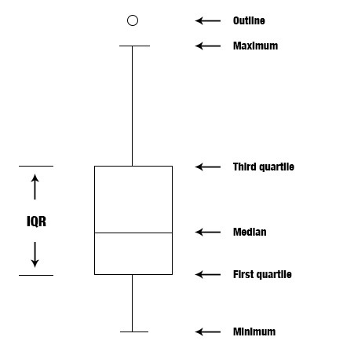
Variation is the reason this subject exists
If every patient responded to a drug identically, you would need one patient to test it. If every light bulb failed at exactly 1,200 hours, you would need one bulb to write the warranty. Nothing behaves that way. Measurements of the same thing differ, individuals differ from one another, and repeating a study gives slightly different answers each time. Statistics is the science of collecting, organizing, summarizing, and drawing conclusions from data in the presence of that variation.
The practical payoff is decisions. A hospital deciding whether to change a protocol, a company deciding which of two web pages to keep, a city deciding where to put a bus route — all of them face the same problem. They have some data, the data are noisy, the data cover only part of the situation, and a choice still has to be made. Statistics is how you make that choice defensible rather than merely confident.
The field splits cleanly in two, and knowing which half you are in is most of the battle. Descriptive statistics summarizes the data you actually have. Inferential statistics uses those data to make a claim about a larger group you did not measure, and attaches an honest statement of uncertainty to that claim.
Descriptive statistics: making a pile of numbers speak
Suppose you record your commute, in minutes, on nine workdays:
22, 25, 19, 31, 24, 27, 21, 88, 23
Nine numbers is already too many to hold in your head. Descriptive statistics compresses them. Start with the mean (the arithmetic average), written x̄ and read “x-bar”:
x̄ = Σx ÷ n
The symbol Σ (capital sigma) just says “add them all up,” and n is how many values you have. Adding: 22 + 25 + 19 + 31 + 24 + 27 + 21 + 88 + 23 = 280, and n = 9, so
x̄ = 280 ÷ 9 = 31.1 minutes
Now the median, the middle value once the data are sorted. Sorted, the nine values are 19, 21, 22, 23, 24, 25, 27, 31, 88. With n = 9 the middle position is the 5th, so the median is 24 minutes. And the range, the crudest measure of spread, is largest minus smallest: 88 − 19 = 69 minutes.
Look at what those three numbers reveal. The mean says 31.1 minutes; the median says 24. They disagree because of a single day — the 88 — when something went badly wrong. Delete that one day and the remaining eight sum to 192, giving a mean of 192 ÷ 8 = 24.0 minutes, exactly matching the median. One unusual value dragged the average up by seven minutes. If you budgeted 31 minutes for your commute you would be early almost every single day.
That is the first real lesson of the subject: a summary is a choice, and different summaries answer different questions. The median answers “what is a typical day?” The mean answers “what happens on average over many days?” — which is the right question if you are totalling up hours lost to commuting over a year.
Inferential statistics: from the part to the whole
Descriptive work stops at the data in front of you. The moment you say “and therefore the population is like this,” you have crossed into inference. If 640 of 1,000 surveyed voters favor a measure, the descriptive fact is that 64% of those 1,000 favored it. The inferential claim — “about 64% of all voters favor it, give or take three points” — is a leap, and inference is the machinery that makes the leap safely and quantifies how far it might land off target.
Two tools do most of that work, and both are routinely misdescribed, so meet them correctly now even though the details come later. A confidence interval is a range built from your sample by a procedure with a known long-run success rate; “95% confidence” describes the procedure, meaning that if the study were repeated over and over, about 95% of the intervals produced that way would contain the true value. It does not mean there is a 95% chance that the one interval in front of you contains it. A p-value is the probability of getting data at least as extreme as yours if a specified “nothing is going on” hypothesis were true. It is emphatically not the probability that the hypothesis is true.
Both tools carry conditions, and the conditions are the part most often skipped. Their advertised performance — the 95%, the p-value — holds only if the sample was actually drawn at random from the population being described, if the observations are independent of one another, and if the model behind the calculation is a reasonable fit to the data. Feed either procedure a self-selected sample and it will still return a tidy interval and a crisp p-value; those numbers simply will not mean what they claim to. Assumptions are not fine print appended to a result. They are the load-bearing wall the result stands on, and every later chapter will state them before it states a conclusion.
| Descriptive statistics | Inferential statistics | |
|---|---|---|
| Question | What do these data look like? | What does the larger group look like? |
| Scope of claim | Only the cases measured | Beyond the cases measured |
| Typical tools | Mean, median, range, standard deviation, tables, histograms, box plots | Confidence intervals, hypothesis tests, regression, margin of error |
| Uncertainty | None to report — the numbers are what they are | Must be reported — it is the whole point |
| Example | “The 30 students in this class averaged 78 on the exam.” | “Students taught this way score about 5 points higher, 95% CI 2 to 8.” |
- Statistics exists because measurements and individuals vary; its job is turning noisy data into defensible decisions.
- Descriptive statistics summarizes the data you have; inferential statistics generalizes beyond them and reports the uncertainty.
- The mean (x̄ = Σx ÷ n) is pulled by extreme values; the median is not. Report both when they disagree.
- “95% confident” describes the long-run behavior of the procedure, not the chance that this one interval is right.
Section 2Population and sample
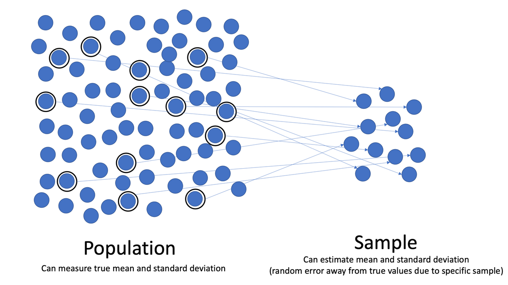
The whole group and the piece you can afford
A population is the entire collection of individuals, objects, or measurements you actually want to know about. A sample is the subset of that population you manage to observe. Notice that “population” does not have to mean people: it can be every weld on a bridge, every transaction last quarter, or every possible roll of a die. What defines a population is the question you are asking. If you want to know about licensed electricians in Ohio, that is your population; a study of the electricians employed by one Ohio contractor is a sample from it, and possibly a poor one.
Measuring every member of a population is a census. It is the ideal, and it is usually impossible. Populations are too big, too expensive to reach, too spread out, still being created (next year's customers do not exist yet), or destroyed by measurement — you cannot crash-test every car you intend to sell, or taste-test every jar of sauce. A well-chosen sample of 1,200 people can describe a nation of 300 million to within a few percentage points, for the price of a few days of phone calls. That efficiency is the whole reason sampling exists.
Parameter versus statistic
This distinction carries the rest of the book, so learn it once and properly. A parameter is a number that describes a population. A statistic is a number that describes a sample. The parameter is what you want; the statistic is what you can get. Both get their own symbols, and mixing them up is the single most common notation error in a first course.
| Quantity | Population parameter | Sample statistic | Status |
|---|---|---|---|
| Size | N | n | Counts |
| Mean | μ (mu) | x̄ (x-bar) | μ is fixed and unknown; x̄ varies by sample |
| Standard deviation | σ (sigma) | s | σ is fixed and unknown; s varies |
| Proportion | p | p̂ (p-hat) | p is fixed and unknown; p̂ varies |
A memory hook that actually works: Population goes with Parameter and with Greek letters; Sample goes with Statistic and with ordinary Roman letters. Greek for the truth you cannot see, Roman for the estimate you can compute.
Worked example: one parameter, many statistics
Take a tiny population of five employees whose years of service are 2, 4, 6, 8, and 10. Because this population is small enough to measure completely, we can compute the parameter directly:
μ = (2 + 4 + 6 + 8 + 10) ÷ 5 = 30 ÷ 5 = 6 years
The population standard deviation uses σ = √[ Σ(x − μ)2 ÷ N ]. The deviations from 6 are −4, −2, 0, 2, 4; squaring gives 16, 4, 0, 4, 16, which sum to 40. So σ2 = 40 ÷ 5 = 8 and σ = √8 ≈ 2.83 years.
Now pretend we could only afford to look at three employees. Different samples of three give different answers:
| Sample of n = 3 | Sum | x̄ | Σ(x − x̄)2 | s2 = Σ(x − x̄)2 ÷ (n − 1) | s |
|---|---|---|---|---|---|
| 2, 4, 6 | 12 | 4.0 | 4 + 0 + 4 = 8 | 8 ÷ 2 = 4 | 2.00 |
| 2, 6, 10 | 18 | 6.0 | 16 + 0 + 16 = 32 | 32 ÷ 2 = 16 | 4.00 |
| 6, 8, 10 | 24 | 8.0 | 4 + 0 + 4 = 8 | 8 ÷ 2 = 4 | 2.00 |
The parameter μ never moved: it is 6, permanently. The statistic x̄ came out 4.0, 6.0, and 8.0. That spread of answers is sampling error — the unavoidable difference between a sample statistic and the population parameter that arises purely because you looked at a part instead of the whole. Sampling error is not a mistake and it cannot be eliminated, only measured and shrunk (larger samples make it smaller).
Notice also the n − 1 in the sample variance. Deviations are measured from x̄, which is itself pulled toward the sample's own values, so the squared deviations come out slightly too small on average. Dividing by n − 1 instead of n corrects that tilt, so that s2 neither systematically over- nor under-estimates σ2. Population variance divides by N; sample variance divides by n − 1.
Sampling bias is a different animal entirely. Bias is a systematic tilt in how the sample was chosen that pushes the statistic away from the parameter in a consistent direction — surveying only people who answer landlines, only customers who bothered to leave a review, only patients healthy enough to return for follow-up. The defense against sampling error is a bigger sample. The defense against bias is a properly randomized one, in which every member of the population has a known, non-zero chance of selection.
- A population is everyone or everything you want to describe; a sample is the part you observe; a census measures the whole population.
- Parameters (μ, σ, p, N) describe populations and are fixed but unknown; statistics (x̄, s, p̂, n) describe samples and change from sample to sample.
- We sample because censuses are too costly, too slow, incomplete, or destructive.
- Sampling error is the natural sample-to-sample wobble and shrinks with larger n; sampling bias is a systematic tilt from bad selection and shrinks only with better design.
Section 3Types of data
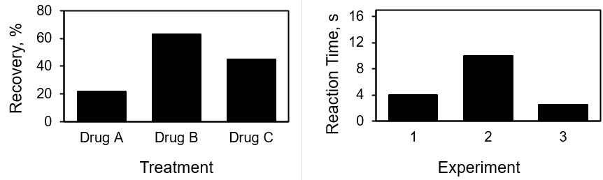
Qualitative versus quantitative
A variable is any characteristic that can differ from one individual to the next; the recorded values are the data. The first fork in the road is whether the variable names a quality or measures a quantity.
Qualitative (also called categorical) variables place each individual into a category: blood type, brand of phone, county of residence, whether a part passed inspection. The values are labels. You can count how many fall in each category and compute percentages, but the labels themselves cannot be added, averaged, or subtracted.
Quantitative (also called numerical) variables record an amount or a count: height, salary, number of siblings, reaction time in milliseconds. Their values are genuine numbers on which arithmetic means something. A useful test: if the answer to “how much” or “how many” is a number that you would meaningfully add up, the variable is quantitative.
Discrete versus continuous
Quantitative variables split again. A discrete variable can take only separated values, typically from counting — you can list the possibilities, and there are gaps between them. The number of children in a household is 0, 1, 2, 3, …; no household contains 2.4 children. A continuous variable can take any value in an interval, typically from measuring — between any two possible values there is always another. A person's weight might be 68 kg, 68.4 kg, or 68.4173 kg; the only limit is the precision of the scale.
The rule of thumb: counted things are discrete, measured things are continuous. Money is the classic gray case — strictly discrete because it comes in cents, but with so many closely spaced possible values that we treat it as continuous in practice.
| Variable | Qualitative or quantitative? | Discrete or continuous? | Why |
|---|---|---|---|
| Blood type (A, B, AB, O) | Qualitative | — | A label, not an amount |
| Eye color | Qualitative | — | A category |
| Number of siblings | Quantitative | Discrete | Counted; only whole numbers occur |
| Cars sold per day | Quantitative | Discrete | Counted; gaps between values |
| Body temperature | Quantitative | Continuous | Measured; any value in a range |
| Time to finish a race | Quantitative | Continuous | Measured; limited only by the clock |
| ZIP code | Qualitative | — | Digits used as a name for a place |
Numbers that are not quantities
Plenty of data look numeric and are not. ZIP codes, jersey numbers, patient ID numbers, and phone numbers are made of digits, but the digits function as names. The average ZIP code of your customers is a meaningless number that a spreadsheet will cheerfully compute for you. The same trap appears when categories are coded for a computer — entering 1 = single, 2 = married, 3 = divorced does not make marital status quantitative, and the “mean marital status of 1.8” is nonsense. Always ask what the number stands for, not what it looks like.
A worked point on the discrete side that trips people up: an average of a discrete variable need not be a possible value. Take five households with 1, 2, 0, 3, and 2 children. The sum is 1 + 2 + 0 + 3 + 2 = 8, and n = 5, so
x̄ = 8 ÷ 5 = 1.6 children per household
No household has 1.6 children, and that is fine. The mean is a summary of the group, not a description of any individual member. “The average family has 1.6 children” is a correct statement about families collectively and an absurd one about any family in particular.
- Qualitative (categorical) data name categories; quantitative (numerical) data measure amounts or counts.
- Quantitative data are discrete (counted, separated values) or continuous (measured, any value in an interval).
- Digits are not automatically quantities — ZIP codes and coded categories are qualitative.
- The mean of a discrete variable can be a value no individual has (1.6 children); a summary describes the group, not a member.
Section 4Levels of measurement
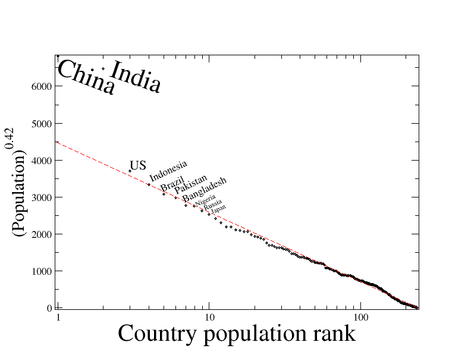
Four levels, each adding one property
Classifying data as qualitative or quantitative is a good first cut, but it is too coarse to tell you which calculations are legitimate. The levels of measurement refine it into four rungs. Each rung keeps everything the rung below it has and adds exactly one new capability, so the ladder is easy to hold in memory.
Nominal is the bottom rung: categories with no natural order. Blood type, religion, marital status, department. You can count and compare frequencies, and that is all. The only measure of center available is the mode — the most common category.
Ordinal adds order. Categories can be ranked, but the distances between ranks are unknown or unequal. Class rank, military rank, letter grades, survey answers from “strongly disagree” to “strongly agree”, cancer stage I–IV. First, second, and third place tell you who beat whom but not by how much: the winner may have finished a tenth of a second ahead of second place and second place five minutes ahead of third. Mode and median are available; the mean is questionable.
Interval adds equal, meaningful distances. The gap between 20 and 30 is the same size as the gap between 70 and 80, so subtraction and addition are legitimate. What interval scales lack is a true zero — zero is a chosen landmark rather than the absence of the thing. Temperature in Celsius or Fahrenheit is the standard example; so are calendar years and IQ scores. Mode, median, and mean are all fair game, but ratios are not.
Ratio adds the true zero, where 0 genuinely means “none of it.” Height, weight, age, income, distance, reaction time, counts of anything. Because zero is real, ratios finally mean what they say: 40 kg is twice 20 kg, and a 60-minute task takes three times as long as a 20-minute task. Every summary statistic is permitted.
| Level | Categories? | Ordered? | Equal intervals? | True zero? | Examples | Center you may use |
|---|---|---|---|---|---|---|
| Nominal | Yes | No | No | No | Blood type, ZIP code, eye color | Mode only |
| Ordinal | Yes | Yes | No | No | Letter grade, cancer stage, race placing | Mode, median |
| Interval | Yes | Yes | Yes | No | Celsius, Fahrenheit, calendar year, IQ | Mode, median, mean |
| Ratio | Yes | Yes | Yes | Yes | Height, weight, income, time elapsed | All, plus meaningful ratios |
The zero test, worked out in numbers
The interval-versus-ratio line is the one students actually get wrong, and a single calculation settles it. Is 20°C twice as hot as 10°C? Naively 20 ÷ 10 = 2, so it looks like it. Test that claim by re-expressing the same two temperatures on a different scale and recomputing the ratio.
Convert to Fahrenheit with °F = (9 ÷ 5) × °C + 32:
10°C → (9 ÷ 5)(10) + 32 = 18 + 32 = 50°F
20°C → (9 ÷ 5)(20) + 32 = 36 + 32 = 68°F
Ratio: 68 ÷ 50 = 1.36
Convert to kelvin, which does have a true zero, with K = °C + 273.15:
10°C → 283.15 K
20°C → 293.15 K
Ratio: 293.15 ÷ 283.15 = 1.035
The same two physical states produce ratios of 2, 1.36, and 1.035 depending on which scale you happen to write them in. A quantity whose “twice as much” changes when you change units is not really a ratio at all. The kelvin figure is the honest one, because 0 K is the actual absence of thermal energy, while 0°C is just the freezing point of water — a convenient landmark someone chose. Differences, however, survive the translation perfectly: 20°C − 10°C = 10 Celsius degrees, and 293.15 K − 283.15 K = 10 kelvins. That is exactly what “interval level” means: differences are trustworthy, ratios are not.
Why the level dictates the arithmetic
Consider four patients who rate their pain on a 0–10 scale as 2, 3, 3, and 8. The mean is (2 + 3 + 3 + 8) ÷ 4 = 16 ÷ 4 = 4.0, and the median is the average of the two middle values, (3 + 3) ÷ 2 = 3.0. Which should you report? A self-reported pain rating is ordinal: nothing guarantees that the step from 2 to 3 hurts as much as the step from 7 to 8, and one patient's 8 is not another's 8. The mean of 4.0 quietly assumes equal spacing that the scale does not provide, and it has been dragged upward by the single 8. The median of 3.0 assumes only that the ratings can be ranked, which is true, so it is the safer summary.
In practice, researchers do sometimes average ordinal scales — averaging Likert responses is nearly universal — and it is often defensible when the categories are many and roughly evenly spaced. But it is a modeling assumption, not a mathematical entitlement, and it should be made knowingly. The general rule holds: statistics computed at a level higher than your data support will produce numbers that look precise and mean nothing.
- The four levels are nominal → ordinal → interval → ratio, each adding one property: order, then equal intervals, then a true zero.
- Nominal allows only counts and the mode; ordinal adds the median; interval adds the mean; ratio adds meaningful ratios.
- Interval scales lack a true zero, so 20°C is not twice as hot as 10°C — the same pair gives ratios of 2, 1.36, or 1.035 depending on the unit.
- Averaging ordinal data assumes equal spacing the scale does not guarantee; the median is the safer summary.
Section 5How statistics mislead
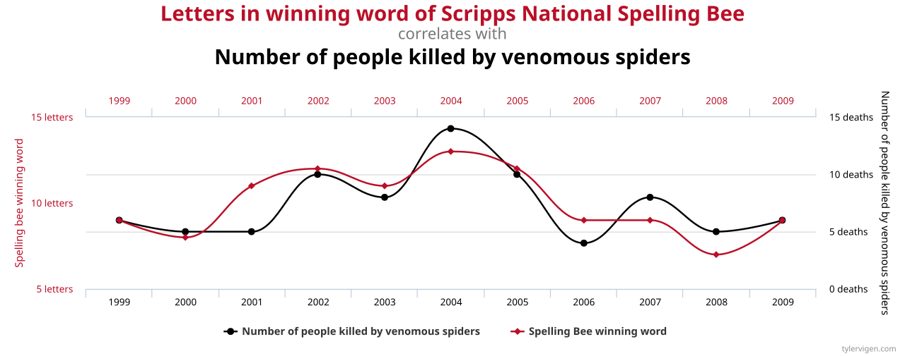
Correlation is not causation
Two variables are correlated when they move together. That fact alone permits four very different explanations, and the arithmetic cannot tell them apart. A may cause B. B may cause A (hospitals are full of sick people; hospitals do not cause sickness). Some third factor — a confounding variable — may cause both. Or it may be coincidence, which is far more common than intuition suggests: sift enough series against enough other series and you will find pairs that track each other beautifully and have nothing whatever to do with one another.
The classic confounding example: ice cream sales and drownings rise and fall together across the year. Ice cream does not drown anyone. Hot weather independently drives both. The way to break a confound is a randomized experiment, in which the researcher assigns the treatment by chance so that all other factors — known and unknown — are balanced across groups on average. Observational data can suggest causes; randomization is what lets you claim one.
The standard repertoire of tricks
Most misleading statistics are not fabricated. They are true numbers presented so that a reasonable reader draws a false conclusion. A short catalogue covers most of what you will meet.
| The trick | What it looks like | The question that defeats it |
|---|---|---|
| Truncated axis | A bar chart whose y-axis starts at 94 instead of 0, turning a 2% gap into a cliff | Where does the axis start, and how big is the change really? |
| Cherry-picked window | “Crime is up 30%” measured from an unusually quiet year | Why that start date? What does the full series look like? |
| Relative risk alone | “Doubles your risk” with no baseline given | Doubles it from what to what, in absolute terms? |
| Missing denominator | “More accidents happen within 5 miles of home” | Out of how many trips? Is the rate actually higher? |
| Survivorship bias | “Our graduates earn six figures” — measured only on those who replied | Who is missing from this data, and why? |
| Average hides the spread | “Average wait 12 minutes” when half wait 2 and half wait 40 | What is the median? What is the spread? Show me the distribution. |
| Selective outcome reporting | Twenty outcomes measured, the one “significant” result published | How many things were tested? Was this planned in advance? |
| Tiny or unstated sample | “80% of users preferred it” (from ten users) | What is n? Who were they? How were they chosen? |
| Precision theater | “Satisfaction rose to 73.62%” from a survey of 200 | Do the data support that many digits? Where is the margin of error? |
The relative-risk trick deserves the arithmetic, because it is the one that changes real decisions. Suppose a condition affects 2 in 1,000 untreated people, and a new drug cuts that to 1 in 1,000. Two headlines are available, both true:
Relative risk reduction = (0.002 − 0.001) ÷ 0.002 = 0.001 ÷ 0.002 = 0.50 = 50% — “the drug halves your risk.”
Absolute risk reduction = 0.002 − 0.001 = 0.001 = 0.1 percentage points — one fewer case per thousand people treated.
From the absolute figure you get the number needed to treat: NNT = 1 ÷ 0.001 = 1,000. One thousand people must take the drug for one to benefit. “Cuts your risk in half” and “999 out of 1,000 people get no benefit” describe the identical study. Marketing prints the first; a fair report prints both. Whenever you see a percentage change in a risk, find the baseline before you react.
Reading a claim critically
You do not need advanced technique to catch most bad statistics. You need a short list of questions asked stubbornly.
- What exactly was measured, and on whom? Definitions do enormous work. “Unemployment,” “homelessness,” and “engagement” all have several defensible definitions that give different numbers.
- Who was in the sample, and how were they chosen? Volunteers, subscribers, and people who answered the phone are not random samples of anyone.
- What is n, and what is the margin of error? A result with no stated uncertainty is a result you cannot evaluate.
- Compared with what? A number without a comparison group is not evidence. “70% improved” means nothing if 70% improve without treatment.
- Is this an experiment or an observation? Only randomized assignment supports a causal claim.
- Who is missing? Dropouts, non-responders, and failed businesses are invisible in the data and often the most informative cases.
- Who paid, and what result did they want? Not disqualifying, but it tells you where to look hardest.
- Does the conclusion actually follow? Statistical significance is not practical importance; a tiny, useless effect can be “significant” in a large enough study.
Two interpretations are worth nailing down permanently, because they are misstated constantly — including in published work. A p-value of 0.03 means: if there were truly no effect, data at least as extreme as ours would occur about 3% of the time. It does not mean there is a 3% chance the effect is absent, a 97% chance the finding is real, or that the effect is large. The mirror-image error is equally common and equally damaging: a large p-value — 0.40, say — does not show that there is no effect. Failing to find convincing evidence against a hypothesis is not the same as establishing that it is true, and a small or noisy study fails to detect real effects routinely. “We did not reject it” means only that these data are compatible with it; absence of evidence is not evidence of absence. And a 95% confidence interval of 2 to 8 points describes a procedure that, used repeatedly across many studies, captures the true value about 95% of the time. For the single interval printed in front of you, the true value is either inside it or it is not; the 95% is a property of the method, not a probability attached to this one result.
- Correlation permits four explanations — cause, reverse cause, confounding, or coincidence — and only a randomized experiment singles out cause.
- Common tricks: truncated axes, cherry-picked baselines, relative risk without the absolute, missing denominators, survivorship bias, and averages that hide the spread.
- A 50% relative reduction can mean a 0.1-percentage-point absolute reduction and an NNT of 1,000. Always ask for the baseline.
- A p-value is not the probability the hypothesis is true; a 95% confidence interval describes the long-run procedure, not this one interval.
The chapter in one breath
- Statistics exists because things vary; it turns noisy, partial data into decisions you can defend.
- Descriptive statistics summarizes the data in hand; inferential statistics generalizes to a population and must report its uncertainty.
- The mean is pulled by extreme values and the median is not — nine commutes averaging 31.1 minutes had a median of just 24.
- A population is what you want to know about; a sample is what you can afford. Parameters (μ, σ, p) are fixed and unknown; statistics (x̄, s, p̂) vary from sample to sample.
- Sampling error is unavoidable wobble that shrinks with larger samples; sampling bias is a design flaw that a bigger sample does not touch — extra data only pin down the wrong value more precisely.
- Data are qualitative (categories) or quantitative, and quantitative data are discrete (counted) or continuous (measured) — digits alone do not make a quantity.
- The four levels of measurement — nominal, ordinal, interval, ratio — each add one property, and they decide which calculations are legitimate; without a true zero, “twice as much” is meaningless.
- Most misleading statistics use true numbers framed badly; ask what was measured, on whom, compared with what, out of how many, and who is missing.
ReferenceWords worth knowing
A quick reference for the terms introduced in this chapter. Skim it now to see the shape of the vocabulary, then come back whenever a word in a later chapter refuses to sit still.
- Bias (sampling bias)
- A systematic tendency for a sampling method to produce statistics that miss the parameter in a consistent direction. Unlike sampling error, it is not reduced by taking a larger sample.
- Categorical (qualitative) variable
- A variable whose values are labels placing each individual into a group, such as blood type or county. Counts and percentages are meaningful; arithmetic on the labels is not.
- Census
- A study in which every member of the population is measured, producing parameters directly rather than estimating them.
- Confidence interval
- A range of plausible values for a parameter, produced by a procedure with a stated long-run success rate. “95% confidence” describes how often the procedure captures the truth across many repetitions, not the chance that one particular interval does.
- Confounding variable
- An outside factor related to both variables under study, capable of producing a correlation between them even when neither causes the other.
- Continuous variable
- A quantitative variable that can take any value within an interval, limited only by measurement precision — height, time, temperature.
- Correlation
- A tendency for two variables to move together. A correlation is consistent with four different situations — one variable causing the other, the reverse, a confounding variable driving both, or coincidence — and the number itself cannot distinguish among them. Only a randomized experiment licenses a causal claim.
- Descriptive statistics
- Methods for organizing and summarizing the data actually collected, with no claim made about anyone not measured.
- Discrete variable
- A quantitative variable whose possible values are separated, usually arising from counting — number of children, cars sold per day.
- Inferential statistics
- Methods for drawing conclusions about a population from a sample, always accompanied by a statement of uncertainty.
- Interval level
- A level of measurement with ordered categories and equal, meaningful distances, but no true zero. Differences are meaningful; ratios are not. Celsius temperature and calendar years are examples.
- Mean
- The arithmetic average, Σx ÷ n for a sample and Σx ÷ N for a population. It uses every value, which is why a single extreme observation can pull it well away from the bulk of the data.
- Median
- The middle value of a sorted data set — the average of the two middle values when the count is even. Unaffected by how extreme the extreme values are, so it is the more honest summary of a skewed distribution.
- Mode
- The most frequently occurring value or category. The only measure of center available for nominal data.
- Nominal level
- The lowest level of measurement: unordered categories. Only counts, proportions, and the mode are meaningful.
- Ordinal level
- A level of measurement whose categories can be ranked, but with unknown or unequal distances between ranks. The median is appropriate; the mean requires an added assumption.
- Parameter
- A numerical characteristic of a population, such as μ or σ. Fixed in value and, in practice, unknown.
- Population
- The complete collection of individuals, objects, or measurements that a question is about.
- P-value
- The probability of observing data at least as extreme as those obtained, computed assuming a specified null hypothesis is true. It is not the probability that the hypothesis is true.
- Quantitative (numerical) variable
- A variable recording an amount or a count, on which arithmetic is meaningful.
- Random sample
- A sample chosen by a chance mechanism in which every member of the population has a known, non-zero probability of selection — the principal defense against bias.
- Range
- The largest value minus the smallest — the simplest measure of spread, and the most fragile, since it is determined entirely by the two most extreme observations.
- Ratio level
- The highest level of measurement: ordered, equally spaced, and possessing a true zero meaning “none.” Ratios such as “twice as much” are meaningful. Weight, income, and elapsed time are examples.
- Sample
- The subset of a population actually observed and measured.
- Sampling error
- The natural difference between a sample statistic and the population parameter, caused solely by observing a part rather than the whole. It shrinks as sample size grows.
- Statistic
- A numerical characteristic of a sample, such as x̄ or s. Computable from data, and different for every sample drawn.
- Variable
- Any characteristic that can differ from one individual to another; the recorded values of a variable are the data.
Check yourself
Sampling & Data Collection
Almost every number you will ever meet in a report, a news story, or a research paper came from a sample — a few people standing in for many. That fact should make you nervous until you understand why it works, and it works far better than most people expect: a well-chosen sample of a thousand can describe a nation of three hundred million to within a few percentage points. The catch is the word well-chosen. A sample earns its authority from how it was selected, never from how big it is, and the most spectacular statistical failures in history were enormous samples collected badly. This chapter shows you where good data comes from, how it goes wrong, and how to tell the difference between a study that can prove a cause and one that can only spot a pattern.
By the end of this chapter you can
- Distinguish a population from a sample, and a parameter from a statistic.
- Explain why a randomly chosen sample represents its population, and why precision depends on n rather than on population size.
- Compute and interpret the standard error of a sample mean, σ/√n.
- Describe and carry out simple random, stratified, cluster, and systematic sampling, and say why convenience sampling is not a probability method.
- Separate sampling error from bias, and sampling error from nonsampling error.
- Recognize undercoverage, voluntary response, nonresponse, and response bias in a described study.
- Tell an observational study from an experiment and state exactly what each one licenses you to conclude.
- Design a simple experiment using control, randomization, replication, blinding, and a placebo.
Section 1Why sampling works

Population, sample, parameter, statistic
The population is every individual you want to say something about — every registered voter, every bag of chips off the line, every patient with a certain diagnosis. The sample is the subset you actually measure. A number that describes the population is a parameter; a number computed from your sample is a statistic. Parameters are fixed and (almost always) unknown. Statistics are known and, because a different sample would have given different numbers, they wobble.
Keeping the two straight is the single most useful habit in this book, because the entire subject is one long answer to one question: how close is my statistic to the parameter I care about? Notation helps — Greek letters for the truth, Roman letters for the estimate.
| Quantity | Parameter (population) | Statistic (sample) | Known? |
|---|---|---|---|
| Mean | μ | x̄ | μ unknown; x̄ computed |
| Standard deviation | σ | s | σ unknown; s computed |
| Proportion | p | p̂ | p unknown; p̂ computed |
| Size | N | n | Both usually known |
A census measures the whole population, so it reports parameters directly. We sample instead of taking a census for four reasons: cost, time, inaccessibility (you cannot find every homeless person in a city), and destruction (testing whether a fuse blows destroys the fuse — a census of fuses would leave none to sell).
Why a random sample looks like its population
Representativeness is not something you can eyeball. A sample "looks representative" to a human only after the human has decided which features matter, and the features that matter are usually the ones nobody thought of. Random selection solves this without knowing anything about the population: if every individual has the same chance of being drawn, then every characteristic — age, income, opinion, blood type, the ones you measured and the ones you never imagined — is represented in the sample in roughly its population proportion, on average. Randomness does not guarantee a good sample every time. It guarantees that the misses are unbiased and, crucially, that their size is calculable.
That last point is what makes sampling a science rather than a hope. The wobble from sample to sample has a name, sampling variability, and a measurable size, the standard error. For a sample mean drawn from a population with standard deviation σ,
SE(x̄) = σ ÷ √n
That formula comes with conditions attached, and it is worth naming them now because every technique later in this book inherits them. It requires the observations to be independent — in practice, that the individuals were drawn at random and that the sample is no more than roughly 10% of the population, so that removing one unit barely changes the odds for the next. Violate either condition and the formula misreports the true wobble: sample a large slice of a small population and the real standard error is smaller than σ/√n; use a cluster design, where neighbors resemble neighbors, and it is larger. A standard error computed from a convenience sample is not conservative or approximate — it is meaningless, because the probabilities it is built from do not exist.
A worked example: how precision grows
Suppose commute times in a large city have a standard deviation of σ = 12 minutes, and we want to estimate the mean commute μ.
- n = 36: SE = 12 ÷ √36 = 12 ÷ 6 = 2.0 minutes
- n = 144: SE = 12 ÷ √144 = 12 ÷ 12 = 1.0 minute
- n = 576: SE = 12 ÷ √576 = 12 ÷ 24 = 0.5 minutes
Read the pattern: to cut the standard error in half you must quadruple the sample, because n sits under a square root. Going from 36 to 144 people (four times the work) buys you twice the precision, not four times. This is the law of diminishing returns that governs every survey budget ever written.
It also tells you how far off a typical sample lands — provided one more assumption holds: that the sampling distribution of x̄ is approximately normal. That is exact when the population itself is normal, and approximately true for a large enough n whatever the population shape, by the Central Limit Theorem. Granting it, if the true mean commute is μ = 24 minutes and n = 36, then roughly 95% of samples produce an x̄ within about 2 standard errors of the truth — that is, between 24 − 2(2.0) = 20 minutes and 24 + 2(2.0) = 28 minutes. Notice what is random here: the sample, not μ. The population mean sits still; our estimate is what moves. The "95%" describes how often the procedure lands close, across all the samples we might have drawn — it is never a probability statement about μ, which has no probability distribution at all.
Now look hard at that formula. N, the population size, does not appear in it. As long as the sample is a small fraction of the population, a sample of 1,000 is essentially as precise for a country of 300 million as it is for a town of 30,000. This is the most counter-intuitive true fact in introductory statistics, and it is why national polls of about 1,000 people are not absurd. What you need is a big enough spoonful, not a spoonful proportional to the size of the pot — provided the soup is stirred.
- A parameter (μ, σ, p) describes the population and is unknown; a statistic (x̄, s, p̂) is computed from the sample and varies.
- Random selection makes a sample representative on every variable at once, including the ones you never measured.
- SE(x̄) = σ/√n — quadrupling n halves the standard error.
- Precision depends on n, essentially not on population size; a bigger badly chosen sample is just a more confident wrong answer.
Section 2Sampling methods

The sampling frame comes first
Before you can select anybody you need a sampling frame: the actual list of units you will draw from. The frame is where good intentions quietly die. You may want "all adults in the county," but your frame is "all landline numbers in the county," and those are not the same population. Every method below is only as good as the frame it runs on, so write down your frame explicitly and ask who is missing from it.
The four probability methods
A probability sample is one in which every individual has a known, nonzero chance of selection. Only probability samples support the inference machinery in the rest of this book.
A simple random sample (SRS) of size n is one chosen so that every possible group of n individuals is equally likely to be the sample. In practice you number the frame 1 to N and let a computer draw n distinct numbers. Note the definition carefully: it is stronger than "everyone has an equal chance." Systematic sampling gives everyone an equal chance too, yet most groups of size n can never be selected by it, so it is not an SRS.
Stratified sampling splits the frame into strata — groups whose members resemble each other, such as class year, region, or age band — and then takes a separate random sample inside every stratum. When the strata really do differ from one another, this beats an SRS of the same size, because you have removed between-group variation from your estimate by force instead of leaving it to luck. It also guarantees you will not accidentally draw zero seniors.
Cluster sampling also divides the frame into groups, but the logic is reversed. Clusters are naturally occurring bundles — city blocks, clinics, classrooms — each of which ideally resembles the whole population in miniature. You randomly select whole clusters and then measure everyone inside the chosen ones. This is a cost method: visiting 30 blocks and interviewing every household is far cheaper than chasing 600 addresses scattered across a city. The price is precision. Neighbors resemble neighbors, so 600 people from 30 blocks carry less independent information than 600 people drawn at random.
Systematic sampling takes every k-th unit after a random start, with k = N/n. It is fast and needs no numbered list — you can do it at a factory exit or a store door. Its one real danger is periodicity: if the list repeats with a cycle that matches k, the sample locks onto one phase of the cycle. Sampling every 7th day of hospital admissions, for instance, means every observation falls on the same weekday.
A worked example: proportional allocation and a systematic plan
A student body of N = 12,000 breaks down as 4,200 first-years, 3,300 sophomores, 2,700 juniors, and 1,800 seniors (4,200 + 3,300 + 2,700 + 1,800 = 12,000 ✓). We want n = 400 students, allocated proportionally, so each stratum contributes nh = n × (Nh / N). Since 400/12,000 = 1/30, we simply divide each stratum by 30:
- First-years: 4,200 ÷ 30 = 140
- Sophomores: 3,300 ÷ 30 = 110
- Juniors: 2,700 ÷ 30 = 90
- Seniors: 1,800 ÷ 30 = 60
Check the total: 140 + 110 + 90 + 60 = 400 ✓. Every student's selection probability is 140/4,200 = 1/30 for a first-year, 60/1,800 = 1/30 for a senior — identical, which is exactly the point of proportional allocation.
The same 400 by systematic sampling instead: k = 12,000 ÷ 400 = 30. Draw a random start between 1 and 30 — say 17 — then take students 17, 47, 77, 107, and so on, each one 30 further down the list. The j-th pick is 17 + 30(j − 1), so the 400th is 17 + 30(399) = 17 + 11,970 = 11,987, comfortably inside the list ✓. Fast, tidy, and perfectly fine here — unless the enrollment list happens to cycle every 30 names.
| Method | How it works | Best when | Main risk |
|---|---|---|---|
| Simple random | Every group of size n equally likely | You have a clean, complete frame | Costly to reach a scattered sample |
| Stratified | Split into similar groups, sample within every group | Groups differ from each other | Needs stratum sizes known in advance |
| Cluster | Split into mini-populations, sample whole groups | Travel or contact cost dominates | Less precise per person; clusters must be internally diverse |
| Systematic | Random start, then every k-th unit, k = N/n | Units arrive in a stream; no list exists | Hidden periodicity in the ordering |
| Convenience | Whoever is easy to reach | Never, for inference | Bias of unknown size and unknown direction |
Convenience sampling — surveying the people already in front of you — and its cousin voluntary response sampling, in which people select themselves by calling in or clicking a link, are not probability methods at all. Nobody's chance of selection is known, so no standard error can be computed and no margin of error is meaningful. They are useful for generating hypotheses and for pilot-testing a questionnaire, and for nothing else. Real surveys often chain methods together into a multistage design: cluster on counties, then on blocks, then take an SRS of households, then randomly pick one adult inside each household.
- Define the sampling frame first; everyone missing from the frame is invisible to your study.
- An SRS makes every group of size n equally likely — a stronger condition than equal individual chances.
- Stratified samples from every group (usually more precise); cluster samples whole groups (usually cheaper, less precise).
- Systematic uses k = N/n after a random start; watch for periodicity.
- Convenience and voluntary response samples support no valid inference at any size.
Section 3Bias and error

Two completely different ways to be wrong
Every estimate misses the truth, but there are two unrelated reasons why, and confusing them is the most expensive mistake in applied statistics. Sampling error is the ordinary, unavoidable difference between a sample statistic and the population parameter that arises simply because you measured some individuals rather than all of them. It is random, it is centered on zero, and it shrinks predictably as n grows — that is the σ/√n from Section 1.
Bias is systematic: a tendency for your method to miss in the same direction sample after sample. Bias does not shrink with n. Collect ten times as much data with the same flawed method and you get the same wrong answer with a tighter, more persuasive error bar around it. Think of it as target shooting: random error is a wide shot group, bias is a tight shot group centered off the bullseye. More ammunition tightens the group; only fixing the sights moves it.
The named biases, and where they come from
Undercoverage occurs when part of the population cannot appear in the frame at all — a landline-only poll in a cell-phone world, or a mall survey that misses everyone who does not shop at malls. Voluntary response bias arises because people who take the trouble to respond hold stronger opinions, usually negative, than those who do not. Nonresponse bias hits after selection: your sample was chosen properly, but a large chunk did not answer, and the ones who answered differ from the ones who did not. Response bias is about the measurement itself — question wording ("Do you support wasteful spending on X?"), social desirability (people under-report drinking and over-report voting and flossing), interviewer effects, and faulty recall.
| Problem | What goes wrong | Direction | Does a bigger n help? |
|---|---|---|---|
| Sampling error | Luck of the draw | Random, averages to zero | Yes — shrinks in proportion to 1/√n |
| Undercoverage | Frame excludes part of the population | Systematic | No |
| Voluntary response | People select themselves in | Systematic (strong opinions over-represented) | No |
| Nonresponse | Selected people do not answer | Systematic | No |
| Response bias | Answers are inaccurate as given | Systematic | No |
| Processing / measurement | Bad instrument, data-entry or coding errors | Either | No |
The last three rows are nonsampling error — every source of error that has nothing to do with which individuals you picked. Nonsampling error is the reason a census can still be wrong: the U.S. census reaches for everybody and still misses people and miscodes answers. In most real surveys, nonsampling error is larger than sampling error, and it is the part nobody reports.
A worked example: bias dwarfs the margin of error
A researcher randomly selects 1,000 adults and asks whether they exercise at least three times a week. Only 400 respond, and 260 of those say yes:
p̂ = 260 ÷ 400 = 0.65, or 65%
The reported 95% margin of error for a proportion is about 1.96 × √(p̂(1 − p̂) / n). Before using it, check what it assumes: a random sample of independent individuals, and enough of both outcomes for the normal approximation to be trustworthy — the usual rule of thumb is at least 10 successes and 10 failures. Here we have 260 yes and 140 no ✓, so the arithmetic is legitimate. Watch what happens next anyway. Step by step:
- p̂(1 − p̂) = 0.65 × 0.35 = 0.2275
- 0.2275 ÷ 400 = 0.00056875
- √0.00056875 ≈ 0.02385
- 1.96 × 0.02385 ≈ 0.0467 → about ±4.7 percentage points
Now suppose a determined follow-up reaches the 600 nonrespondents and finds that only 25% of them exercise three times a week — 0.25 × 600 = 150 people. The truth across all 1,000 selected adults is
(260 + 150) ÷ 1,000 = 410 ÷ 1,000 = 0.41, or 41%
The estimate was off by 0.65 − 0.41 = 0.24, twenty-four percentage points, while the advertised uncertainty was under five. The bias is five times the entire margin of error. And here is the sting: repeat the study with 10,000 selected adults at the same 40% response rate and the estimate stays near 65% while the margin of error falls to about ±1.5 points. You will have bought yourself a far more precise version of the same wrong number.
- Sampling error is random and shrinks in proportion to 1/√n; bias is systematic and does not shrink at all.
- Nonsampling error (coverage, nonresponse, response, processing) can strike even a full census and usually exceeds sampling error.
- Nonresponse bias is measured by who is missing, so a low response rate is a warning sign no sample size can cure.
- A margin of error quantifies chance variation only — never bias.
Section 4Observational studies versus experiments

One question separates them
The dividing line is embarrassingly simple: who decided who got what? In an observational study the researcher measures individuals as they already are, recording an exposure that the individuals (or life) chose for them. In an experiment the researcher assigns the explanatory variable — deciding, by a chance mechanism, which subjects receive which treatment — and then compares the outcomes.
Observational studies come in familiar shapes. A cross-sectional study takes a snapshot at one point in time. A prospective cohort study identifies people now and follows them forward, waiting for outcomes to appear. A retrospective case-control study starts with people who already have the outcome, matches them to people who do not, and looks backward for differences in exposure. All three observe; none assigns.
Why observation cannot prove cause
A confounding variable (also called a lurking variable) is a third factor associated with the explanatory variable and related to the response, so that its effect cannot be untangled from the effect you care about. Since people sort themselves into the exposed and unexposed groups, and they sort by all sorts of hidden reasons, observational groups differ in a thousand ways besides the exposure.
Watch how badly this can go, with exact numbers. Take 1,000 coffee drinkers, of whom 600 smoke, and 1,000 non-coffee-drinkers, of whom 200 smoke. Let lung cancer strike 10% of smokers and 1% of nonsmokers — and let coffee itself do absolutely nothing.
- Coffee drinkers: (600 × 0.10) + (400 × 0.01) = 60 + 4 = 64 cases → 64/1,000 = 6.4%
- Non-coffee-drinkers: (200 × 0.10) + (800 × 0.01) = 20 + 8 = 28 cases → 28/1,000 = 2.8%
Coffee drinkers get lung cancer at 6.4% versus 2.8% — a rate ratio of 6.4 ÷ 2.8 ≈ 2.3, so a headline could truthfully announce that coffee drinkers are more than twice as likely to develop lung cancer. Every number above is real and correctly computed; the causal story is pure fiction manufactured by smoking. That is confounding, and no amount of extra data removes it, because more data means more of the same tangle.
So when you see an association between X and Y, five explanations compete: X causes Y; Y causes X (reverse causation — do sneakers cause fitness, or do the fit buy sneakers?); a confounder causes both; the association is a fluke of sampling; or the study was biased. Observation alone cannot referee among them.
What each design licenses you to say
Two different randomizations do two different jobs, and students mix them up constantly. Random sampling — how subjects got into the study — buys generalization to the population. Random assignment — how subjects got sorted once inside — buys causal conclusions. They are independent choices, so there are four cases.
| Random assignment | No random assignment | |
|---|---|---|
| Random sample | Causal conclusion, generalizable to the population (the gold standard, and rare) | Association only, generalizable to the population (a good survey or cohort study) |
| No random sample | Causal conclusion, but only for subjects like these (most clinical trials) | Association only, and only for subjects like these (a convenience study) |
Observational studies are not second-class citizens; they are often the only ethical or feasible option. You cannot randomly assign people to smoke for thirty years. What tips the balance toward causation without an experiment is an accumulated pattern — a large effect, a dose-response gradient, consistency across many populations and designs, correct time order, and a plausible mechanism — which is exactly how the case against tobacco was built.
- Observational study: exposure is observed. Experiment: exposure is assigned by the researcher.
- A confounder is linked to both the explanatory and response variables and makes association uninterpretable.
- Random sampling → generalizability; random assignment → causation. They are separate guarantees.
- Observational studies establish association; only a randomized experiment establishes causation directly.
Section 5Designing an experiment

The vocabulary, then the four principles
The individuals in an experiment are experimental units (called subjects when they are people). A factor is an explanatory variable you control; its settings are levels; a treatment is one combination of levels. The response is what you measure. A study of two drug doses at two delivery times has two factors, each at two levels, and therefore 2 × 2 = 4 treatments.
A good experiment rests on four ideas. Control means holding other conditions constant across groups and, above all, including a control group — a comparison arm receiving no treatment, a placebo, or the current standard of care. Without a comparison group you cannot separate the treatment's effect from the passage of time, from the illness resolving on its own, or from patients regressing toward their usual state. Randomization assigns units to treatments by chance. Replication means enough units per treatment that ordinary variation averages out — not merely repeating one measurement. Blocking groups similar units together and randomizes within each block, the experimental cousin of stratified sampling.
Randomization deserves its own sentence, because it is the whole reason experiments can prove things. It is not there to be fair. It is there to make the treatment groups equivalent, on average, in every respect — age, severity, genetics, diet, optimism, and the hundred variables nobody thought to record — so that when the outcomes differ, the only systematic difference left standing is the treatment. Matching on known variables cannot do this, because you can only match on what you thought of.
Placebo and blinding
A placebo is an inert imitation of the treatment — a sugar pill, a saline injection, a sham procedure. It exists because the placebo effect is real and often large: people improve because they believe they are being treated. If the control group gets nothing at all, the treatment group's improvement mixes the drug's effect with the belief's effect, and you cannot pull them apart. A placebo control makes the belief equal in both arms so the difference isolates the drug.
Blinding keeps people from knowing who got what. In a single-blind study the subjects do not know; in a double-blind study neither the subjects nor the people who interact with them and assess the outcome know. Double-blinding matters because expectation leaks: an enthusiastic assessor who knows a patient got the new drug rates that patient's "moderate" improvement as "marked." Whoever measures the response should be blind, always.
| Principle | What it does | What breaks without it |
|---|---|---|
| Control group | Provides the comparison baseline | Improvement from time, healing, or regression is credited to the treatment |
| Randomization | Balances known and unknown variables across arms | Groups differ systematically; confounding returns |
| Replication | Gives enough units for variation to average out | Ordinary noise is mistaken for a real effect |
| Blocking | Removes a known nuisance variable's influence | A big known source of variation hides the effect |
| Placebo | Equalizes the psychological effect of being treated | Belief effects are counted as drug effects |
| Double-blinding | Removes expectation from subjects and assessors | Reporting and rating drift toward what people expect |
A worked example: building the design
We want to compare a new headache drug against the standard drug and against a placebo, with 180 volunteers.
Completely randomized design. Number the volunteers 1 to 180 and use a computer to shuffle them into three arms of 180 ÷ 3 = 60 each. Every subject gets an identical-looking capsule, so nobody — subject, nurse, or assessor — can tell the arms apart: double-blind. Measure minutes to meaningful relief. Suppose the group means come back as placebo 42 minutes, standard drug 30, new drug 26. The comparisons are 42 − 30 = 12 minutes faster for the standard drug than placebo, and 30 − 26 = 4 minutes faster for the new drug than the standard. Because assignment was random, no pre-existing difference between the groups can explain those gaps in any systematic way; the remaining question is whether a gap this size could plausibly arise from chance alone, which is what the inference tools later in this book are built to answer.
Now block it. Suppose baseline headache severity strongly affects recovery time. Split the 180 into blocks first — say 108 with moderate headaches and 72 with severe ones — and randomize within each block: 108 ÷ 3 = 36 moderate per arm and 72 ÷ 3 = 24 severe per arm, and 36 + 24 = 60 per arm as before, 180 in total ✓. Every arm now has an identical severity mix by construction rather than by luck, so severity can no longer muddy the comparison, and the leftover variation the treatment effect must stand out from is smaller.
Two design cautions worth carrying forward. Keep lurking differences out of the procedure: if the new drug is given in a quiet private room and the placebo in a crowded hallway, the room is confounded with the drug. And beware attrition — subjects who drop out are usually the ones doing worst, so dropping them from the analysis quietly re-creates the very selection bias randomization was meant to destroy.
- The four pillars are control, randomization, replication, and (when useful) blocking.
- A placebo equalizes the psychological effect of treatment; double-blinding removes expectation from both subjects and assessors.
- Random assignment balances unmeasured variables, which is what licenses a causal conclusion.
- Blocking removes a known nuisance variable; it is stratification applied to assignment rather than selection.
The chapter in one breath
- A parameter describes the population and is unknown; a statistic comes from the sample and varies from sample to sample.
- Random selection, not sample size, is what makes a sample representative — it balances every variable, including the ones you never measured.
- SE = σ/√n: quadruple the sample to halve the error, and note that population size is essentially irrelevant.
- The probability methods are simple random, stratified (some from every group), cluster (everyone from some groups), and systematic (every k-th after a random start); convenience and voluntary response support no inference.
- Sampling error is random and shrinks with n; bias is systematic and never shrinks — a bigger bad sample is only a more confident wrong answer.
- Nonsampling error — coverage, nonresponse, response, processing — strikes even a census, and a margin of error accounts for none of it.
- Observational studies show association and are haunted by confounding; only experiments, which assign the treatment, demonstrate causation.
- Good experiments use a control group, random assignment, adequate replication, a placebo where relevant, and double-blinding.
ReferenceWords worth knowing
A quick reference for the terms in this chapter — skim it now, or circle back whenever a word trips you up.
- Bias
- A systematic tendency for a method to miss the truth in the same direction; unlike random error, it does not shrink as the sample grows.
- Blinding
- Withholding treatment assignment from participants (single-blind) or from participants and the researchers assessing them (double-blind).
- Blocking
- Grouping similar experimental units together and randomizing treatments within each group, so a known nuisance variable cannot distort the comparison.
- Census
- An attempt to measure every member of a population rather than a sample; still vulnerable to nonsampling error.
- Cluster sample
- A sample obtained by randomly choosing whole naturally occurring groups and measuring everyone inside them.
- Confounding variable
- A third variable associated with the explanatory variable and related to the response, so that their effects cannot be separated.
- Control group
- The comparison arm of an experiment, receiving no treatment, a placebo, or the current standard of care.
- Convenience sample
- A sample of whoever is easiest to reach; selection probabilities are unknown, so no valid inference is possible.
- Experiment
- A study in which the researcher assigns the explanatory variable to units, ideally at random, and then compares responses.
- Margin of error
- The half-width of an interval estimate, quantifying chance variation from sampling only — never bias or nonsampling error.
- Nonresponse bias
- Distortion arising when selected individuals do not participate and differ systematically from those who do.
- Nonsampling error
- Any error unrelated to which individuals were chosen — coverage gaps, nonresponse, inaccurate answers, measurement and processing mistakes.
- Observational study
- A study that records an exposure the subjects already have rather than assigning it; establishes association, not causation.
- Parameter
- A fixed numerical summary of a population, such as μ, σ, or p; almost always unknown.
- Placebo
- An inert imitation of a treatment, used so that the control group's belief in being treated matches the treatment group's.
- Population
- Every individual about whom you want to draw a conclusion.
- Random assignment
- Using chance to allocate subjects to treatments; it balances known and unknown variables and is what permits causal conclusions.
- Replication
- Assigning enough units to each treatment that ordinary variation averages out; not the same as repeating a single measurement.
- Response bias
- Distortion in the answers themselves — from question wording, social desirability, interviewer effects, or faulty recall.
- Sample
- The subset of the population actually measured.
- Sampling error
- The random difference between a sample statistic and the population parameter caused by measuring only part of the population.
- Sampling frame
- The concrete list of units from which a sample is actually drawn; anyone absent from it cannot be selected.
- Simple random sample (SRS)
- A sample chosen so that every possible group of n individuals is equally likely to be selected.
- Standard error
- The typical sample-to-sample wobble of a statistic; for a sample mean it is σ/√n, assuming independent observations.
- Statistic
- A numerical summary computed from a sample, such as x̄, s, or p̂; it varies from sample to sample.
- Stratified sample
- A sample formed by dividing the population into similar groups (strata) and drawing a random sample from within every stratum.
- Systematic sample
- A sample taken by choosing every k-th unit after a random start, with k = N/n; vulnerable to periodicity in the list.
- Undercoverage
- A coverage gap in which part of the population cannot appear in the sampling frame at all, and so can never be selected.
- Voluntary response bias
- Distortion arising when people select themselves into a sample, over-representing those with strong opinions.
Check yourself
Displaying Data
A column of two hundred numbers tells you almost nothing; the same two hundred numbers drawn as a picture tell you almost everything in about four seconds. That is the whole promise of this chapter. You will learn to organize raw data into a frequency table, to choose the right picture for the kind of variable you have — bars and pies for categories, histograms and dot plots for measurements — and to read the shape that picture reveals. You will also learn the other half of the skill, the defensive half: how a perfectly honest set of numbers can be drawn in a way that lies, and how to spot it. No formula in this chapter is harder than dividing one number by another, so if arithmetic makes you nervous, this is a friendly place to start.
By the end of this chapter you can
- Build a frequency, relative frequency, and cumulative frequency table from raw data, and check that each column totals correctly.
- Construct a grouped frequency distribution: choose a class count, compute the class width, and find class midpoints.
- Answer “how many” and “what proportion” questions directly from a cumulative column.
- Display qualitative data with a bar chart, a Pareto chart, or a pie chart, and compute each slice’s angle.
- Display quantitative data with a histogram, a stem-and-leaf plot, or a dot plot, and say when each is the better choice.
- Explain exactly why histogram bars touch and bar-chart bars do not.
- Classify a distribution as symmetric, skewed left, skewed right, or uniform, and describe its modality.
- Detect a truncated axis or a distorted scale, and quantify the exaggeration it produces.
Section 1Frequency distributions

From a pile of numbers to a table
Raw data arrive as a list. A frequency distribution is simply a table that says, for each possible value (or each range of values), how many times it occurred. That count is the frequency, written f. The sum of all the frequencies is the sample size, n, so the very first thing you do after building a frequency table is add the column up and confirm it equals n. If it does not, you miscounted, and every number downstream is wrong.
Two more columns turn a bare count into something you can actually reason with. The relative frequency is the fraction of the data in that row:
relative frequency = f ÷ n
Relative frequencies always sum to 1 (or to 100% if you express them as percentages), give or take a tiny rounding wobble. They matter because they let you compare groups of different sizes: 12 out of 40 and 30 out of 100 are the same story (0.300 either way), but the raw counts 12 and 30 are not obviously comparable at all.
The cumulative frequency is a running total — the number of observations at or below that row. It answers “how many were at most this much?” without any further arithmetic. Its final entry must equal n, which is a second free error check.
A worked example, start to finish
A survey asked n = 40 adults, “On how many of the past seven days did you exercise?” The answers are whole numbers from 0 to 7, so each value gets its own row. Here is the complete table, with every column computed.
| Days (x) | Frequency f | Relative f ÷ n | Percent | Cumulative f | Cumulative relative |
|---|---|---|---|---|---|
| 0 | 6 | 6÷40 = 0.150 | 15.0% | 6 | 0.150 |
| 1 | 8 | 8÷40 = 0.200 | 20.0% | 14 | 0.350 |
| 2 | 10 | 10÷40 = 0.250 | 25.0% | 24 | 0.600 |
| 3 | 7 | 7÷40 = 0.175 | 17.5% | 31 | 0.775 |
| 4 | 5 | 5÷40 = 0.125 | 12.5% | 36 | 0.900 |
| 5 | 2 | 2÷40 = 0.050 | 5.0% | 38 | 0.950 |
| 6 | 1 | 1÷40 = 0.025 | 2.5% | 39 | 0.975 |
| 7 | 1 | 1÷40 = 0.025 | 2.5% | 40 | 1.000 |
| Total | 40 | 1.000 | 100.0% | — | — |
Check the two totals: 6 + 8 + 10 + 7 + 5 + 2 + 1 + 1 = 40 ✓, and 0.150 + 0.200 + 0.250 + 0.175 + 0.125 + 0.050 + 0.025 + 0.025 = 1.000 ✓. Now read answers straight off the table. What proportion exercised at most 3 days? The cumulative relative entry in the “3” row: 0.775, or 77.5%. What proportion exercised more than 3 days? Take the complement: 1 − 0.775 = 0.225. Verify it the long way — 5 + 2 + 1 + 1 = 9 people, and 9 ÷ 40 = 0.225 ✓. The two routes agree, which is exactly what a well-built table should guarantee.
Grouped distributions: when values do not repeat
The table above worked because there were only eight distinct values. Measurements like commute times, weights, or incomes rarely repeat, so a row-per-value table would be as long as the data set and just as useless. The fix is a grouped frequency distribution: sort the values into a handful of non-overlapping classes and count how many fall into each. Five to ten classes is the usual sweet spot — too few and you flatten the pattern into a featureless block, too many and you shatter it into noise.
To find the class width, take the range and divide by the number of classes you want, then always round up to a convenient number:
class width ≈ (maximum − minimum) ÷ (number of classes), rounded up
Rounding up is not a suggestion. If you round down, the classes collectively span less than the data does and the largest value has nowhere to go.
Worked example. Thirty commute times, in minutes, sorted: 5, 7, 8, 11, 12, 12, 14, 15, 16, 17, 18, 19, 20, 21, 22, 23, 24, 25, 26, 28, 29, 31, 33, 35, 38, 40, 42, 47, 52, 58. The minimum is 5 and the maximum is 58, so the range is 58 − 5 = 53. Aiming for 6 classes: 53 ÷ 6 = 8.83, which rounds up to a width of 9. Starting at the minimum, 5, the classes are 5–13, 14–22, 23–31, 32–40, 41–49, 50–58. The midpoint (or class mark) of a class is the average of its two limits.
| Class (min) | Midpoint | Frequency f | Relative f | Cumulative f |
|---|---|---|---|---|
| 5–13 | (5+13)÷2 = 9 | 6 | 6÷30 = 0.200 | 6 |
| 14–22 | (14+22)÷2 = 18 | 9 | 9÷30 = 0.300 | 15 |
| 23–31 | (23+31)÷2 = 27 | 7 | 7÷30 ≈ 0.233 | 22 |
| 32–40 | (32+40)÷2 = 36 | 4 | 4÷30 ≈ 0.133 | 26 |
| 41–49 | (41+49)÷2 = 45 | 2 | 2÷30 ≈ 0.067 | 28 |
| 50–58 | (50+58)÷2 = 54 | 2 | 2÷30 ≈ 0.067 | 30 |
| Total | — | 30 | 1.000 | — |
The cumulative column ends at 30 = n ✓. Reading it: 22 of the 30 commuters — that is 22 ÷ 30 ≈ 0.733, or about 73% — travel 31 minutes or less. Plotting cumulative frequency against the upper class limit and connecting the points gives the rising curve called an ogive, the figure at the top of this section.
Classes must not overlap, and they must not leave gaps. Writing classes as 5–13, 13–22, 22–31 is a beginner’s trap: a value of exactly 13 belongs to two classes at once, so your frequencies stop being a valid count and the column will not add to n. Every observation must land in exactly one class — no more, no less.
- Frequency is a count; the frequency column must sum to n.
- Relative frequency = f ÷ n; the column sums to 1 (100%) and makes unequal-sized groups comparable.
- Cumulative frequency is a running total that answers “how many at most?” and must end at n.
- For measurements, use a grouped table: 5–10 classes, width = range ÷ classes rounded up, classes non-overlapping and gapless.
Section 2Displaying qualitative data

Bar charts: the workhorse
Qualitative (categorical) data record which group something belongs to — blood type, major, mode of transport, brand preference. There is no arithmetic to do on the categories themselves; the only number in the room is how many landed in each. A bar chart displays exactly that: one bar per category, with bar height proportional to frequency or relative frequency.
Three rules make a bar chart honest. First, the bars are separated by gaps, because the horizontal axis is a list of names, not a measuring scale — there is no space “between” Bus and Bicycle to fill in. Second, all bars are the same width, so that height is the only thing carrying information. Third, the frequency axis starts at zero; we will see in Section 5 exactly how much damage is done when it does not.
Because categories have no natural order, you are free to sort them. Sorting the bars from tallest to shortest produces a Pareto chart, which makes the dominant categories jump out and is the default choice whenever the question is “what are the biggest contributors?”
Pie charts: parts of one whole
A pie chart shows the same information as proportions of a single circle. Each category gets a wedge whose central angle is its relative frequency times the full 360 degrees:
slice angle = (f ÷ n) × 360°
Worked example. Two hundred commuters (n = 200) named their primary mode of transport. Every column below is computed from the count.
| Mode | Frequency f | Relative f | Percent | Pie angle |
|---|---|---|---|---|
| Car | 84 | 84÷200 = 0.42 | 42% | 0.42 × 360° = 151.2° |
| Bus | 46 | 46÷200 = 0.23 | 23% | 0.23 × 360° = 82.8° |
| Bicycle | 30 | 30÷200 = 0.15 | 15% | 0.15 × 360° = 54.0° |
| Walk | 28 | 28÷200 = 0.14 | 14% | 0.14 × 360° = 50.4° |
| Other | 12 | 12÷200 = 0.06 | 6% | 0.06 × 360° = 21.6° |
| Total | 200 | 1.00 | 100% | 360.0° |
Every check passes: the counts sum to 200 = n, the relative frequencies sum to 1.00, and the angles sum to 151.2 + 82.8 + 54.0 + 50.4 + 21.6 = 360.0° ✓. Notice the rows of this table are already in descending order of frequency, so charting them as listed gives you a Pareto chart for free.
When a pie chart is the wrong tool
A pie chart carries one strict requirement that people break constantly: the categories must be mutually exclusive and exhaustive — every observation in exactly one slice, all slices together making one complete whole. Data from a “check all that apply” question fail this immediately. If 200 people can each name two hobbies, the counts sum to more than 200, the percentages sum past 100%, and a pie chart of them is not merely ugly, it is a false statement about the data. Use a bar chart instead.
Even when a pie is legitimate, it is often the weaker display. Human eyes compare lengths far more accurately than angles or wedge areas, so a 14% slice and a 15% slice are effectively indistinguishable while the corresponding bars are not. Pies also collapse under more than about five or six categories, and comparing two pies side by side is close to hopeless. A reasonable habit: reach for a pie only when you have a few categories and your point is genuinely “this piece is roughly half of everything”; otherwise, reach for bars.
Never add a third dimension to a pie. A tilted, extruded “3D” pie chart renders slices near the front with more visible area than slices of the same size at the back. The perspective, not the data, decides which category looks biggest — which means the chart is misreporting even though every number behind it is correct.
- Bar charts use equal-width bars separated by gaps, because the horizontal axis lists categories, not measurements.
- A Pareto chart is a bar chart sorted from tallest to shortest — best for “which categories dominate?”
- Pie slice angle = (f ÷ n) × 360°, and the angles must total 360°.
- Pies require mutually exclusive, exhaustive categories; they fail on multiple-response data and on more than about six categories.
Section 3Displaying quantitative data

Histograms
A histogram is the picture of a grouped frequency distribution: the horizontal axis is the measured variable on a real numeric scale, each class becomes a bar, and bar height is the frequency (or relative frequency) in that class. Because the horizontal axis is continuous, the bars touch. That single visual detail is the whole difference between a histogram and a bar chart, and it encodes a real difference in the data: in a bar chart the gap says “these are separate categories,” while in a histogram the shared edge says “this class ends exactly where the next one begins.”
Worked example. Twenty-five resting pulse rates, in beats per minute: 58, 61, 62, 64, 65, 67, 68, 68, 70, 71, 72, 72, 73, 74, 75, 76, 77, 78, 80, 81, 83, 85, 88, 91, 96. Using classes of width 10:
| Class (bpm) | Boundaries | Frequency f | Relative f |
|---|---|---|---|
| 50–59 | 49.5 – 59.5 | 1 | 1÷25 = 0.04 |
| 60–69 | 59.5 – 69.5 | 7 | 7÷25 = 0.28 |
| 70–79 | 69.5 – 79.5 | 10 | 10÷25 = 0.40 |
| 80–89 | 79.5 – 89.5 | 5 | 5÷25 = 0.20 |
| 90–99 | 89.5 – 99.5 | 2 | 2÷25 = 0.08 |
| Total | — | 25 | 1.00 |
Both checks pass: 1 + 7 + 10 + 5 + 2 = 25 = n ✓ and 0.04 + 0.28 + 0.40 + 0.20 + 0.08 = 1.00 ✓. The class boundaries in the middle column are the halfway points between one class’s upper limit and the next class’s lower limit; they are what you actually draw the bars against, which is how the bars come to touch without overlapping. The tallest bar sits over 70–79, holding 40% of the data, and the bars fall away more gradually on the right than on the left: the far-left bar holds 1 observation while the far-right bar holds 2, and the maximum (96) sits 17 beats above the peak class while the minimum (58) sits only 12 beats below it. That stretched right-hand side is mild right skew, and the arithmetic agrees — the mean of these 25 rates is 1855 ÷ 25 = 74.2 while the median (the 13th sorted value) is 73.0. Mean above median, tail to the right: a hint about shape that we develop in the next section.
One warning about histograms: the picture depends on choices you made. Change the number of classes and the same data can look smooth, spiky, or bimodal. That is not a flaw to be hidden but a reason to try two or three bin widths before you believe any feature you see.
Stem-and-leaf plots
A stem-and-leaf plot (or stemplot) gives you a histogram’s shape and keeps every original number. Split each value into a stem (the leading digits) and a leaf (the final digit), list the stems in a column, and write each leaf beside its stem in increasing order. For the pulse data, the stem is the tens digit:
| Stem | Leaves | Count |
|---|---|---|
| 5 | 8 | 1 |
| 6 | 1 2 4 5 7 8 8 | 7 |
| 7 | 0 1 2 2 3 4 5 6 7 8 | 10 |
| 8 | 0 1 3 5 8 | 5 |
| 9 | 1 6 | 2 |
| Total | Key: 6 | 4 means 64 bpm | 25 |
Turn that plot ninety degrees counter-clockwise and you are looking at the histogram from the previous table — identical counts, 1, 7, 10, 5, 2. The advantage is that nothing was thrown away: you can still read off the minimum (58), the maximum (96), and any repeated value (72 appears twice). Every stemplot needs a key, because “6 | 4” could just as easily mean 6.4 in another data set. Stemplots are wonderful for roughly 15 to 60 values and become unmanageable beyond that.
Dot plots
A dot plot is the simplest display of all: draw a number line and stack one dot above each value for every time it occurs. For the exercise-days data from Section 1, the column above 0 is 6 dots tall, above 1 is 8 dots, above 2 is 10 dots, and so on down to a single dot above 6 and above 7. With n = 40 the whole distribution fits on one line and, like a stemplot, no information is lost.
Dot plots shine for small data sets, for discrete counts, and for spotting outliers — a lone dot far out on the line is impossible to miss, whereas a histogram might hide it inside a wide bin. They become an unreadable smear past roughly 50 observations, at which point a histogram is the better instrument.
Gaps are grammar, not decoration. If you draw a histogram with gaps between the bars, you have told your reader that the variable is categorical when it is not. If you draw a bar chart with the bars touching, you have implied that Bus flows continuously into Bicycle. Readers absorb that signal instantly and unconsciously — so get it right.
- A histogram plots classes on a continuous axis, so its bars touch at the class boundaries; the shape depends on the bin width you choose.
- A stem-and-leaf plot shows the same shape while preserving every original value; it always needs a key.
- A dot plot stacks one dot per observation on a number line — ideal for small or discrete data and for spotting outliers.
- Rough guide by sample size: dot plot under about 50, stemplot 15–60, histogram for anything larger.
Section 4The shape of a distribution

Symmetric, skewed right, skewed left
Once a display exists, describe it in three words: shape, center, and spread. Chapter 4 handles center and spread; shape is this section. A distribution is symmetric when you could fold the picture down the middle and the two halves would roughly match — the bell-shaped curve is the famous case, but a flat distribution is symmetric too.
When one side stretches further than the other, the distribution is skewed, and here is the naming rule that trips up nearly everyone: a distribution is named for the direction of its long tail, not for where the pile of data sits. A skewed right (positively skewed) distribution has most of its data bunched on the left with a thin tail trailing off to the right — incomes, house prices, and hospital lengths of stay all look like this. A skewed left (negatively skewed) distribution is the mirror image: a bunch on the right, a tail dragging to the left — scores on an easy exam, or age at death in a wealthy country.
Worked example: right skew. Ten annual salaries at a small firm, in thousands of dollars: 32, 34, 35, 36, 38, 40, 42, 44, 46, 253 (the last is the owner). The sum is 32 + 34 + 35 + 36 + 38 + 40 + 42 + 44 + 46 + 253 = 600, so the mean is
x̄ = Σx ÷ n = 600 ÷ 10 = 60.0 thousand
With n = 10 the median is the average of the 5th and 6th sorted values: (38 + 40) ÷ 2 = 39.0 thousand. The mean sits 21 thousand above the median because that one enormous value pulls it there, and nine of the ten employees earn less than the “average” salary. The long right tail did that.
Worked example: left skew. Ten scores on a straightforward exam: 45, 62, 78, 85, 88, 90, 91, 93, 94, 96. The sum is 822, so x̄ = 822 ÷ 10 = 82.2, while the median is (88 + 90) ÷ 2 = 89.0. Now the mean falls below the median, dragged down by the low outlier at 45 — the signature of a left tail.
| Shape | Where the tail points | Typical mean vs. median | Everyday example |
|---|---|---|---|
| Symmetric | Neither side; both tails similar | Mean ≈ median | Adult heights within one sex |
| Skewed right | To the right (high values) | Mean usually > median | Household income, home prices |
| Skewed left | To the left (low values) | Mean usually < median | Scores on an easy exam |
| Uniform | Flat — no tail at all | Mean ≈ median | A fair die rolled many times |
Treat that third column as a reliable rule of thumb, not a theorem. For most real, single-peaked data it holds, and it is genuinely useful: if someone reports a mean far above the median, you should picture a right tail before you see the graph. But mathematicians have constructed skewed distributions where the ordering reverses, so confirm with the picture rather than trusting the rule blindly.
Uniform distributions and modality
A uniform distribution has roughly the same frequency in every class, so the histogram looks like a flat plateau. Rolling a fair die a few thousand times produces one; so does the last digit of a well-mixed set of ID numbers. Uniformity is worth naming because it is a strong claim: it says no value in the range is any more common than any other.
Modality counts the peaks. A unimodal distribution has one clear peak, a bimodal distribution has two, and anything with three or more is multimodal. Modality is the single most informative feature you can read off a histogram, because two peaks usually mean two populations have been mixed together. Waiting times at a clinic that runs both walk-in and scheduled visits will often be bimodal; so will heights in a group of mixed adults and children. When you see two peaks, do not summarize — split the data and describe each group on its own. A mean computed across a bimodal distribution can land squarely in the valley between the peaks, describing a value that almost nobody actually has.
“Skewed right” feels backwards until it clicks. Most of the data are on the left in a right-skewed distribution, which is why so many students name it the wrong way. Anchor on the tail: point at the thin, stretched-out end of the picture, and whichever direction your finger points is the name. Tail right, skewed right.
- Describe every display by shape, center, and spread; shape comes first.
- Skew is named for the tail: tail to the right = skewed right, tail to the left = skewed left.
- As a rule of thumb, right skew pulls the mean above the median and left skew pulls it below — confirmed here with exact arithmetic (60.0 vs. 39.0; 82.2 vs. 89.0).
- Uniform means flat; bimodal usually means two populations are mixed and should be analyzed separately.
Section 5Misleading graphs

The truncated axis
Every technique in this chapter can be turned against the reader, and the most common weapon by far is the truncated axis — a frequency or value axis that starts somewhere above zero. On a bar chart this is close to fatal, because a bar communicates by its length, and length is only meaningful when measured from zero. Cut the bottom off and the visible bar no longer represents the quantity at all; it represents the quantity minus whatever arbitrary number you chose to hide.
Worked example. A company’s quarterly sales, in millions of dollars, are Q1 = 98, Q2 = 100, Q3 = 102, Q4 = 104. The real change from Q1 to Q4 is
(104 − 98) ÷ 98 = 6 ÷ 98 = 0.0612, or about 6.1%
Drawn against an axis running from 0 to 110, the Q4 bar is 104 ÷ 98 = 1.061 times the Q1 bar — visibly a bit taller, honestly modest. Now truncate the axis so it starts at 97. The visible bar heights become 98 − 97 = 1, 100 − 97 = 3, 102 − 97 = 5, and 104 − 97 = 7 units. The Q4 bar is now seven times the height of the Q1 bar, an apparent increase of (7 − 1) ÷ 1 = 6.00, or 600%. Nothing in the data changed. One number on one axis changed, and a 6% drift across the whole year became an explosion.
Edward Tufte gave this exaggeration a name and a formula. The lie factor is the size of the effect shown in the picture divided by the size of the effect in the data:
lie factor = (apparent effect) ÷ (actual effect) = 6.00 ÷ 0.0612 ≈ 98
A truthful graph has a lie factor near 1. This one overstates the growth by roughly a hundredfold. So: bar charts and histograms must begin at zero, without exception. Line graphs of a quantity that never approaches zero — body temperature, or a stock index — may legitimately start elsewhere, because a line communicates through its slope rather than its length. Even then, the axis must be clearly labeled and the break made obvious, and you should still ask whether the slope you are being shown is dramatic or merely zoomed.
Distorted scales, distorted areas
The second family of tricks distorts the scale itself rather than its starting point. A few worth recognizing:
- Area and volume inflation. A pictogram doubles a quantity by doubling both the width and the height of an icon. But doubling both dimensions multiplies the area by 2 × 2 = 4, and a drawing that also looks three-dimensional implies a volume 23 = 8 times larger. The data said 2; the reader perceives 4 or 8. Icons should be repeated, not resized.
- Unequal class widths. A histogram whose classes are 0–9, 10–19, and then 20–59 puts four classes’ worth of data into one bar. That bar looks enormous simply because it is wide. Keep class widths equal, or plot density (frequency ÷ class width) instead of raw frequency.
- Uneven axis spacing. A time axis that shows 1990, 2000, 2010, 2015, 2018, 2020 at equal intervals compresses early decades and stretches recent years, manufacturing a hockey-stick curve out of steady growth.
- Dual vertical axes. Two series on two different scales can be made to cross, converge, or diverge at will by rescaling one axis. Any “relationship” you see is a decision the chartmaker made.
- Logarithmic scales. These are entirely legitimate — they are the right tool for data spanning several orders of magnitude — but on a log scale a straight line means constant percentage growth, not constant growth. An unlabeled log axis will make explosive growth look tame.
| Warning sign | What it does to the reader | What to ask |
|---|---|---|
| Value axis not starting at zero | Multiplies apparent differences (here, 6% looked like 600%) | Where does the axis actually begin? |
| Axis with no numbers or units | Makes any slope unverifiable | Percent of what? Per what? |
| Icons resized in two dimensions | Turns a doubling into a 4× or 8× impression | Is length or area encoding the number? |
| Unequal histogram class widths | Inflates the widest bar | Are all the classes the same width? |
| Unevenly spaced time axis | Fabricates acceleration | Are the gaps between labels equal in time? |
| 3D bars, tilted pies, drop shadows | Adds visual area unrelated to data | Does the decoration carry any information? |
| Truncated or cherry-picked date range | Hides the trend outside the window | What happened just before and just after? |
Assume incompetence before malice — then check anyway. Most misleading charts are produced by default software settings, not by liars: spreadsheet programs will happily truncate an axis for you and call it “auto.” The reader cannot tell the difference between a deception and an accident, and neither can be defended. Read every axis before you read the picture, and set your own axes deliberately.
- Bar charts and histograms must start at zero; length only means something measured from zero.
- A truncated axis can turn a 6.1% change into an apparent 600% change — a lie factor of about 98.
- Scaling an icon in two dimensions inflates a 2× change to 4× by area and 8× by apparent volume.
- Unequal class widths, uneven time spacing, dual axes, and unlabeled log scales all distort without altering a single data value.
- Read the axes first. Always.
The chapter in one breath
- A frequency distribution counts how often each value or class occurs; the counts must sum to n, the relative frequencies (f ÷ n) must sum to 1, and the cumulative column must end at n.
- For measurements, group into 5–10 non-overlapping classes of equal width, where width = range ÷ number of classes, rounded up.
- Qualitative data get bar charts (gaps between bars, equal widths, axis from zero), sorted into a Pareto chart when you want the dominant categories to stand out.
- Pie charts need mutually exclusive, exhaustive categories; slice angle = (f ÷ n) × 360°, and the angles must total 360°.
- Quantitative data get histograms (bars touch, because the axis is continuous), stem-and-leaf plots (shape plus every original value, with a key), or dot plots (one dot per observation, best for small or discrete data).
- Describe any display by shape, center, and spread. Skew is named for the tail: right tail = skewed right, and the mean is then usually pulled above the median.
- Bimodal almost always means two populations are mixed — split them rather than summarizing them together.
- A truncated axis or a distorted scale misleads without altering a single number; read the axes before you read the picture.
ReferenceWords worth knowing
A quick reference for the terms in this chapter — skim it now, or circle back whenever a word trips you up.
- Bar chart
- A display of qualitative data using equal-width bars separated by gaps, with bar height proportional to frequency or relative frequency.
- Bimodal
- Having two distinct peaks; usually a sign that two different populations have been mixed into one data set.
- Class width
- The size of each interval in a grouped frequency distribution; approximately the range divided by the number of classes, always rounded up.
- Cumulative frequency
- A running total of frequencies — the number of observations at or below a given value or class. Its last entry equals n.
- Dot plot
- A display in which one dot is stacked above a number line for each observation at that value.
- Frequency (f)
- The number of times a particular value or class occurs in a data set.
- Frequency distribution
- A table pairing each value or class with the number of observations that fall in it.
- Grouped frequency distribution
- A frequency table built from ranges (classes) rather than individual values; used when values rarely repeat.
- Histogram
- A display of quantitative data in which classes sit on a continuous axis and the bars therefore touch at the class boundaries.
- Lie factor
- The size of the effect shown in a graphic divided by the size of the effect in the data. An honest graph has a lie factor near 1.
- Ogive
- A line graph of cumulative frequency plotted against the upper class limits; it rises from 0 to n.
- Outlier
- An observation lying far from the bulk of the data; often obvious on a dot plot or stemplot and easily hidden by wide histogram bins.
- Pareto chart
- A bar chart with the bars arranged from tallest to shortest, emphasizing the largest categories.
- Pie chart
- A circle divided into wedges whose central angles are proportional to relative frequency; valid only for mutually exclusive, exhaustive categories.
- Relative frequency
- The proportion of the data in a class, f ÷ n; the column sums to 1, or 100%.
- Skewed left (negatively skewed)
- A distribution whose long tail extends toward the low values; the mean is typically less than the median.
- Skewed right (positively skewed)
- A distribution whose long tail extends toward the high values; the mean is typically greater than the median.
- Stem-and-leaf plot
- A display splitting each value into a leading stem and a trailing leaf, preserving every original observation. Requires a key.
- Symmetric distribution
- A distribution whose halves are approximate mirror images about its center.
- Truncated axis
- A value axis that begins above zero, exaggerating apparent differences between bars.
- Uniform distribution
- A distribution in which every class has roughly the same frequency, producing a flat display.
- Unimodal
- Having a single clear peak.
Check yourself
Center & Spread
A pile of numbers tells you nothing until you can answer two questions about it: where is the middle? and how spread out is everything else? Those two questions — center and spread — are the entire business of this chapter, and together they are the most useful pair of ideas in all of descriptive statistics. You will learn three ways to describe the middle and four ways to describe the spread, and you will learn when each one tells the truth and when it quietly lies. None of this requires talent for math; it requires only that you add, subtract, divide, and take a square root, one careful step at a time. Every formula here is worked out numerically at least once, so you can follow the arithmetic with your finger if you want to.
By the end of this chapter you can
- Compute the mean, median, and mode of a data set and explain what each one measures.
- Choose the right measure of center for skewed data, symmetric data, and categorical data.
- Compute the range, variance, and standard deviation, and explain why we divide by n − 1 for a sample.
- Build a five-number summary, find the interquartile range, and sketch a boxplot.
- Apply the 1.5 × IQR rule to flag outliers and state its limits.
- Convert a raw value to a z-score and back again, and use z-scores to compare values from different distributions.
- Apply the empirical rule (68–95–99.7) to bell-shaped data and say exactly when it does not apply.
- Use Chebyshev's theorem to place a guaranteed floor on the data in any distribution, whatever its shape.
Section 1Measures of center

Three different ideas of "middle"
Ordinary English has one word for the middle of a group of numbers. Statistics has three, because there are three genuinely different things you might mean. The mean is the balance point: add everything up and share it out equally. The median is the positional middle: line the values up smallest to largest and take the one standing in the center. The mode is the most popular value: whichever number shows up most often. On nicely symmetric data all three land in nearly the same place, which is why it is easy to think they are interchangeable. They are not.
Start with a small, honest data set. Seven people report the number of hours they spent on a task:
4, 8, 9, 9, 12, 13, 15
The mean — written x̄ ("x-bar") for a sample and μ ("mu") for a population — is the sum divided by the count:
x̄ = Σx / n
Here Σx = 4 + 8 + 9 + 9 + 12 + 13 + 15 = 70, and n = 7, so x̄ = 70 / 7 = 10 hours. The capital Greek sigma, Σ, is just an instruction: "add up everything that follows."
The median needs the values sorted, which they already are. With n = 7 (odd), the middle position is the (7 + 1) / 2 = 4th value. Counting in — 4, 8, 9, 9, 12, 13, 15 — the median is 9 hours. When n is even there is no single middle value, so you average the two middle ones. For 3, 7, 8, 12, 13, 14 the two middle values are 8 and 12, and the median is (8 + 12) / 2 = 10.
The mode is the value that occurs most often. Only 9 appears twice, so the mode is 9 hours. A data set can have one mode, two (bimodal), several (multimodal), or none at all if every value appears exactly once.
Why the choice matters: the outlier problem
Here is where the three measures come apart. Suppose a six-person company reports annual pay, in thousands of dollars:
38, 42, 45, 48, 52, 275
The mean is (38 + 42 + 45 + 48 + 52 + 275) / 6 = 500 / 6 = 83.3 thousand. The median, averaging the two middle values, is (45 + 48) / 2 = 46.5 thousand. Look at what just happened: the "average" salary at this company is $83,300, and five of the six employees earn less than that. One extreme value dragged the mean nearly forty thousand dollars away from anything a typical employee experiences. The median did not budge.
That difference has a name. A statistic is resistant (or robust) if extreme values barely move it. The median and the mode are resistant; the mean is not. The mean is not "wrong" here — it is a perfectly correct balance point, and if you want the total payroll, the mean times the head count gives it to you exactly. It is simply answering a different question than the one most people are asking when they say "typical."
The relationship between mean and median is also a quick shape detector. In a right-skewed (positively skewed) distribution — a long tail stretching toward high values, like income or hospital length of stay — the mean is pulled above the median. In a left-skewed distribution the mean falls below the median. When mean and median are close, the distribution is roughly symmetric.
Picking the right one
The choice is not a matter of taste; it follows from the data's shape and its measurement level. You cannot average eye color, and you should not average a data set whose whole story is in its tail.
| Measure | Definition | Use it when | Avoid it when |
|---|---|---|---|
| Mean | Σx / n — the balance point | Data are roughly symmetric and quantitative; you need a value that feeds later formulas (variance, z-scores, most inference) | Data are strongly skewed or contain outliers; data are categorical |
| Median | The middle value in sorted order | Data are skewed or have outliers; data are ordinal (ranked); you want "typical" | You need an algebraic quantity for later computation |
| Mode | The most frequent value | Data are categorical (blood type, brand, color); you want the most common category; you suspect two clusters | Values are continuous and mostly unique — the mode is then meaningless |
One more practical point: reported "averages" in the news are almost always means, and almost always applied to skewed quantities — income, home prices, wait times, medical costs. Whenever you see the word average attached to money or time, the honest follow-up question is "and what was the median?"
- The mean x̄ = Σx / n is the balance point; the median is the positional middle; the mode is the most frequent value.
- For an even n, the median is the average of the two middle sorted values.
- The median and mode are resistant to outliers; the mean is not.
- Mean > median suggests right skew; mean < median suggests left skew; mean ≈ median suggests symmetry.
- Only the mode works for categorical data.
Section 2Measures of spread

Why the center is only half the story
Consider two groups of five measurements:
Set A: 48, 49, 50, 51, 52
Set B: 30, 40, 50, 60, 70
Both sum to 250, so both have a mean of exactly 50. Report only the mean and the two sets are identical twins. Look at them and they are nothing alike: Set A is tightly packed, Set B is scattered. Spread (also called dispersion or variability) is the measurement that separates them, and in practice it is often the more important of the two. A process that averages the right answer but swings wildly is usually a worse process than one that is slightly off but consistent.
The crudest measure of spread is the range:
Range = maximum − minimum
For Set A the range is 52 − 48 = 4; for Set B it is 70 − 30 = 40. That already separates them, and the range is instantly understandable, which is why it is so widely quoted. Its weakness is fatal for serious work: it uses only two numbers and throws away everything in between, and both of those numbers are the most extreme values in the data set — exactly the ones most likely to be flukes. Add one typo to your spreadsheet and the range can change by an order of magnitude.
Variance and standard deviation, step by step
A better measure uses every value. The natural idea is to measure how far each value sits from the mean — its deviation, (x − x̄) — and then average those distances. There is one snag: the deviations always sum to exactly zero, because the mean is the balance point. The positives and negatives cancel perfectly, every time. The fix is to square each deviation first, which makes everything positive and, as a bonus, penalizes large departures more heavily than small ones.
Squaring gives the variance. There are two versions, and the difference is not cosmetic:
Population: σ2 = Σ(x − μ)2 / N
Sample: s2 = Σ(x − x̄)2 / (n − 1)
The numerator Σ(x − x̄)2 is called the sum of squares, abbreviated SS. Because variance is in squared units — squared dollars, squared minutes, which nobody can picture — we usually take the square root and report the standard deviation, which returns to the original units:
σ = √(σ2) s = √(s2)
Read the standard deviation as roughly how far a typical value sits from the mean. That is not its literal definition (it is the root-mean-square deviation, not the average absolute deviation), but it is the right mental picture and it will not mislead you.
Now the arithmetic, worked in full for Set A treated as a sample. First the mean: x̄ = 250 / 5 = 50.
| Value x | Deviation (x − x̄) | Squared deviation (x − x̄)2 |
|---|---|---|
| 48 | 48 − 50 = −2 | 4 |
| 49 | 49 − 50 = −1 | 1 |
| 50 | 50 − 50 = 0 | 0 |
| 51 | 51 − 50 = +1 | 1 |
| 52 | 52 − 50 = +2 | 4 |
| Totals | 0 ← always | SS = 10 |
Divide the sum of squares by n − 1 = 4:
s2 = 10 / 4 = 2.5 s = √2.5 ≈ 1.58
Run the same machinery on Set B. The deviations are −20, −10, 0, +10, +20; their squares are 400, 100, 0, 100, 400; SS = 1000. So s2 = 1000 / 4 = 250 and s = √250 ≈ 15.81. Every deviation in Set B is exactly ten times the matching deviation in Set A, so the standard deviation is exactly ten times as large — a useful sanity check, and a reminder that the standard deviation scales the same way the data do.
Had we treated Set A as an entire population, we would have divided SS by N = 5 instead: σ2 = 10 / 5 = 2 and σ = √2 ≈ 1.41. Notice that the sample version is always the larger of the two.
Why n − 1, and how to compare spreads fairly
The n − 1 in the sample formula is called Bessel's correction, and the reason for it is worth understanding rather than memorizing. When you compute deviations from the sample mean, you are measuring distances from a center that was itself calculated from those same data points — the sample mean sits right in the middle of your particular sample by construction. Distances from it are therefore systematically a little too small compared with distances from the true population mean μ, which you do not know. Dividing by the smaller number n − 1 inflates the result just enough to correct that bias: s2 computed this way is an unbiased estimator of σ2, meaning that over many repeated samples it averages out to the right answer. The quantity n − 1 is also called the degrees of freedom: once you know the mean and any four of five values, the fifth is forced, so only four of the deviations are free to vary.
Finally, a standard deviation only means something next to its own mean. An s of 15 is enormous for adult body temperature and trivial for annual income. To compare variability across different scales or different units, use the coefficient of variation, which expresses the standard deviation as a percentage of the mean:
CV = (s / x̄) × 100%
For Set A, CV = (1.58 / 50) × 100% ≈ 3.2%. For Set B, CV = (15.81 / 50) × 100% ≈ 31.6%. Set B is about ten times as variable, relative to its own center. The CV requires a ratio-level variable with a meaningful zero and a positive mean; it is nonsense for a scale like Celsius temperature, where zero is arbitrary.
- Range = max − min: simple, but built from the two least trustworthy values.
- Deviations (x − x̄) always sum to zero, so we square them; the total is the sum of squares.
- Sample variance s2 = SS / (n − 1); population variance σ2 = SS / N.
- Standard deviation is the square root of the variance and is back in the original units.
- n − 1 (Bessel's correction, the degrees of freedom) makes s2 an unbiased estimate of σ2.
Section 3The five-number summary

Quartiles and the summary itself
The median splits a sorted data set into two halves. Split each half again and you get the quartiles: three cut points that carve the data into four equal-sized quarters. Q1, the first quartile, has 25% of the data below it; Q2 is the median with 50% below; Q3, the third quartile, has 75% below it. Quartiles are a special case of percentiles — the pth percentile is the value below which roughly p% of the data fall, so Q1 is the 25th percentile and Q3 is the 75th.
Put the two extremes on either end and you have the five-number summary: minimum, Q1, median, Q3, maximum. Five numbers, and you know the center, the spread, the shape, and the reach of the data. It is the most information-per-character description in statistics.
Work an example. Twelve response times, in minutes, already sorted:
3, 7, 8, 12, 13, 14, 18, 21, 22, 26, 31, 58
Step 1 — median. With n = 12 (even), average the 6th and 7th values: (14 + 18) / 2 = 16.
Step 2 — Q1. Take the lower half, the six values below the median position: 3, 7, 8, 12, 13, 14. Its median is (8 + 12) / 2 = 10.
Step 3 — Q3. Take the upper half: 18, 21, 22, 26, 31, 58. Its median is (22 + 26) / 2 = 24.
Step 4 — the summary. Minimum 3, Q1 10, median 16, Q3 24, maximum 58.
From these you immediately get the interquartile range:
IQR = Q3 − Q1 = 24 − 10 = 14
The IQR is the width of the middle 50% of the data. Compare it with the range, which is 58 − 3 = 55. The range says these data sprawl across 55 minutes; the IQR says the typical half of them fit inside a 14-minute window. Both are true, and the disagreement is telling you that something unusual lives out in the right tail. Like the median, the IQR is resistant — you could change that 58 to 5800 and the IQR would not move at all.
A small warning that saves a lot of confusion later: there are several legitimate conventions for computing quartiles, differing in whether the median value itself is included when splitting an odd-sized data set, and in how they interpolate. The method used above — take the median of each half — is the one taught in most introductory treatments, which exclude the median from both halves when n is odd; Tukey's original hinges instead include it in both. With an even n, as here, the two agree exactly. Different software packages may report Q1 and Q3 that differ slightly from your hand calculation. Neither is wrong; they are answering the question with different rules.
Boxplots and the 1.5 × IQR rule
A boxplot (box-and-whisker plot) draws the five-number summary. A box spans from Q1 to Q3, so its width is the IQR; a line inside marks the median. Whiskers then extend outward — but not automatically to the minimum and maximum. They stop at the most extreme values that are still considered ordinary, and anything beyond gets plotted as an individual dot.
What counts as ordinary is set by the 1.5 × IQR rule, which defines two fences:
Lower fence = Q1 − 1.5 × IQR
Upper fence = Q3 + 1.5 × IQR
Any value outside the fences is flagged as an outlier. For our response times, 1.5 × IQR = 1.5 × 14 = 21, so:
| Quantity | Calculation | Result |
|---|---|---|
| Minimum | smallest value | 3 |
| Q1 | median of lower half | 10 |
| Median (Q2) | (14 + 18) / 2 | 16 |
| Q3 | median of upper half | 24 |
| Maximum | largest value | 58 |
| IQR | 24 − 10 | 14 |
| 1.5 × IQR | 1.5 × 14 | 21 |
| Lower fence | 10 − 21 | −11 |
| Upper fence | 24 + 21 | 45 |
| Outliers | values < −11 or > 45 | 58 only |
So the boxplot's left whisker reaches down to 3 (the smallest value, comfortably inside the lower fence), the right whisker stops at 31 (the largest value that is not an outlier), and 58 is drawn as a lone point off to the right. Note that no value can fall below the lower fence of −11 here, since times cannot be negative — so this rule can only ever flag high outliers in these data, which is worth remembering before you read the single flag as evidence of anything by itself. The skew is better judged from the summary as a whole: the outlier sits in the upper tail, Q3 is farther from the median (24 − 16 = 8) than Q1 is (16 − 10 = 6), and the mean of these twelve values, 233 / 12 ≈ 19.4, sits well above the median of 16. All three point the same way — the data are right-skewed.
Boxplots earn their keep when you place several side by side. Comparing three groups by boxplot lets you read differences in center (median lines), differences in spread (box lengths), differences in skew (whether the median sits off-center in its box), and the presence of stragglers — all at a glance and all without assuming anything about the shape of the distributions.
- The five-number summary is minimum, Q1, median, Q3, maximum.
- IQR = Q3 − Q1 is the width of the middle 50% and is resistant to outliers.
- A boxplot draws the box from Q1 to Q3 with the median inside; whiskers reach the last non-outlier.
- Fences sit at Q1 − 1.5 × IQR and Q3 + 1.5 × IQR; values beyond them are flagged as outliers.
- Quartile conventions vary slightly between textbooks and software — expect small differences.
Section 4Z-scores

Standardizing a value
Two exams, two different scoring systems. You scored 82 on one and 88 on the other. Which performance was better? The raw numbers cannot answer that, because they are measured on different rulers. What you need is a way to strip away the scale of each exam and ask a scale-free question: how far above or below its own mean did each score fall, measured in standard deviations?
That is exactly what a z-score (also called a standard score) does:
z = (x − μ) / σ or, for a sample, z = (x − x̄) / s
Read the formula in two moves. The numerator (x − μ) says how far the value sits from the center, in the original units. Dividing by σ says in what currency to express that distance: standard deviations. The result is a pure number with no units at all, which is what makes it comparable across any two distributions you like.
Now settle the exam question. Suppose Exam A had a mean of 75 with a standard deviation of 5, and Exam B had a mean of 80 with a standard deviation of 10.
| Exam | Your score x | Mean μ | SD σ | z-score | Reading |
|---|---|---|---|---|---|
| Exam A | 82 | 75 | 5 | (82 − 75) / 5 = 7 / 5 = +1.40 | 1.40 SD above the mean |
| Exam B | 88 | 80 | 10 | (88 − 80) / 10 = 8 / 10 = +0.80 | 0.80 SD above the mean |
The lower raw score is the stronger performance. On Exam A you beat your classmates by 1.40 standard deviations; on Exam B, only 0.80. The 88 looked better only because Exam B was easier and more spread out. This is the whole point of standardizing: it converts "how many points" into "how unusual," and only the second one is comparable.
The sign carries meaning on its own. A positive z means above the mean, a negative z means below, and z = 0 means the value is exactly at the mean. Standardize an entire data set and the transformed values always have a mean of 0 and a standard deviation of 1. Try it on Set A from Section 2 (x̄ = 50, s ≈ 1.58): the values 48, 49, 50, 51, 52 become z-scores of about −1.26, −0.63, 0, +0.63, +1.26, which sum to zero.
Running the formula backwards, and reading the size
The formula rearranges, which is just as useful. Solving z = (x − μ) / σ for x:
x = μ + zσ
Suppose a measurement has μ = 70 and σ = 8, and you are told a particular observation has z = −1.50. Then x = 70 + (−1.50)(8) = 70 − 12 = 58. Any question of the form "what value sits two standard deviations above the mean?" is answered this way.
As for how big a z-score has to be before it is interesting, a common working convention treats |z| > 2 as unusual and |z| > 3 as very unusual. Those thresholds come from the empirical rule in the next section and therefore assume a roughly bell-shaped distribution. They are conventions, not laws.
| z-score | Position | Rough reading (bell-shaped data) |
|---|---|---|
| 0 | At the mean | Perfectly typical; about the 50th percentile |
| +1 | 1 SD above | Around the 84th percentile |
| −1 | 1 SD below | Around the 16th percentile |
| ±2 | 2 SD from the mean | Unusual — only about 5% of values are this far out or farther |
| ±3 | 3 SD from the mean | Very unusual — roughly 0.3% of values |
One caution that trips up nearly everyone. Computing a z-score requires no assumption about the shape of the distribution — you can standardize any data set with a mean and a standard deviation, however lopsided. But turning a z-score into a percentile or a probability does require knowing the shape. The right-hand column of the table above is valid for bell-shaped data and can be badly wrong for skewed data. A z of +2 sits at about the 98th percentile of a bell-shaped distribution, but in a strongly right-skewed one it can land nearer the 95th — and with other shapes it can miss in the opposite direction. The only way to know is to look at the distribution.
- z = (x − μ) / σ expresses a value as a number of standard deviations from the mean.
- z-scores are unitless, which is what lets you compare values from different distributions.
- Rearranged, x = μ + zσ converts a z-score back into an original-scale value.
- A standardized data set always has mean 0 and standard deviation 1.
- Standardizing needs no shape assumption; converting z to a percentile does.
Section 5The empirical rule

68–95–99.7 for bell-shaped data
If a distribution is bell-shaped — roughly symmetric, single-peaked, with tails thinning smoothly on both sides — then the standard deviation does something remarkable: it predicts, quite precisely, how much of the data lies where. This is the empirical rule, also called the 68–95–99.7 rule:
| Interval | Approximate share of data | More precise value |
|---|---|---|
| μ ± 1σ | about 68% | 68.27% |
| μ ± 2σ | about 95% | 95.45% |
| μ ± 3σ | about 99.7% | 99.73% |
Work an example. A standardized assessment is bell-shaped with μ = 100 and σ = 15. Then:
- One SD: 100 − 15 = 85 and 100 + 15 = 115. About 68% of scores fall between 85 and 115.
- Two SD: 100 − 30 = 70 and 100 + 30 = 130. About 95% of scores fall between 70 and 130.
- Three SD: 100 − 45 = 55 and 100 + 45 = 145. About 99.7% of scores fall between 55 and 145.
Because the bell is symmetric, you can split the leftovers evenly and answer one-sided questions too. Outside ±2σ lies 100% − 95% = 5% of the data, half in each tail, so about 2.5% of scores exceed 130 and about 2.5% fall below 70. Outside ±1σ lies 32%, so about 16% of scores exceed 115. And since 68% sits inside ±1σ, half of that — 34% — lies between 100 and 115.
A footnote for later chapters: "95%" is a rounding. The interval containing exactly 95% of a normal distribution is μ ± 1.96σ, not μ ± 2σ. The 1.96 will reappear constantly once you reach confidence intervals, so it is worth meeting now.
Chebyshev's theorem: the guarantee that always holds
The empirical rule has a hard precondition: the data must be bell-shaped. Apply it to a strongly skewed distribution — incomes, wait times, insurance claims — and it will lie to you, often badly. So what can you say when you do not know the shape, or when you know it is not bell-shaped?
Chebyshev's theorem answers that. For any distribution whatsoever — any shape, any skew, any number of peaks, so long as it has a mean and a standard deviation to speak of — the proportion of data lying within k standard deviations of the mean is at least:
1 − 1 / k2 (for any k > 1)
Substitute a few values of k. For k = 2: 1 − 1/22 = 1 − 1/4 = 0.75, so at least 75% of any data set lies within 2 SD of its mean. For k = 3: 1 − 1/9 = 0.889, so at least 88.9% lies within 3 SD. For k = 4: 1 − 1/16 = 0.9375, at least 93.75%. The restriction k > 1 exists because at k = 1 the formula gives 1 − 1 = 0, a true but useless statement.
A worked case. A right-skewed set of processing times has μ = 200 seconds and σ = 20 seconds, and you are asked what fraction of jobs finish between 140 and 260 seconds. First find k: the interval reaches 60 seconds on either side of the mean, and 60 / 20 = 3, so k = 3. Chebyshev then guarantees at least 1 − 1/32 = 1 − 0.111 = 88.9% of jobs fall in that window. You did not need to know the shape at all — that is the point.
| k | Interval | Chebyshev guarantees at least | Empirical rule says (bell-shaped only) |
|---|---|---|---|
| 2 | μ ± 2σ | 75% | about 95% |
| 3 | μ ± 3σ | 88.9% | about 99.7% |
| 4 | μ ± 4σ | 93.75% | about 99.99% |
| 5 | μ ± 5σ | 96% | > 99.99% |
Read that table carefully, because the two columns are not competing estimates. Chebyshev states a floor that is never violated; the empirical rule states an approximation that holds when the bell shape holds. There is no contradiction in "at least 75%" and "about 95%" describing the same interval — 95% is comfortably at least 75%. Chebyshev buys universality at the price of vagueness. The empirical rule buys precision at the price of an assumption you must check.
How do you check it? Look at the data before you assume: plot a histogram, compare the mean with the median, sketch a boxplot and see whether the median sits centered in its box. Every tool from Sections 1 through 3 exists partly to answer this one question.
- The empirical rule: about 68%, 95%, and 99.7% of bell-shaped data lie within 1, 2, and 3 SD of the mean.
- Symmetry lets you halve the leftover: about 2.5% of bell-shaped data lie above μ + 2σ.
- Exactly 95% corresponds to μ ± 1.96σ, not ±2σ.
- Chebyshev's theorem: for any shape, at least 1 − 1/k2 of the data lie within k SD of the mean (k > 1).
- Chebyshev is a guaranteed minimum; the empirical rule is an approximation that requires the bell shape.
The chapter in one breath
- Center comes in three flavors: the mean (balance point), the median (positional middle), and the mode (most frequent value).
- The mean is pulled by outliers and skew; the median is resistant, so report it whenever the data are lopsided — and report both when they disagree.
- Spread is the other half of the story: two data sets with identical means can be nothing alike.
- Variance averages squared deviations — σ2 = SS / N for a population, s2 = SS / (n − 1) for a sample — and the standard deviation is its square root, back in the original units.
- The five-number summary (min, Q1, median, Q3, max) plus the IQR describes center, spread, and shape without assuming anything; the boxplot draws it.
- The 1.5 × IQR rule flags outliers for investigation — it is a prompt to look, never a license to delete.
- A z-score, (x − μ) / σ, converts any value into standard deviations from its own mean, making values from different distributions directly comparable.
- The empirical rule (68–95–99.7) is precise but demands a bell shape; Chebyshev's theorem (at least 1 − 1/k2) is vaguer but always true.
ReferenceWords worth knowing
A quick reference for the terms in this chapter — skim it now, or circle back whenever a word trips you up.
- Bessel's correction
- Dividing the sum of squares by n − 1 rather than n when computing a sample variance, so that s2 is an unbiased estimate of the population variance σ2.
- Boxplot
- A box-and-whisker plot: a box from Q1 to Q3 with the median marked inside, whiskers to the most extreme non-outlier values, and outliers drawn as separate points.
- Chebyshev's theorem
- For any distribution regardless of shape, at least 1 − 1/k2 of the data lie within k standard deviations of the mean, for any k > 1.
- Coefficient of variation (CV)
- The standard deviation expressed as a percentage of the mean, (s / x̄) × 100%; used to compare variability across different scales or units.
- Degrees of freedom
- The number of values in a calculation that are free to vary; for a sample variance it is n − 1, because fixing the mean determines the last value.
- Deviation
- The signed distance of a single value from the mean, (x − x̄). Deviations from the mean always sum to zero.
- Empirical rule
- For bell-shaped distributions, roughly 68%, 95%, and 99.7% of the data lie within one, two, and three standard deviations of the mean.
- Five-number summary
- The set minimum, Q1, median, Q3, maximum — a compact description of center, spread, and shape.
- Interquartile range (IQR)
- Q3 − Q1, the width of the middle 50% of the data; a resistant measure of spread.
- Mean
- The arithmetic average, x̄ = Σx / n for a sample and μ = Σx / N for a population; the balance point of the data.
- Median
- The middle value of sorted data; with an even count, the average of the two middle values. Also the 50th percentile and the second quartile.
- Mode
- The most frequently occurring value; the only measure of center usable with categorical data. A data set may have one, several, or no mode.
- Outlier
- A value far from the bulk of the data; commonly defined as any value beyond Q1 − 1.5 × IQR or Q3 + 1.5 × IQR.
- Percentile
- The value below which a given percentage of the data falls; the 25th, 50th, and 75th percentiles are the three quartiles.
- Quartile
- One of the three cut points (Q1, Q2, Q3) dividing sorted data into four equal-sized groups.
- Range
- Maximum minus minimum; the simplest measure of spread and the least resistant, since it depends only on the two extreme values.
- Resistant measure
- A statistic that changes little when extreme values are added or altered; the median and IQR are resistant, the mean and range are not.
- Skewed distribution
- An asymmetric distribution with a longer tail on one side; right (positive) skew pulls the mean above the median, left (negative) skew pulls it below.
- Standard deviation
- The square root of the variance (σ or s); roughly, how far a typical value sits from the mean, expressed in the original units.
- Sum of squares (SS)
- Σ(x − x̄)2, the total of the squared deviations; the numerator of every variance formula.
- Variance
- The mean of the squared deviations: σ2 = SS / N for a population, s2 = SS / (n − 1) for a sample. Its units are the original units squared.
- Z-score
- A standardized value, z = (x − μ) / σ, giving the number of standard deviations a value lies above or below its mean; unitless, so comparable across distributions.
Check yourself
Probability Basics
Everything in the second half of statistics rests on one idea: if you repeated this process forever, how often would that happen? That is all probability is — a bookkeeping system for the long run. It is also the place where a lot of otherwise confident people quietly decide that math is not for them, usually because someone showed them a formula before showing them what it counts. This chapter goes the other way: we will count first, name the rules second, and work every rule out in arithmetic you can check on your fingers. By the end you will be able to read a probability off a table, off a tree, and off a sentence — and, just as importantly, spot the three or four ways people get probability wrong in print every single day.
By the end of this chapter you can
- Define a random process, an outcome, a sample space, and an event, and list a sample space correctly.
- Compute a probability for equally likely outcomes and apply the complement rule.
- State what a probability means — a long-run relative frequency — and explain the law of large numbers.
- Apply the general addition rule and recognize when events are mutually exclusive.
- Apply the general multiplication rule and test whether two events are independent.
- Use the complement of "none" to solve "at least one" problems.
- Compute and correctly interpret a conditional probability, and explain why P(A|B) is not P(B|A).
- Read joint, marginal, and conditional probabilities off a two-way table and build the matching tree diagram.
Section 1What probability is

Random processes, outcomes, and the sample space
A random process is any situation where you know the list of things that could happen but not which one will happen this time: a coin flip, a die roll, a customer either renewing a subscription or not, a machine part either failing this month or not. Each single thing that could happen is an outcome. The complete list of all possible outcomes — every one of them, with no overlap and nothing left out — is the sample space, written S.
Listing the sample space is the most under-rated skill in this chapter, because once you have it, most beginner problems become counting problems. Flip a coin twice and the sample space is S = {HH, HT, TH, TT} — four outcomes, not three. Students frequently write three, reasoning "two heads, two tails, or one of each." That is a mistake worth making once and never again: HT and TH are genuinely different outcomes of the process, and merging them will quietly corrupt every probability you compute afterward.
An event is any collection of outcomes you care to name — a subset of the sample space. "At least one head" is the event {HH, HT, TH}. "Both flips match" is {HH, TT}. An event can hold one outcome, many outcomes, all of them (that is S itself), or none of them (the impossible event). We name events with capital letters: A, B, and so on.
The basic probability formula
When every outcome in the sample space is equally likely — a fair coin, a fair die, a well-shuffled deck, a name drawn blindly from a hat — probability is pure counting:
P(A) = (number of outcomes in A) ÷ (total number of outcomes in S)
That word equally likely is load-bearing. The formula is not a definition of probability; it is a shortcut that works only when the outcomes really are interchangeable. A weighted die, a survey where some people are more likely to respond, a deck someone has stacked — none of these qualify, and for those we get probabilities some other way (from data, from a model, or from a longer-run record).
Three facts follow immediately and are worth memorizing, because they are the sanity checks you will run on every answer for the rest of the book:
- Every probability satisfies 0 ≤ P(A) ≤ 1. A negative probability or a probability of 1.4 is an arithmetic error, full stop.
- P(S) = 1. Something in the sample space has to happen.
- The complement rule: P(Ac) = 1 − P(A), where Ac ("A complement") is the event that A does not happen.
Worked example: rolling two fair dice
Roll a red die and a blue die. Keeping them distinguishable is the trick — each of the 6 red faces can pair with each of the 6 blue faces, so S holds 6 × 6 = 36 equally likely outcomes, written as ordered pairs like (3, 5).
What is P(sum = 7)? Count the pairs that add to 7: (1,6), (2,5), (3,4), (4,3), (5,2), (6,1). That is 6 outcomes.
P(sum = 7) = 6 ÷ 36 = 1/6 ≈ 0.167
What is P(sum ≥ 10)? Sum of 10: (4,6), (5,5), (6,4) — 3 outcomes. Sum of 11: (5,6), (6,5) — 2 outcomes. Sum of 12: (6,6) — 1 outcome. Total 3 + 2 + 1 = 6 outcomes, so P(sum ≥ 10) = 6/36 = 1/6 ≈ 0.167 as well.
What is P(sum is not 7)? Rather than counting 30 pairs, use the complement rule: P(not 7) = 1 − 1/6 = 5/6 ≈ 0.833. Whenever the event you want is messy and its opposite is tidy, flip to the complement.
| Sum | Ways it can happen | Probability | Decimal |
|---|---|---|---|
| 2 | 1 | 1/36 | 0.028 |
| 3 | 2 | 2/36 | 0.056 |
| 4 | 3 | 3/36 | 0.083 |
| 5 | 4 | 4/36 | 0.111 |
| 6 | 5 | 5/36 | 0.139 |
| 7 | 6 | 6/36 | 0.167 |
| 8 | 5 | 5/36 | 0.139 |
| 9 | 4 | 4/36 | 0.111 |
| 10 | 3 | 3/36 | 0.083 |
| 11 | 2 | 2/36 | 0.056 |
| 12 | 1 | 1/36 | 0.028 |
| Total | 36 | 36/36 | 1.000 |
Notice the last row. The probabilities of a complete, non-overlapping list of outcomes always sum to exactly 1 — that is not a coincidence, it is P(S) = 1 showing up in a table. If your column does not add to 1, you have either double-counted an outcome or lost one.
What a probability actually means
Saying P(sum = 7) = 0.167 does not promise you a seven in the next six rolls. It is a statement about the long run: if you rolled these dice ten thousand times, roughly 16.7% of the rolls would total seven, and the more you rolled the closer that percentage would sit to 16.7%. This is the law of large numbers — the observed proportion of an event converges to its true probability as the number of trials grows.
What the law of large numbers explicitly does not say is that the process "corrects" itself. Ten tails in a row does not make heads more likely on the eleventh flip; the coin has no memory, and P(heads) is still 0.5. The long-run proportion drifts back toward 0.5 not because future flips compensate, but because ten flips is a vanishing share of ten thousand — the early surplus gets diluted, not repaid.
- The sample space S is the complete, non-overlapping list of outcomes; an event is any subset of it.
- For equally likely outcomes, P(A) = (outcomes in A) ÷ (outcomes in S).
- Always 0 ≤ P(A) ≤ 1, P(S) = 1, and P(Ac) = 1 − P(A).
- A probability is a long-run relative frequency, not a promise about the next trial — nothing is ever "due."
Section 2The addition rule

"Or" means at least one of them
In everyday speech "or" is often exclusive — "soup or salad" means pick one. In statistics, "or" is always inclusive. The event "A or B" (the union, written A ∪ B) happens if A happens, if B happens, or if both happen. Meanwhile "A and B" (the intersection, A ∩ B) happens only when both occur together. Get these two words nailed down now, because every rule in this chapter is a sentence about one or the other.
The general addition rule is:
P(A or B) = P(A) + P(B) − P(A and B)
Why subtract? Draw two overlapping circles. When you add the area of circle A to the area of circle B, the lens-shaped overlap gets counted twice — once inside each circle. Subtracting P(A and B) removes the duplicate. That is the entire content of the rule: add the pieces, then pay back the double-count.
Mutually exclusive events
Two events are mutually exclusive (also called disjoint) when they cannot both happen on the same trial. In the picture, the circles do not touch. In symbols, P(A and B) = 0 — and the moment that term is zero, the correction term in the addition rule vanishes:
If A and B are mutually exclusive: P(A or B) = P(A) + P(B)
So the "simple" addition rule is not a separate law to memorize — it is the general rule with a zero in it. Learn one formula, not two. Roll a single die: "a 1" and "a 2" are mutually exclusive (a die cannot land on both at once), so P(1 or 2) = 1/6 + 1/6 = 2/6 = 1/3 ≈ 0.333.
The complement rule from Section 1 is the tidiest special case of all. A and Ac are mutually exclusive and together they cover the whole sample space, so P(A) + P(Ac) = P(S) = 1, which rearranges to P(Ac) = 1 − P(A).
Worked example: one card from a standard deck
Draw one card from a well-shuffled 52-card deck. Let H = "the card is a heart" and F = "the card is a face card" (jack, queen, or king).
- Hearts: 13 cards, so P(H) = 13/52 = 0.250.
- Face cards: 3 ranks × 4 suits = 12 cards, so P(F) = 12/52 ≈ 0.231.
- Both at once: the jack, queen, and king of hearts — 3 cards — so P(H and F) = 3/52 ≈ 0.058.
Apply the general addition rule:
P(H or F) = 13/52 + 12/52 − 3/52 = 22/52 = 11/26 ≈ 0.423
Check it by brute force: 13 hearts, plus the 9 face cards that are not hearts, equals 22 cards. It matches. Had you forgotten to subtract, you would have gotten 25/52 ≈ 0.481 — wrong by three cards, exactly the three you counted twice.
| Relationship | P(A and B) | Rule for P(A or B) | Example (one draw or roll) |
|---|---|---|---|
| Mutually exclusive | = 0 | P(A) + P(B) | Die shows "a 1" or "a 2" → 1/6 + 1/6 = 1/3 |
| Overlapping | > 0 | P(A) + P(B) − P(A and B) | Card is "a heart" or "a face card" → 22/52 |
| Complementary | = 0, and union is all of S | P(A) + P(Ac) = 1 | Card "is a heart" or "is not a heart" → 1.000 |
- "A or B" is inclusive — it includes the case where both happen.
- General addition rule: P(A or B) = P(A) + P(B) − P(A and B); the subtraction repairs the double-count.
- Mutually exclusive (disjoint) means P(A and B) = 0, which collapses the rule to P(A) + P(B).
- Mutually exclusive ≠ independent; disjoint events with nonzero probability are strongly dependent.
Section 3The multiplication rule

"And" means both, and both means multiply
Addition answers "or" questions. Multiplication answers "and" questions. The general multiplication rule is:
P(A and B) = P(A) × P(B|A)
Read it as a two-step story: first A happens, and then, in the world where A has already happened, B happens. The symbol P(B|A) is the conditional probability of B given A, which Section 4 unpacks in detail. For now, read the vertical bar as the word "given" or "assuming."
Independent events
Two events are independent when knowing that one occurred does not change the probability of the other — that is, when P(B|A) = P(B). Substitute that into the general rule and the conditioning drops out:
If A and B are independent: P(A and B) = P(A) × P(B)
Again, one rule with a simplification, not two rules. And this equation runs both directions: it is simultaneously the shortcut you use when events are independent and the test you use to decide whether they are. If P(A and B) equals P(A) × P(B), the events are independent; if it does not, they are dependent.
The most reliable everyday source of dependence is sampling without replacement. Draw a card, keep it, draw again: the second draw faces a 51-card deck whose composition depends on the first card. Draw a card, put it back, shuffle, draw again: the second draw faces the same 52-card deck as the first, so the draws are independent. Same deck, same question, different answer — entirely because of whether the card went back.
Worked example: two hearts in a row
Without replacement. P(first card is a heart) = 13/52. Given that it was, only 12 hearts remain among 51 cards, so P(second is a heart | first was a heart) = 12/51.
P(both hearts) = (13/52) × (12/51) = (1/4) × (4/17) = 1/17 ≈ 0.0588
With replacement. The first card goes back and the deck is reshuffled, so the second draw is a fresh 52-card deck:
P(both hearts) = (13/52) × (13/52) = (1/4) × (1/4) = 1/16 = 0.0625
Replacing the card raises the answer from 0.0588 to 0.0625 — a small gap here, but it widens fast as the sample grows relative to the population. As a working rule, when you are sampling less than about 10% of a population, the dependence is small enough that treating draws as independent is a reasonable approximation.
The "at least one" trick
Questions that begin "what is the probability of at least one…" are almost always complement problems in disguise. Counting "at least one" means counting one, two, three, … separately — tedious. Counting the opposite, "none at all," is a single multiplication. So:
P(at least one) = 1 − P(none)
Example. Roll a fair die four times. What is the probability of at least one six? On any single roll, P(not a six) = 5/6. The four rolls are independent, so P(no six in four rolls) = (5/6)4 = 625/1296 ≈ 0.4823. Therefore:
P(at least one six) = 1 − 625/1296 = 671/1296 ≈ 0.518
Just over a coin flip. Note that the naive guess — "1/6 per roll, four rolls, so 4/6 ≈ 0.667" — is wrong, and you can see why instantly: eight rolls by that logic would give 8/6 = 1.33, which is not a probability. Adding probabilities across repeated trials is the classic beginner error; multiplying complements is the fix.
| Setup | Is P(B|A) = P(B)? | Rule to use | P(two hearts) |
|---|---|---|---|
| With replacement | Yes — independent | P(A) × P(B) | (13/52)(13/52) = 0.0625 |
| Without replacement | No — dependent | P(A) × P(B|A) | (13/52)(12/51) = 0.0588 |
| Two fair coin flips | Yes — independent | P(A) × P(B) | (1/2)(1/2) = 0.25 for two heads |
| Card is king / card is heart | Yes — independent | P(A) × P(B) | (4/52)(13/52) = 1/52 = P(king of hearts) |
That last row rewards a second look. On a single draw, "king" and "heart" are independent: P(king) × P(heart) = (1/13)(1/4) = 1/52, and there is in fact exactly 1 king of hearts in 52 cards, so P(king and heart) = 1/52 too. The numbers agree, so the events are independent — even though both describe the very same card. Independence is a statement about probabilities, not about physical separateness.
- General multiplication rule: P(A and B) = P(A) × P(B|A).
- Independent means P(B|A) = P(B), which simplifies the rule to P(A) × P(B).
- P(A and B) = P(A)P(B) is also the test for independence — if the two sides differ, the events are dependent.
- Sampling without replacement creates dependence; "at least one" problems are solved as 1 − P(none).
Section 4Conditional probability

Conditioning shrinks the sample space
A conditional probability answers a narrower question: not "how likely is A in general" but "how likely is A among the cases where B already happened." Rearranging the multiplication rule gives the definition:
P(A|B) = P(A and B) ÷ P(B), provided P(B) > 0
The intuition is worth more than the formula. Conditioning on B throws away every outcome where B did not happen and rebuilds the sample space out of what is left. The denominator is no longer "everything" — it is "everything inside B." The numerator counts the part of that shrunken world where A also holds. Whenever you see a vertical bar, ask yourself one question: what is my denominator now?
Worked example: one roll of a fair die
Roll one fair die. Let A = "the roll is a 6" and B = "the roll is even."
Unconditionally, P(A) = 1/6 ≈ 0.167. Now condition on B. We have P(B) = 3/6 = 1/2 (the faces 2, 4, 6), and P(A and B) = 1/6 (only the face 6 is both a six and even). So:
P(A|B) = (1/6) ÷ (1/2) = (1/6) × (2/1) = 2/6 = 1/3 ≈ 0.333
Sanity-check it by counting instead: told the roll is even, the live possibilities are {2, 4, 6}, and exactly one of those three is a six. One out of three. The formula and the counting agree, as they always will.
Now reverse the bar. P(B|A) = P(A and B) ÷ P(A) = (1/6) ÷ (1/6) = 1.000. If the roll is a 6, it is certainly even. So P(A|B) = 0.333 while P(B|A) = 1.000. These are not the same number, and they are not the same question.
| Question asked | In symbols | Denominator (the "given" world) | Value |
|---|---|---|---|
| Roll is a 6 | P(A) | {1,2,3,4,5,6} — all six faces | 1/6 ≈ 0.167 |
| Roll is a 6, given it is even | P(A|B) | {2,4,6} — three faces | 1/3 ≈ 0.333 |
| Roll is a 6, given it is odd | P(A|Bc) | {1,3,5} — three faces | 0/3 = 0.000 |
| Roll is a 6, given it is > 3 | P(A|C) | {4,5,6} — three faces | 1/3 ≈ 0.333 |
| Roll is even, given it is a 6 | P(B|A) | {6} — one face | 1/1 = 1.000 |
Dependence, independence, and the confusion of the inverse
Conditional probability gives the cleanest definition of independence there is. Events A and B are independent exactly when P(A|B) = P(A) — the condition tells you nothing, so the probability does not budge. They are dependent when P(A|B) ≠ P(A). In the die example, P(A) = 0.167 but P(A|B) = 0.333, so "is a six" and "is even" are dependent — knowing the roll is even doubles your belief that it is a six.
Compare a single card draw: let K = "king" and H = "heart." P(K) = 4/52 = 1/13 ≈ 0.0769, and P(K|H) = 1/13 as well — among the 13 hearts, exactly one is a king. The condition changed nothing, so K and H are independent. Equivalently, P(K and H) = 1/52 = (1/13)(1/4) = P(K)P(H). Both tests always give the same verdict.
The mistake to guard against for the rest of your life is the confusion of the inverse: treating P(A|B) as if it were P(B|A). It shows up everywhere. "Most people who own a private jet are wealthy" is not "most wealthy people own a private jet." "Nearly everyone in the hospital with this condition tested positive" is not "nearly everyone who tests positive has this condition." The two conditional probabilities can differ by orders of magnitude, and which one you need depends entirely on what you already know.
- P(A|B) = P(A and B) ÷ P(B) — conditioning replaces the denominator with the given event.
- Independence means P(A|B) = P(A); dependence means the condition moves the number.
- P(A|B) ≠ P(B|A) in general — reversing the bar reverses the question.
- A p-value is P(data | null true), not P(null true | data); a 95% CI describes the long-run procedure, not this one interval.
Section 5Two-way tables and trees

Reading probabilities off a two-way table
A two-way table (or contingency table) cross-classifies a group of individuals by two categorical variables at once. It is the single most useful object in this chapter, because every probability we have defined can be read straight off it — you never need a formula, only the right denominator.
Suppose 300 job applicants are classified by whether they hold a professional certification and whether they received an offer:
| Received offer | No offer | Row total | |
|---|---|---|---|
| Certified | 90 | 60 | 150 |
| Not certified | 45 | 105 | 150 |
| Column total | 135 | 165 | 300 |
Three kinds of probability live in this table, and they differ only in what you divide by.
Joint probabilities use a single inner cell over the grand total — both things happening together:
- P(certified and offer) = 90/300 = 0.300
- P(not certified and no offer) = 105/300 = 0.350
Marginal probabilities use a row or column total over the grand total — one variable, ignoring the other. They are called marginal because they live in the margins of the table:
- P(certified) = 150/300 = 0.500
- P(offer) = 135/300 = 0.450
Conditional probabilities use a cell over a row or column total — you have restricted the world to one line of the table:
- P(offer | certified) = 90/150 = 0.600 (denominator: the 150 certified applicants)
- P(offer | not certified) = 45/150 = 0.300 (denominator: the 150 uncertified applicants)
- P(certified | offer) = 90/135 ≈ 0.667 (denominator: the 135 applicants with offers)
Look hard at the last two bullets. P(offer | certified) = 0.600 and P(certified | offer) ≈ 0.667 come from the same cell, 90 — but from different denominators, so they are different numbers answering different questions. That is the confusion of the inverse, made visible.
The table also answers the other rules. The addition rule: P(certified or offer) = 0.500 + 0.450 − 0.300 = 0.650; verify by counting cells, 90 + 60 + 45 = 195, and 195/300 = 0.650. The independence test: P(certified)P(offer) = 0.500 × 0.450 = 0.225, but the actual joint probability is 0.300. Since 0.225 ≠ 0.300, certification and receiving an offer are dependent in this group. The conditional probabilities say the same thing more vividly: 0.600 versus 0.300 — certified applicants got offers at twice the rate.
The same data as a tree
A tree diagram takes the same information and stages it in time. The first set of branches splits on the first variable; each second-stage branch is conditional on the branch above it. Two rules govern trees, and they are just the multiplication and addition rules wearing different clothes:
- Multiply along a path to get the probability of that complete path (this is P(A) × P(B|A)).
- Add across paths that produce the outcome you want (this works because different paths are mutually exclusive).
Here is our applicant data as a tree. Stage 1 branches are the marginal probabilities of certification; stage 2 branches are the conditional probabilities of an offer given that certification status.
| Path | Stage 1: certification | Stage 2: offer, given stage 1 | Path probability | Check against counts |
|---|---|---|---|---|
| Certified → Offer | 0.500 | 0.600 | 0.500 × 0.600 = 0.300 | 90/300 = 0.300 |
| Certified → No offer | 0.500 | 0.400 | 0.500 × 0.400 = 0.200 | 60/300 = 0.200 |
| Not certified → Offer | 0.500 | 0.300 | 0.500 × 0.300 = 0.150 | 45/300 = 0.150 |
| Not certified → No offer | 0.500 | 0.700 | 0.500 × 0.700 = 0.350 | 105/300 = 0.350 |
| Total | 1.000 | 300/300 |
The path probabilities sum to 1.000, which is your arithmetic check — a tree whose ends do not total 1 has an error in it.
Working the tree backwards
Adding across paths gives the law of total probability. To find the overall chance of an offer, collect every path that ends in an offer:
P(offer) = 0.300 + 0.150 = 0.450
which is exactly the marginal 135/300 we read off the table. Written out in full, this is P(offer) = P(cert)P(offer|cert) + P(no cert)P(offer|no cert) = (0.500)(0.600) + (0.500)(0.300) = 0.300 + 0.150 = 0.450.
Now the genuinely useful move: trees let you reverse the conditioning. Suppose you meet an applicant who received an offer and want the probability that they are certified — that is P(certified | offer), which is the opposite direction from the branches you were given. Use the definition of conditional probability, taking the numerator from the one path with both features and the denominator from the total you just computed:
P(certified | offer) = 0.300 ÷ 0.450 = 2/3 ≈ 0.667
which matches 90/135 from the table. This reversal is the whole engine behind Bayes' rule, and you have just done it with nothing but division. The pattern is always the same: the path you care about, divided by all the paths that end the same way.
- Joint = cell ÷ grand total; marginal = row or column total ÷ grand total; conditional = cell ÷ row or column total.
- Test independence from a table by comparing P(A and B) with P(A)P(B), or P(A|B) with P(A).
- In a tree, multiply along a path and add across paths; all path probabilities must sum to 1.
- Reverse the conditioning by dividing the path you want by the sum of all paths with that ending — the law of total probability supplies the denominator.
The chapter in one breath
- The sample space is every possible outcome; an event is a subset of it; for equally likely outcomes, probability is just counting: outcomes in A over outcomes in S.
- Probabilities live between 0 and 1, sum to 1 over a complete list, and mean a long-run relative frequency — nothing is ever "due."
- The complement rule, P(Ac) = 1 − P(A), turns hard events into easy ones — especially "at least one."
- Addition rule: P(A or B) = P(A) + P(B) − P(A and B); the subtraction disappears only when the events are mutually exclusive.
- Multiplication rule: P(A and B) = P(A) × P(B|A); the conditioning disappears only when the events are independent.
- Mutually exclusive ≠ independent — disjoint events with nonzero probability are in fact strongly dependent.
- Conditional probability shrinks the denominator to the given event, and P(A|B) is not P(B|A) — the error behind misread p-values and misread test results alike.
- Two-way tables and trees hold every one of these rules at once: joint, marginal, and conditional probabilities differ only in what you divide by.
ReferenceWords worth knowing
These are the terms that will keep appearing for the rest of the book — skim them now, and come back whenever a symbol stops making sense.
- Addition rule
- P(A or B) = P(A) + P(B) − P(A and B). The subtraction removes outcomes counted twice; it drops out when the events are mutually exclusive.
- Complement
- The event that A does not occur, written Ac. P(Ac) = 1 − P(A).
- Conditional probability
- The probability of A given that B has occurred: P(A|B) = P(A and B) ÷ P(B). Conditioning replaces the denominator with the given event.
- Contingency table (two-way table)
- A table cross-classifying individuals by two categorical variables, with row, column, and grand totals. Joint, marginal, and conditional probabilities can all be read from it.
- Dependent events
- Events for which P(A|B) ≠ P(A) — knowing one occurred changes the probability of the other.
- Disjoint events
- Another name for mutually exclusive events: they cannot both happen on the same trial, so P(A and B) = 0.
- Event
- Any collection of outcomes from the sample space, usually named with a capital letter.
- Independent events
- Events for which P(A|B) = P(A), equivalently P(A and B) = P(A)P(B). Knowing one tells you nothing about the other.
- Intersection
- The event that both A and B occur, written A ∩ B or "A and B."
- Joint probability
- The probability that two events occur together, P(A and B). On a two-way table it is a single inner cell divided by the grand total.
- Law of large numbers
- As the number of independent trials grows, the observed proportion of an event converges to its true probability. It does not imply that a process corrects past imbalances.
- Law of total probability
- Breaking an event into mutually exclusive cases and adding: P(B) = P(A)P(B|A) + P(Ac)P(B|Ac). On a tree, it is adding across all paths that end the same way.
- Marginal probability
- The probability of one event ignoring the other, P(A). On a two-way table it is a row or column total divided by the grand total.
- Multiplication rule
- P(A and B) = P(A) × P(B|A); it simplifies to P(A) × P(B) when the events are independent.
- Mutually exclusive
- Events that cannot occur on the same trial, so P(A and B) = 0. Not the same as independent — in fact the opposite in spirit.
- Outcome
- A single possible result of one run of a random process.
- Probability
- A number between 0 and 1 giving the long-run relative frequency with which an event occurs.
- Random process
- A situation whose set of possible outcomes is known but whose particular result is not determined in advance.
- Replacement (with and without)
- Whether a selected item is returned before the next selection. With replacement the draws are independent; without replacement they are dependent.
- Sample space
- The complete, non-overlapping list of all possible outcomes of a random process, written S. All its probabilities sum to 1.
- Tree diagram
- A staged picture of a random process where you multiply probabilities along a path and add across paths; second-stage branches are conditional on the first.
- Union
- The event that A occurs, B occurs, or both, written A ∪ B or "A or B." In statistics "or" is always inclusive.
Check yourself
Discrete Random Variables
Up to now, probability has been about single events — one card, one coin, one roll. This chapter takes the next step: instead of asking about one outcome, we describe every outcome at once, with a number attached to each and a probability attached to each number. That package is called a probability distribution, and once you have one you can answer almost anything — how likely a result is, what to expect on average, and how far from average things typically wander. Three famous distributions do an enormous amount of the work in real life, and by the end of this chapter you will be able to recognize which one fits a situation and compute with it. None of this requires clever tricks; it requires a table, a formula, and the patience to work one line at a time.
By the end of this chapter you can
- Define a random variable and use the notation X (the variable) versus x (a value it takes).
- Classify a random variable as discrete or continuous and defend the choice.
- State the two requirements of a valid probability distribution and test a table against them.
- Compute probabilities of compound events — "at least," "at most," "more than" — from a distribution table.
- Compute the mean (μ), variance (σ2), and standard deviation (σ) of a discrete random variable, and interpret μ as a long-run average.
- State the four requirements of a binomial experiment and apply the binomial probability formula.
- Use μ = np and σ = √(npq) for a binomial, and judge whether a result is unusual.
- Recognize when the Poisson or geometric distribution applies and compute probabilities from each.
Section 1Random variables
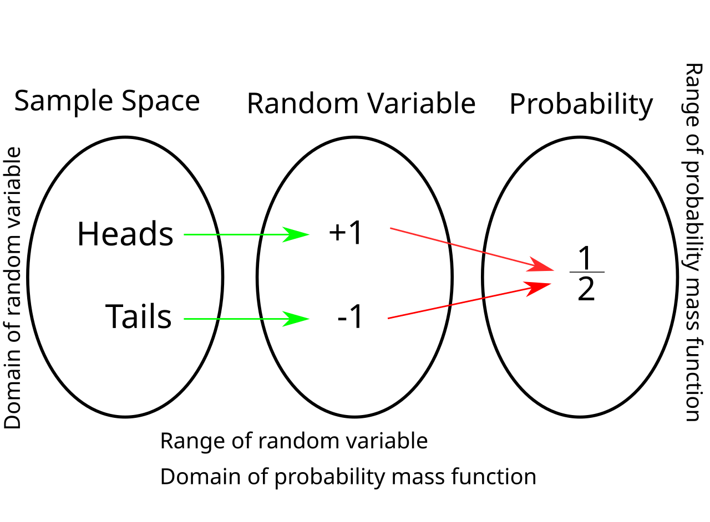
From outcome to number
A random variable is a variable whose value is a number determined by the outcome of a chance process. That is the whole definition, and it is worth reading twice, because two ordinary words are doing precise work. Number: the result must be numeric, so if the raw outcome is "heads" or "defective," we have to convert it — count the heads, count the defects. Random: we do not know in advance which value will occur, though we may know how likely each one is.
Statisticians use a small notational habit that pays off immediately. A capital letter, usually X, names the random variable itself — the not-yet-known quantity. A lowercase letter, x, names a particular value it might take. So "X = the number of heads in three coin flips" defines the variable, and "x = 2" is one of its possible values. The expression P(X = x) then reads, in plain English, "the probability that the random variable turns out to equal this specific number." Keep the capital and lowercase straight and every formula in this chapter becomes readable.
Discrete: you can count the values
A random variable is discrete if its possible values can be listed — first value, second value, third value, and so on — with nothing squeezed in between. Counts are the classic case: the number of students absent, the number of defective units in a shipment, the number of calls arriving in an hour. You can have 3 absences or 4 absences, never 3.6.
A common misreading is that "discrete" means "only a few values." It does not. A discrete random variable may have infinitely many possible values, as long as they can be counted off in order. The number of calls arriving at a help desk in an hour could in principle be 0, 1, 2, 3, and onward forever — that list never ends, but it is still a list, so the variable is discrete. What matters is countability, not size.
Continuous: you can only measure them
A random variable is continuous if it can take any value in an interval, so that between any two possible values there is always another. Measurements behave this way: height, weight, elapsed time, temperature, blood pressure. Between 70.1 kg and 70.2 kg lies 70.15 kg, and between those lies 70.125 kg, without end.
The practical test is not "does the number have decimals?" but "was it counted or measured?" A reported time of 12.4 seconds looks like a decimal because our stopwatch stops there, but the underlying quantity is continuous — the rounding is a limitation of the instrument, not a property of the variable. Conversely, a dollar amount of $4.75 is technically discrete (money comes in cents), yet money is usually treated as continuous because the steps are so fine. Both facts can be true at once: the mathematical classification is exact, and the modeling choice is a judgment call.
| Random variable | Counted or measured? | Possible values | Type |
|---|---|---|---|
| Number of heads in 3 flips | Counted | 0, 1, 2, 3 | Discrete (finite) |
| Number of emails received today | Counted | 0, 1, 2, 3, … | Discrete (infinite but countable) |
| Number of cars in a household | Counted | 0, 1, 2, 3, … | Discrete |
| Time to finish an exam | Measured | Any value in (0, 120] minutes | Continuous |
| Weight of a cereal box | Measured | Any value near 500 g | Continuous |
| Body temperature | Measured | Any value in a range | Continuous |
- A random variable assigns a number to each outcome of a chance process; X is the variable, x is a value.
- Discrete = values can be listed (usually counts); continuous = values fill an interval (usually measurements).
- Discrete does not mean "few" — 0, 1, 2, 3, … forever is still discrete.
- For continuous variables, the probability of any single exact value is 0; we ask about intervals instead.
Section 2Probability distributions
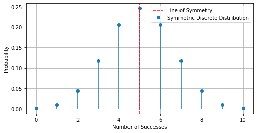
The two rules
A probability distribution lists every possible value of a discrete random variable together with the probability of each. It can be written as a table, as a formula, or drawn as a probability histogram whose bar heights are the probabilities. Whatever the format, a distribution is valid only if it satisfies exactly two requirements — and these two are not arbitrary rules to memorize; each one restates something you already believe about probability.
Requirement 1: ΣP(x) = 1. The probabilities of all the values must add up to exactly 1. This says the list is complete: something has to happen, and every "something" is on the list. (In practice, allow for rounding — a table of values rounded to three decimals may total 0.999 or 1.001, and that is fine.)
Requirement 2: 0 ≤ P(x) ≤ 1 for every value x. Each individual probability must be a legitimate probability — never negative, never above 1. A single 1.4 or −0.05 anywhere in the table kills it, no matter what the total comes to.
A table fails if it breaks either rule. Suppose someone offers P(0) = 0.30, P(1) = 0.45, P(2) = 0.15. The individual values are all legal, but they sum to 0.90, so 10% of the probability has gone missing — some outcome was left off the list. Now suppose P(0) = 0.60, P(1) = 0.55, P(2) = −0.15. These do sum to 1.00, but a negative probability is meaningless, so this table is invalid too.
Reading probabilities off a distribution
Let X be the number of heads in three flips of a fair coin. The eight equally likely outcomes are HHH, HHT, HTH, THH, HTT, THT, TTH, TTT. Counting heads in each gives the distribution below, and because each of the eight outcomes has probability 1/8, the probabilities are just counts out of 8.
| x (heads) | Outcomes | P(x) as a fraction | P(x) as a decimal |
|---|---|---|---|
| 0 | TTT | 1/8 | 0.125 |
| 1 | HTT, THT, TTH | 3/8 | 0.375 |
| 2 | HHT, HTH, THH | 3/8 | 0.375 |
| 3 | HHH | 1/8 | 0.125 |
| Total | 8 outcomes | 8/8 = 1 | 1.000 |
Check the two rules: every probability sits between 0 and 1, and the total is exactly 1. Valid. Now the payoff — once a distribution is in hand, compound events are just addition, because the values are mutually exclusive.
"At most 1 head" means X = 0 or X = 1, so P(X ≤ 1) = 0.125 + 0.375 = 0.500.
"At least 2 heads" means X = 2 or X = 3, so P(X ≥ 2) = 0.375 + 0.125 = 0.500.
"At least 1 head" would mean adding 0.375 + 0.375 + 0.125 = 0.875 — but the complement is faster: P(X ≥ 1) = 1 − P(X = 0) = 1 − 0.125 = 0.875. Same answer, one subtraction.
That complement trick is worth building into your reflexes. Whenever a question says "at least one," compute 1 − P(none). With three values it saves a little effort; with a binomial of 40 trials it saves you from adding forty terms.
Filling in a missing probability
Because the probabilities must total 1, one missing entry is always recoverable. Suppose X is the number of roommates a randomly selected student has, and a survey reports P(0) = 0.15, P(1) = 0.30, P(2) = k, P(3) = 0.25, with no other values possible. Then:
0.15 + 0.30 + k + 0.25 = 1
0.70 + k = 1
k = 1 − 0.70 = 0.30
Always finish by confirming the recovered value is itself a legal probability. Here 0.30 lies between 0 and 1, so the completed table is valid. If the algebra had produced −0.10, that would not mean "probability can be negative" — it would mean the reported numbers were wrong.
- A probability distribution pairs every possible value of a discrete random variable with its probability.
- Rule 1: ΣP(x) = 1 (allowing for rounding). Rule 2: 0 ≤ P(x) ≤ 1 for every x. Both must hold.
- Compound events are found by adding the probabilities of the values they include.
- For "at least one," use the complement: P(X ≥ 1) = 1 − P(X = 0).
Section 3Expected value
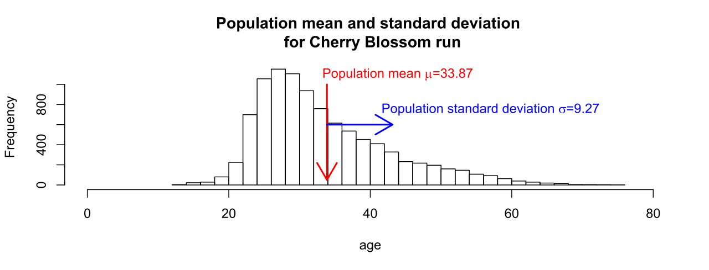
The mean of a random variable is a weighted average
The mean of a discrete random variable, written μ and also called the expected value E(X), answers the question: if this chance process were repeated over and over, what would the average result settle down to? The formula is short:
μ = E(X) = Σ [ x · P(x) ]
Read it as an instruction: multiply each value by its probability, then add up those products. It is an average weighted by likelihood — values that happen often pull the mean toward themselves; values that happen rarely barely budge it. Notice we do not divide by anything at the end. The dividing is already built in, because the weights P(x) sum to 1.
Let X be the number of pets in a randomly selected household, with the distribution P(0) = 0.40, P(1) = 0.30, P(2) = 0.20, P(3) = 0.10. (Check: 0.40 + 0.30 + 0.20 + 0.10 = 1.00, and every entry is between 0 and 1 — valid.) Then:
μ = (0)(0.40) + (1)(0.30) + (2)(0.20) + (3)(0.10)
μ = 0 + 0.30 + 0.40 + 0.30
μ = 1.0 pet
Now the interpretation, which is where students most often go wrong. The expected value is not a prediction about the next household, and it need not even be a possible value. If the distribution had come out to μ = 1.3 pets, no household would ever own 1.3 pets; the number still describes what the average approaches across many, many households. Expected value is a statement about the long run, not about any single trial — that is the law of large numbers, and it is the whole reason insurers and casinos can plan a year in advance while having no idea what happens tonight.
Variance and standard deviation
The mean tells you where the distribution sits; it says nothing about how tightly the values cluster around it. That job belongs to the variance σ2 and the standard deviation σ. The definitional formula measures the average squared distance from the mean, again weighted by probability:
σ2 = Σ [ (x − μ)2 · P(x) ] and σ = √(σ2)
There is an algebraically identical shortcut that is far easier to compute, because it never requires subtracting the mean inside the sum:
σ2 = Σ [ x2 · P(x) ] − μ2
Both give the same answer; use whichever you find clearer. Here is the pet example carried all the way through in one table — build the columns left to right and the arithmetic takes care of itself.
| x | P(x) | x · P(x) | x2 | x2 · P(x) | (x − μ)2 · P(x) |
|---|---|---|---|---|---|
| 0 | 0.40 | 0.00 | 0 | 0.00 | (0−1)2(0.40) = 0.40 |
| 1 | 0.30 | 0.30 | 1 | 0.30 | (1−1)2(0.30) = 0.00 |
| 2 | 0.20 | 0.40 | 4 | 0.80 | (2−1)2(0.20) = 0.20 |
| 3 | 0.10 | 0.30 | 9 | 0.90 | (3−1)2(0.10) = 0.40 |
| Totals | 1.00 | μ = 1.00 | — | 2.00 | σ2 = 1.00 |
By the shortcut: σ2 = 2.00 − (1.00)2 = 2.00 − 1.00 = 1.00. By the definition, the last column also totals 1.00. The two agree, as they must. Then σ = √1.00 = 1.0 pet.
Units matter here. The variance came out in "squared pets," which means nothing to anyone, and that is precisely why we take the square root: σ is back in the original units and can be read as "a typical distance from the mean." So households average 1.0 pet, and a typical household differs from that average by about 1.0 pet.
A rough but useful convention, the range rule of thumb, treats values more than two standard deviations from the mean as unusual. Here that boundary is μ ± 2σ = 1.0 ± 2.0, an interval from −1.0 to 3.0 pets. No possible value falls outside it — 3 sits exactly on the upper boundary — so nothing in this distribution counts as unusual — which fits: a household with 3 pets is uncommon, but not startling.
Expected value as a decision tool
Expected value earns its name in situations involving money, where it tells you what a repeated bet, policy, or purchase is worth per play. Suppose a club sells 500 raffle tickets at $3 each, with one $1,000 prize. What is the expected value of buying one ticket?
Define X as your net gain, which means the $3 you paid is subtracted in both branches. If you win, you gain 1000 − 3 = $997, and that happens with probability 1/500. If you lose, you gain −$3, with probability 499/500.
E(X) = (997)(1/500) + (−3)(499/500)
E(X) = 997/500 − 1497/500
E(X) = −500/500 = −$1.00
The interpretation is exact and slightly deflating: you cannot lose exactly $1 on this raffle — you will either be up $997 or down $3 — but if you bought a ticket in this same raffle over and over, your average result would settle near a loss of $1.00 per ticket. The club's side of the same arithmetic is the mirror image: it collects $3 per ticket and pays out $1,000 spread over 500 tickets, or $2 per ticket, so it clears an average net of $1.00 per ticket — exactly what the buyer loses. (Note that $1.00 is the club's net per ticket, not its revenue; revenue is the full $3.) That balance is how the fundraiser was planned in the first place.
- μ = E(X) = Σ[x · P(x)] — a probability-weighted average; no final division is needed.
- σ2 = Σ[(x − μ)2P(x)] = Σ[x2P(x)] − μ2; then σ = √(σ2) to return to the original units.
- μ describes the long run, not the next trial, and need not be a value the variable can actually take.
- By the range rule of thumb, values outside μ ± 2σ are considered unusual.
Section 4The binomial distribution

The four requirements
The binomial distribution is the most heavily used discrete distribution in statistics, because an enormous number of real questions have the same skeleton: we repeat something a fixed number of times, and we count how often it works. A situation qualifies as a binomial experiment only if all four of the following hold. Miss one and the formula in the next subsection gives a wrong answer.
| # | Requirement | What it means | What breaks it |
|---|---|---|---|
| 1 | Fixed number of trials | n is decided in advance and does not depend on results | "Keep testing until 3 fail" — n is not fixed |
| 2 | Two outcomes per trial | Each trial is a success or a failure — nothing else | A five-level rating scale (unless collapsed to two) |
| 3 | Independent trials | One trial's result does not change any other's probability | Drawing cards without replacement |
| 4 | Constant probability p | The success probability is identical on every trial | A test-taker who learns as the quiz goes on |
Two conventions clear up most confusion. First, "success" is just a label for the outcome you chose to count — it can be a defect, a failure, or a death. If you are counting defective parts, a defect is a "success," and p is the probability of a defect. Second, p is the probability of success on one trial, q = 1 − p is the probability of failure, and x is the number of successes in the n trials, so x can be any whole number from 0 to n.
The binomial formula
P(X = x) = nCx · px · qn−x where nCx = n! / [ x! (n − x)! ]
The formula is three ideas multiplied together, and it stops looking intimidating once you see them separately. The piece px is the probability of getting x successes; qn−x is the probability of the remaining n − x failures; multiplying them is legal precisely because the trials are independent (requirement 3). But that product is the probability of one specific arrangement, such as success-success-failure-failure. The binomial coefficient nCx counts how many arrangements produce x successes, and since each arrangement has the same probability, we multiply by that count.
Worked example. A quiz has 6 multiple-choice questions with 4 choices each. A student guesses on every question. What is the probability of exactly 2 correct?
Check the four requirements: n = 6 fixed ✓; each question is right or wrong ✓; guesses do not affect one another ✓; p = 1/4 = 0.25 on every question ✓. So n = 6, p = 0.25, q = 0.75, x = 2.
Step 1 — the coefficient: 6C2 = 6! / (2! · 4!) = (6 × 5) / (2 × 1) = 30/2 = 15.
Step 2 — the successes: (0.25)2 = 0.0625.
Step 3 — the failures: (0.75)4 = 0.31640625.
Step 4 — multiply: 15 × 0.0625 × 0.31640625 = 0.9375 × 0.31640625 = 0.2966.
So there is about a 29.7% chance of exactly 2 correct. Running the same formula for every value of x produces the complete distribution:
| x correct | 6Cx | (0.25)x(0.75)6−x | P(x) |
|---|---|---|---|
| 0 | 1 | 0.177979 | 0.1780 |
| 1 | 6 | 0.059326 | 0.3560 |
| 2 | 15 | 0.019775 | 0.2966 |
| 3 | 20 | 0.006592 | 0.1318 |
| 4 | 15 | 0.002197 | 0.0330 |
| 5 | 6 | 0.000732 | 0.0044 |
| 6 | 1 | 0.000244 | 0.0002 |
| Total | — | — | 1.0000 |
The column totals 1.0000, confirming this is a valid probability distribution — a good habit whenever you build a binomial table by hand. Compound questions now work exactly as in Section 2. "What is the probability of at least 1 correct?" Use the complement: P(X ≥ 1) = 1 − P(0) = 1 − 0.1780 = 0.8220. "At least 4 correct?" Add the tail: 0.0330 + 0.0044 + 0.0002 = 0.0376, under 4%.
Mean and standard deviation of a binomial
You could find μ and σ by running the Section 3 machinery on all seven rows — but for a binomial there are shortcuts, and they are exact, not approximations:
μ = np σ2 = npq σ = √(npq)
For the guessing student: μ = np = (6)(0.25) = 1.5 correct, which is sensible — guess on 6 questions with a 1-in-4 chance and you average one and a half. And σ = √[(6)(0.25)(0.75)] = √1.125 = 1.06 correct.
Apply the range rule of thumb: μ ± 2σ = 1.5 ± 2.12, an interval from −0.62 to 3.62. Scores of 0, 1, 2, or 3 are ordinary for a guesser; a score of 4 or more is unusual. That verdict matches the exact tail probability we just computed, P(X ≥ 4) = 0.0376. The rule of thumb and the exact calculation agree, which is the point of having both: the rule is quick, the calculation is precise.
- A binomial experiment needs all four: fixed n, two outcomes, independent trials, constant p.
- P(X = x) = nCx px qn−x — arrangements × successes × failures.
- "Success" is only a label for whatever you are counting; p must match that label.
- μ = np and σ = √(npq); sampling under 5% of a population may be treated as binomial.
Section 5Other discrete distributions
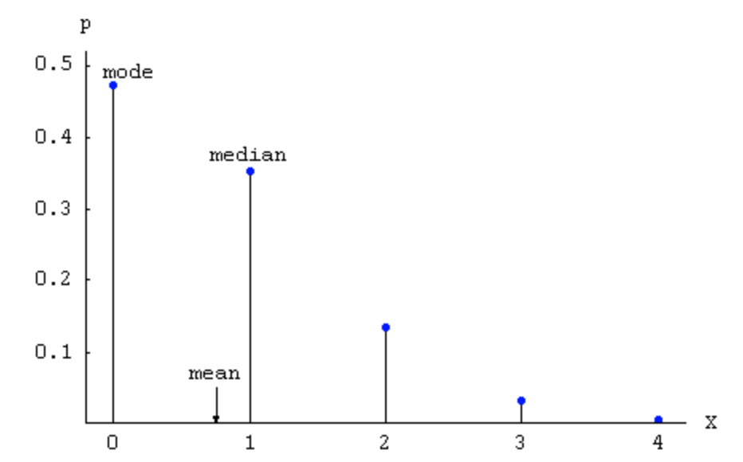
The Poisson distribution
The binomial needs a fixed number of trials. But many real counts have no trials to fix: calls arriving at a help desk in an hour, typos on a page, potholes per kilometer of road. There is no n, because there is no upper limit on how many could occur. For these, the Poisson distribution models the number of events in a fixed interval of time, area, volume, or distance, given a known average rate.
P(X = x) = ( λx · e−λ ) / x! for x = 0, 1, 2, 3, …
Here λ (lambda) is the mean number of events per interval, and e ≈ 2.71828 is the natural base. The distribution needs three conditions: the events occur independently, the average rate λ is constant over the interval, and the interval is fixed. It has one striking property — a single parameter controls everything:
μ = λ σ2 = λ σ = √λ
The mean and the variance are the same number. That is a genuinely useful diagnostic: if you have count data whose sample variance is far larger than its mean, the Poisson model is probably wrong for it.
Worked example. A help desk receives an average of 3 calls per hour. What is the probability of exactly 5 calls in a given hour?
Here λ = 3 and x = 5.
Step 1: λx = 35 = 243.
Step 2: e−3 = 0.049787.
Step 3: x! = 5! = 5 × 4 × 3 × 2 × 1 = 120.
Step 4: P(X = 5) = (243 × 0.049787) / 120 = 12.0983 / 120 = 0.1008.
So about a 10.1% chance of exactly 5 calls. The chance of a completely quiet hour is P(X = 0) = (30 · e−3)/0! = 0.049787, roughly 5% — recall that 30 = 1 and 0! = 1. And the chance of at least one call is the complement: 1 − 0.0498 = 0.9502. The standard deviation is σ = √3 ≈ 1.73 calls.
One more use worth knowing: when a binomial has a large n and a small p — a common rule of thumb is n ≥ 100 and np ≤ 10 — the Poisson with λ = np closely approximates it. This is why Poisson models rare events so well: accidents at an intersection, rare defects on a production line, unusual claims filed with an insurer.
The geometric distribution
The geometric distribution flips the binomial question around. A binomial fixes the number of trials and lets the number of successes vary. A geometric fixes the number of successes at exactly one — the first one — and lets the number of trials vary. It answers: how many attempts until the first success?
P(X = x) = qx−1 · p for x = 1, 2, 3, …
The logic is transparent: to have the first success on trial x, you need x − 1 failures first (probability qx−1) followed by one success (probability p). There is no coefficient because there is only one arrangement that works. The requirements are the binomial's minus the fixed n: independent trials, two outcomes, and a constant p. Its mean and standard deviation are:
μ = 1/p σ2 = q/p2 σ = √q / p
Worked example. A representative converts 20% of the calls she makes, independently. What is the probability her first conversion comes on the 4th call?
Here p = 0.20, q = 0.80, x = 4.
P(X = 4) = (0.80)3 × 0.20 = 0.512 × 0.20 = 0.1024, about 10.2%.
How many calls does it take on average to get that first conversion? μ = 1/p = 1/0.20 = 5 calls — the reciprocal, exactly as intuition suggests. Read that carefully: μ counts the successful call itself, so the average number of failed calls preceding the first conversion is 4, not 5. The spread is σ = √0.80 / 0.20 = 0.894/0.20 = 4.47 calls, which is large relative to the mean; waiting times of this kind are notoriously variable. And the probability she needs more than 3 calls is simply the probability the first 3 all fail: P(X > 3) = (0.80)3 = 0.512. So P(X ≤ 3) = 1 − 0.512 = 0.488.
One caution when reading other sources: some define the geometric variable as the number of failures before the first success, so it starts at 0 instead of 1 and has mean q/p. The mathematics is the same; only the starting point shifts. Always check which version a formula sheet or calculator is using before plugging in.
Choosing among the three
Nearly every discrete problem you meet at this level fits one of these three, and the fastest way to identify which is to ask what is fixed and what is random.
| Distribution | What is fixed | What is random | Values of X | Mean | Variance |
|---|---|---|---|---|---|
| Binomial | Number of trials n | Number of successes | 0, 1, …, n | np | npq |
| Poisson | The interval (time, area, …) | Number of events | 0, 1, 2, … | λ | λ |
| Geometric | Number of successes (one) | Number of trials needed | 1, 2, 3, … | 1/p | q/p2 |
- Poisson: P(x) = λxe−λ/x! counts events in a fixed interval; uniquely, μ = σ2 = λ.
- Poisson approximates a binomial when n is large and p is small, using λ = np.
- Geometric: P(x) = qx−1p counts trials until the first success, with μ = 1/p.
- Identify the distribution by asking what is fixed (trials, interval, or successes) and what is random.
The chapter in one breath
- A random variable attaches a number to each outcome of a chance process; it is discrete if its values can be listed (counts) and continuous if they fill an interval (measurements).
- A probability distribution is valid only if ΣP(x) = 1 and 0 ≤ P(x) ≤ 1 for every value; both rules must hold.
- Compound events are sums of value probabilities, and "at least one" is fastest as 1 − P(0).
- The expected value μ = Σ[xP(x)] is a probability-weighted average describing the long run — not the next trial, and not necessarily a possible value.
- Spread comes from σ2 = Σ[x2P(x)] − μ2, with σ = √(σ2) restoring the original units; values beyond μ ± 2σ are conventionally called unusual.
- A binomial needs fixed n, two outcomes, independence, and constant p; then P(x) = nCxpxqn−x, μ = np, σ = √(npq).
- The Poisson counts events in a fixed interval with μ = σ2 = λ; the geometric counts trials until the first success with μ = 1/p.
- Choose a model by asking what the problem holds fixed — the trials, the interval, or the single success you are waiting for.
ReferenceWords worth knowing
A quick reference for the terms in this chapter — skim it now, or circle back whenever a word trips you up.
- Bernoulli trial
- A single trial with exactly two possible outcomes, labeled success and failure, with success probability p. A binomial experiment is n independent Bernoulli trials.
- Binomial coefficient
- The count nCx = n!/[x!(n−x)!] of the different arrangements that give x successes in n trials.
- Binomial distribution
- The distribution of the number of successes in a fixed number of independent trials with constant success probability; P(x) = nCxpxqn−x.
- Continuous random variable
- A random variable that can take any value in an interval; probabilities are assigned to intervals, and the probability of any single exact value is 0.
- Cumulative probability
- The probability that a random variable is at most a given value, P(X ≤ x), found by adding the probabilities of all values up to and including x.
- Discrete random variable
- A random variable whose possible values can be listed, such as 0, 1, 2, 3; usually the result of counting. The list may be infinite.
- Expected value
- Another name for the mean of a random variable, E(X) = μ = Σ[xP(x)]; the long-run average over many repetitions.
- Factorial
- The product n! = n(n−1)(n−2)…(1), with 0! defined as 1.
- Geometric distribution
- The distribution of the number of independent trials needed to obtain the first success; P(x) = qx−1p, with mean 1/p.
- Independent trials
- Trials in which the outcome of one has no effect on the probabilities of any other.
- Law of large numbers
- The principle that as a chance process is repeated more and more times, the average of the results converges to the expected value.
- Mean of a random variable (μ)
- The probability-weighted average of the values, Σ[xP(x)]; the balance point of the distribution.
- Memoryless property
- The feature of the geometric distribution that past failures do not change the probability of success on the next trial.
- Parameter
- A number that describes a population or a probability model, such as n and p for a binomial or λ for a Poisson.
- Poisson distribution
- The distribution of the number of events occurring in a fixed interval at a constant average rate λ; P(x) = λxe−λ/x!, with mean and variance both equal to λ.
- Probability distribution
- A listing, formula, or graph giving every possible value of a discrete random variable together with its probability.
- Probability histogram
- A bar graph of a discrete distribution in which the values sit on the horizontal axis and the bar heights are the probabilities.
- Random variable
- A variable whose numeric value is determined by the outcome of a chance process; written X, with x denoting a particular value.
- Range rule of thumb
- A rough convention that values farther than 2 standard deviations from the mean — outside μ ± 2σ — may be considered unusual.
- Standard deviation of a random variable (σ)
- The square root of the variance; a typical distance of the values from the mean, expressed in the original units.
- Success probability (p)
- The probability of the outcome being counted on a single trial; its complement q = 1 − p is the failure probability.
- Variance of a random variable (σ2)
- The probability-weighted average squared distance from the mean, Σ[(x−μ)2P(x)], equal to Σ[x2P(x)] − μ2.
Check yourself
The Normal Distribution
Measure enough of almost anything that varies for lots of small, independent reasons — heights, birth weights, test scores, the error in a laboratory instrument — and the histogram tends to pile up in the middle and thin out symmetrically on both sides. That shape has a name: the normal distribution, or the bell curve. It matters far beyond its own good looks, because once you know a variable is roughly normal, two numbers — the mean and the standard deviation — let you answer questions about any value in the distribution. This chapter teaches you to read the curve, to reason with the 68–95–99.7 rule, to convert any score into a z-score, to turn that z-score into a probability, and to run the whole machine backward when you are handed a percentile instead of a score. There is arithmetic here, but it is all addition, subtraction, multiplication, and division — nothing harder.
By the end of this chapter you can
- List the defining properties of a normal curve and explain what μ and σ each control.
- Explain why probability for a continuous variable is an area, not a height, and why total area equals 1.
- Apply the empirical rule (68–95–99.7) to estimate proportions above, below, and between values.
- Compute a z-score with z = (x − μ) ÷ σ and interpret its sign and size correctly.
- Use z-scores to compare values measured on different scales.
- Read a standard normal table to find left-tail, right-tail, and between-two-values probabilities.
- Work backward from a percentile to a raw score using x = μ + zσ.
- Recognize when the normal model does not apply, and avoid the classic misreadings.
Section 1The normal curve

What the shape is telling you
A normal distribution is a smooth, symmetric, single-peaked curve — the bell curve. It is not a picture of data you collected; it is a model, an idealized mathematical shape that real data can resemble more or less closely. When we say "adult female heights are approximately normal," we mean the histogram of real heights looks a lot like that curve, close enough that we can use the curve's mathematics to make good predictions.
Every normal curve is completely pinned down by exactly two numbers, called parameters. The mean μ (mu) sits at the center and locates the peak. The standard deviation σ (sigma) controls the spread: a small σ gives a tall, narrow curve where values huddle near the middle; a large σ gives a short, wide curve where values sprawl. Change μ and the whole curve slides sideways without changing shape. Change σ and the curve stretches or squeezes without moving its center. Statisticians write this compactly as X ~ N(μ, σ2), read "X follows a normal distribution with mean μ and variance σ2."
The equation behind the picture is f(x) = [ 1 ÷ (σ √(2π) ) ] · e−(x − μ)² / (2σ²). You will never have to evaluate it by hand, and nothing in this chapter depends on it. It is worth seeing once only so you can confirm the claim above: the only symbols in it besides x are μ and σ. Two numbers, one curve.
The properties, one at a time
Six features define the shape, and every technique in the rest of this chapter leans on one of them.
| Property | What it means | Why it matters |
|---|---|---|
| Symmetric | The left half is a mirror image of the right half about μ | Lets you convert a right-tail question into a left-tail one, and vice versa |
| Unimodal | Exactly one peak, located at μ | A two-humped histogram is not normal — do not use these tools on it |
| Mean = median = mode | All three centers land on the same point | The center is unambiguous; 50% of the area lies on each side |
| Total area = 1 | The area under the whole curve is exactly 1 (100%) | Area is probability — this is what makes the curve usable |
| Asymptotic tails | The tails approach the axis forever but never touch it | No value is strictly impossible, but extremes are vanishingly rare |
| Inflection at μ ± σ | The curve switches from bending down to bending out one σ from center | You can literally see σ on the picture — it is where the curve changes its bend |
The fourth property deserves a slow read, because it is where most students first get uneasy. For a continuous variable — one that can take any value in a range, like height in inches carried out to as many decimals as you like — the probability of landing on exactly one specific value is zero. Nobody is exactly 64.000000… inches tall. So we never ask "what is the probability height equals 64?" We ask "what is the probability height falls between 63 and 65?", and the answer is the area under the curve over that stretch of the axis. Height of the curve is density, not probability. Area is probability.
A practical consequence: for continuous distributions, P(X < 64) and P(X ≤ 64) are the same number, because the single point 64 contributes zero area. That is not true for the discrete distributions of Chapter 6, and it trips people up on exams.
How close to normal does real data have to be?
Close enough, and no closer. Real heights are bounded below by zero and above by about nine feet; the normal curve technically extends to infinity in both directions. Real test scores are integers; the curve is smooth. None of that matters in practice, because the curve assigns so little area to the impossible regions that the error is negligible. What does matter is gross violations: strong skew, two peaks, or a hard boundary sitting close to the mean. Income is the classic bad fit — it is right-skewed, with a long tail of high earners, so its mean sits well above its median and the empirical rule you are about to learn will give you badly wrong answers.
- A normal distribution is a symmetric, unimodal, bell-shaped model defined completely by μ (center) and σ (spread).
- Mean, median, and mode coincide at μ; changing μ slides the curve, changing σ widens or narrows it.
- Area under the curve is probability, and the total area is 1; the height of the curve is density, not probability.
- The model is an approximation — do not use it on strongly skewed or two-peaked data.
Section 2The empirical rule in action

The rule, and the finer breakdown
Because every normal curve has the same shape, the proportion of area inside a given number of standard deviations is always the same, no matter what the units are. That constancy is the empirical rule, also called the 68–95–99.7 rule:
- About 68% of values fall within μ ± 1σ (exactly 68.27%).
- About 95% of values fall within μ ± 2σ (exactly 95.45%).
- About 99.7% of values fall within μ ± 3σ (exactly 99.73%).
Split those bands in half using symmetry and you get a map of the curve precise enough for most quick reasoning. Each half-band below is one side of the center.
| Region | Share of the area | Running total from the left |
|---|---|---|
| Below μ − 3σ | 0.15% | 0.15% |
| μ − 3σ to μ − 2σ | 2.35% | 2.5% |
| μ − 2σ to μ − 1σ | 13.5% | 16% |
| μ − 1σ to μ | 34% | 50% |
| μ to μ + 1σ | 34% | 84% |
| μ + 1σ to μ + 2σ | 13.5% | 97.5% |
| μ + 2σ to μ + 3σ | 2.35% | 99.85% |
| Above μ + 3σ | 0.15% | 100% |
Memorize the sequence 0.15, 2.35, 13.5, 34 — then 34, 13.5, 2.35, 0.15 going back out. Those eight numbers sum to 100% and answer a surprising share of exam questions with no table at all.
A worked example
Suppose adult female heights in a large population are approximately normal with μ = 64.0 inches and σ = 2.5 inches. First, build the ruler by marking off standard deviations from the center:
- μ ± 1σ: 64.0 − 2.5 = 61.5 and 64.0 + 2.5 = 66.5 → about 68% of women are between 61.5 and 66.5 inches.
- μ ± 2σ: 64.0 − 5.0 = 59.0 and 64.0 + 5.0 = 69.0 → about 95% are between 59.0 and 69.0 inches.
- μ ± 3σ: 64.0 − 7.5 = 56.5 and 64.0 + 7.5 = 71.5 → about 99.7% are between 56.5 and 71.5 inches.
Now answer four questions using only that ruler and the table above.
(a) What percent are taller than 69.0 inches? 69.0 is exactly μ + 2σ. The middle 95% lies inside ±2σ, so 100% − 95% = 5% lies outside. Symmetry splits that 5% evenly between the two tails: 5% ÷ 2 = 2.5%.
(b) What percent are shorter than 61.5 inches? 61.5 is μ − 1σ. Outside ±1σ lies 100% − 68% = 32%, split evenly: 32% ÷ 2 = 16%.
(c) What percent are between 66.5 and 69.0 inches? That is the band from μ + 1σ to μ + 2σ. Take the difference of the two symmetric bands and halve it: (95% − 68%) ÷ 2 = 27% ÷ 2 = 13.5%.
(d) What percent are between 59.0 and 66.5 inches? Split at the mean. From 59.0 (μ − 2σ) up to 64.0 is half of the 95% band = 47.5%. From 64.0 up to 66.5 (μ + 1σ) is half of the 68% band = 34%. Add them: 47.5% + 34% = 81.5%.
Notice the pattern in all four: draw the curve, mark μ and the three standard-deviation ticks on each side, shade what the question asks for, and add or subtract the block percentages. The sketch is not optional decoration — it is the method.
Where the rule stops working
The empirical rule is a fact about normal distributions only. Apply it to right-skewed data such as household income or hospital length of stay and it will overstate the left tail and understate the right, sometimes badly. For a distribution of unknown shape there is a weaker but universal backstop, Chebyshev's inequality: at least 1 − 1/k2 of any distribution lies within k standard deviations of the mean, for any k > 1. That guarantees at least 75% within 2σ and at least 88.9% within 3σ — true always, but much looser than 95% and 99.7%. The precision of the empirical rule is the reward for the normal assumption being justified.
- The empirical rule: about 68% / 95% / 99.7% of a normal distribution lies within 1, 2, and 3 standard deviations of μ.
- Symmetry lets you halve any band: outside ±2σ is 5%, so each tail is 2.5%.
- The block percentages 0.15 / 2.35 / 13.5 / 34 (each side) answer most questions with no table.
- The rule applies to approximately normal data only; Chebyshev's inequality is the weaker rule that always holds.
Section 3The standard normal

One curve to rule them all
There are infinitely many normal curves — one for every pair (μ, σ). Nobody wants infinitely many tables. The fix is to rescale every normal distribution onto a single common curve, the standard normal distribution: the normal distribution with μ = 0 and σ = 1, written Z ~ N(0, 1).
The rescaling is done with the z-score:
z = ( x − μ ) ÷ σ
Read it as two steps in plain English. Subtract the mean: this recenters the value, telling you how far above or below average it sits, in the original units. Divide by the standard deviation: this converts that distance from original units into "standard deviations," which have no units at all. A z-score of 1.5 means "one and a half standard deviations above the mean," whether the original data were inches, dollars, milliseconds, or exam points.
The sign carries meaning. Positive z means above the mean, negative z means below, and z = 0 means exactly at the mean. The magnitude carries the rest: |z| under 1 is thoroughly ordinary, around 2 is somewhat unusual, and 3 or more is genuinely rare — only about 0.3% of a normal distribution sits beyond ±3.
Worked example: one score, two ways
An exam has μ = 72 points and σ = 8 points. A student scores x = 86.
z = (86 − 72) ÷ 8 = 14 ÷ 8 = 1.75
The score is 14 points above average, and 14 points is 1.75 standard deviations. Now a second student scores x = 60:
z = (60 − 72) ÷ 8 = (−12) ÷ 8 = −1.50
That student sits one and a half standard deviations below the mean. Note that z = −1.50 and z = +1.50 are the same distance from center in opposite directions — a fact we will exploit constantly in Section 4.
Why standardizing is worth the trouble: comparing apples to oranges
The real power of a z-score is that it strips away the units and the scale, so scores from completely different measurements become comparable. Suppose a student takes two exams:
| Exam | Score x | Mean μ | SD σ | z = (x − μ) ÷ σ | Reading |
|---|---|---|---|---|---|
| Exam A | 86 | 72 | 8 | (86 − 72) ÷ 8 = +1.75 | 1.75 SD above average |
| Exam B | 91 | 85 | 6 | (91 − 85) ÷ 6 = +1.00 | 1.00 SD above average |
| Exam C | 68 | 75 | 10 | (68 − 75) ÷ 10 = −0.70 | 0.70 SD below average |
The raw scores say Exam B (91) was the best performance and Exam A (86) second. The z-scores say otherwise: relative to everyone else who took each test, Exam A was the strongest showing at +1.75, ahead of Exam B at +1.00. The 91 looks impressive until you notice the class averaged 85 with a tight spread, so a 91 was only one standard deviation up. This is exactly why z-scores appear on growth charts, standardized tests, and laboratory reference ranges — they answer "how unusual is this?" rather than "how big is this?"
The reverse conversion is just algebra. Multiply both sides of the z-score formula by σ and add μ:
x = μ + zσ
Check it on Exam A: x = 72 + (1.75)(8) = 72 + 14 = 86. It returns the original score, as it must. Section 5 is built entirely on this rearranged form.
- The standard normal distribution has μ = 0 and σ = 1, written Z ~ N(0, 1).
- z = (x − μ) ÷ σ converts any value into "number of standard deviations from the mean," a unitless quantity.
- Sign gives direction (above or below μ); magnitude gives unusualness, so z-scores let you compare different scales.
- x = μ + zσ converts back; standardizing never changes the shape of a distribution.
Section 4Finding probabilities

What the table actually gives you
A standard normal table (or z-table) is a lookup of areas. The standard version used almost everywhere reports cumulative left-tail area: the entry for a given z is the proportion of the distribution lying below that z, written Φ(z) or P(Z < z). So the entry for z = 0.00 is 0.5000 — half the curve lies below center — and the entries climb toward 1 as z increases.
Reading it takes two coordinates. The row gives z to one decimal place; the column gives the hundredths digit. To find Φ(1.75), go down to the row 1.7 and across to the column .05:
| z | .00 | .01 | .02 | .03 | .04 | .05 | .06 | .07 |
|---|---|---|---|---|---|---|---|---|
| 1.5 | .9332 | .9345 | .9357 | .9370 | .9382 | .9394 | .9406 | .9418 |
| 1.6 | .9452 | .9463 | .9474 | .9484 | .9495 | .9505 | .9515 | .9525 |
| 1.7 | .9554 | .9564 | .9573 | .9582 | .9591 | .9599 | .9608 | .9616 |
| 1.8 | .9641 | .9649 | .9656 | .9664 | .9671 | .9678 | .9686 | .9693 |
| 1.9 | .9713 | .9719 | .9726 | .9732 | .9738 | .9744 | .9750 | .9756 |
Φ(1.75) = 0.9599. That single number means: 95.99% of a standard normal distribution lies below z = 1.75. Everything else in this section is arithmetic performed on numbers like that one.
The three question types
Every normal probability problem is one of three shapes, and each has a one-line rule. In all of them, first convert your raw value to a z-score, then look it up.
| Question | Rule | Why |
|---|---|---|
| P(X < a) — left tail | Φ(za) | Read the table directly; it already reports left-tail area |
| P(X > a) — right tail | 1 − Φ(za) | Total area is 1, so what is not below must be above |
| P(a < X < b) — between | Φ(zb) − Φ(za) | Take everything below the top, remove everything below the bottom |
Two habits keep you out of trouble. Sketch first: draw the bell, mark the mean, mark your value, shade the region the question asks about. If your final answer is more than 0.5 but you shaded a small sliver, you have made an error. Sanity-check against the empirical rule: an area beyond z = 2 should be near 2.5%, an area below z = 0 should be exactly 0.5000.
Worked example: the same exam, three questions
Exam scores are approximately normal with μ = 72 and σ = 8.
(a) What proportion of students score below 86?
Step 1 — standardize: z = (86 − 72) ÷ 8 = 14 ÷ 8 = 1.75.
Step 2 — look up: Φ(1.75) = 0.9599.
Step 3 — answer: P(X < 86) = 0.9599, about 96.0% of students score below 86.
(b) What proportion score above 86?
Same z = 1.75. This is a right tail, so subtract from 1:
P(X > 86) = 1 − 0.9599 = 0.0401, about 4.0%. Sensible: (a) and (b) must add to 1, and 0.9599 + 0.0401 = 1.0000.
(c) What proportion score between 64 and 86?
Step 1 — standardize both ends.
Lower: z = (64 − 72) ÷ 8 = (−8) ÷ 8 = −1.00.
Upper: z = (86 − 72) ÷ 8 = 1.75.
Step 2 — look up both. Φ(1.75) = 0.9599. Φ(−1.00) = 0.1587.
Step 3 — subtract: 0.9599 − 0.1587 = 0.8012, about 80.1%.
Sanity check: the interval runs from 1σ below the mean to 1.75σ above, so it should comfortably exceed the 68% that sits inside ±1σ but stay under 95%. It does.
If your table lists only positive z values, get Φ(−1.00) from symmetry: Φ(−z) = 1 − Φ(z), so Φ(−1.00) = 1 − 0.8413 = 0.1587. Same number.
Worth committing to memory, because they recur throughout the rest of statistics:
| z | Φ(z) = area to the left | Area to the right | Note |
|---|---|---|---|
| 0.00 | 0.5000 | 0.5000 | The mean splits the curve in half |
| 1.00 | 0.8413 | 0.1587 | Gives the 68% rule: 0.8413 − 0.1587 = 0.6826 |
| 1.645 | 0.9500 | 0.0500 | Top 5% cutoff |
| 1.96 | 0.9750 | 0.0250 | The real "95%" number: 2.5% in each tail |
| 2.00 | 0.9772 | 0.0228 | Gives the 95.45% rule |
| 2.576 | 0.9950 | 0.0050 | Middle 99% |
| 3.00 | 0.9987 | 0.0013 | Gives the 99.73% rule |
- The z-table gives Φ(z) = P(Z < z), the area to the left; row = tenths, column = hundredths.
- Left tail: read directly. Right tail: 1 − Φ(z). Between: Φ(zupper) − Φ(zlower).
- Symmetry gives negative values: Φ(−z) = 1 − Φ(z); and P(X < a) equals P(X ≤ a) because the variable is continuous.
- Always sketch and shade before computing, and check the answer against the empirical rule.
Section 5Working backward

The question runs the other way
So far you have been handed a value and asked for a proportion. Many real questions arrive in the opposite order: What score puts a student in the top 10%? What birth weight is the 5th percentile? Where do we set the cutoff so that 95% of parts pass inspection? These are inverse problems, and they run the same machinery backward.
Begin with the vocabulary. The kth percentile is the value with k percent of the distribution below it. The 90th percentile is the value that 90% of the data falls under, and 10% exceeds. Percentiles are always stated as left-tail areas, which is convenient, because that is exactly what the z-table reports.
The three-step recipe:
- Convert the wording into a left-tail area. "90th percentile" is already 0.9000. "Top 10%" is not 0.10 — the cutoff for the top 10% has 90% below it, so the area is 0.9000 as well. "Bottom 5%" is 0.0500.
- Search the body of the table for that area and read off the z. This is the reverse lookup: you scan the interior probabilities for the one closest to your target, then read the z from its row and column.
- Un-standardize with x = μ + zσ. That converts the position back into the original units.
Worked example: the 90th percentile
Same exam: μ = 72, σ = 8. What score is the 90th percentile?
Step 1 — target left-tail area = 0.9000.
Step 2 — hunt in the body of the table. The nearest entries are Φ(1.28) = 0.8997 and Φ(1.29) = 0.9015. The first is off by 0.0003, the second by 0.0015, so take z = 1.28.
Step 3 — un-standardize:
x = μ + zσ = 72 + (1.28)(8) = 72 + 10.24 = 82.24
A score of about 82.2 marks the 90th percentile: roughly 90% of students score below it, 10% above. Check the answer for plausibility — 82.24 is above the mean, as any percentile above 50 must be, and it is a bit more than one standard deviation up, which fits an area of 0.90 sitting between Φ(1.00) = 0.8413 and Φ(1.50) = 0.9332.
Two more, including a negative z
(a) What score separates the top 5%? The cutoff has 95% below it, so the target area is 0.9500 and z = 1.645 (the table straddles it: Φ(1.64) = 0.9495, Φ(1.65) = 0.9505, so 1.645 is the standard interpolated value).
x = 72 + (1.645)(8) = 72 + 13.16 = 85.16. Scores at or above about 85.2 are in the top 5%.
(b) What score is the 25th percentile (the first quartile)? Target area 0.2500, which is below the mean, so the z must be negative. By symmetry, Φ(−0.67) = 1 − Φ(0.67) = 1 − 0.7486 = 0.2514, and Φ(−0.68) = 1 − 0.7517 = 0.2483. The value 0.2500 sits between them; the conventional value is z = −0.67 (more precisely −0.6745).
x = 72 + (−0.67)(8) = 72 − 5.36 = 66.64. About a quarter of students score below 66.6.
The single most common error in inverse problems is dropping the minus sign. If the percentile is below 50, the z must be negative and the answer must land below the mean. If your arithmetic hands you a value above μ for the 25th percentile, you lost a sign somewhere.
These z values recur so often that they are worth keeping close:
| Percentile | Left-tail area | z | Score when μ = 72, σ = 8 (x = 72 + 8z) |
|---|---|---|---|
| 1st | 0.0100 | −2.326 | 72 − 18.61 = 53.39 |
| 5th | 0.0500 | −1.645 | 72 − 13.16 = 58.84 |
| 10th | 0.1000 | −1.282 | 72 − 10.26 = 61.74 |
| 25th | 0.2500 | −0.674 | 72 − 5.39 = 66.61 |
| 50th | 0.5000 | 0.000 | 72.00 |
| 75th | 0.7500 | +0.674 | 72 + 5.39 = 77.39 |
| 90th | 0.9000 | +1.282 | 72 + 10.26 = 82.26 |
| 95th | 0.9500 | +1.645 | 72 + 13.16 = 85.16 |
| 99th | 0.9900 | +2.326 | 72 + 18.61 = 90.61 |
Finding a symmetric middle interval
A close cousin: which two scores enclose the middle 95%? Symmetry does the work. If 95% is in the middle, 5% is left over, split into 2.5% in each tail. So the lower bound has left-tail area 0.0250 (z = −1.96) and the upper bound has left-tail area 0.9750 (z = +1.96). Then:
Lower: x = 72 + (−1.96)(8) = 72 − 15.68 = 56.32
Upper: x = 72 + (1.96)(8) = 72 + 15.68 = 87.68
The middle 95% of scores runs from about 56.3 to 87.7. This calculation is the direct ancestor of the confidence interval, and it is where the number 1.96 first earns its keep.
- A percentile is stated as a left-tail area: the kth percentile has k% of the distribution below it.
- Inverse problems go area → z → x, using x = μ + zσ.
- "Top 10%" means a left-tail area of 0.90, not 0.10, and percentiles below 50 give a negative z — losing that sign is the classic error.
- A symmetric middle interval splits the leftover area evenly between the two tails: middle 95% → z = ±1.96.
The chapter in one breath
- The normal distribution is a symmetric, unimodal, bell-shaped model fixed entirely by two parameters: μ (center) and σ (spread).
- For a continuous variable, area under the curve is probability; the total area is 1, and the probability of any single exact value is 0.
- The empirical rule puts about 68%, 95%, and 99.7% of the data within 1, 2, and 3 standard deviations of the mean — and symmetry lets you halve any band.
- The z-score, z = (x − μ) ÷ σ, rewrites any value as a unitless number of standard deviations from the mean, making different scales comparable.
- The standard normal Z ~ N(0, 1) is the one curve every normal distribution is converted to, so one table serves them all.
- The z-table reports left-tail area Φ(z); right tails are 1 − Φ(z) and between-values are Φ(zupper) − Φ(zlower).
- Running the machine backward — area → z → x = μ + zσ — converts a percentile into a raw score.
- All of it depends on the data being approximately normal; standardizing rescales a distribution but never repairs its shape.
ReferenceWords worth knowing
A quick reference for the terms in this chapter — skim it now, or circle back whenever a word trips you up.
- Area under the curve
- The region between a density curve and the horizontal axis over some interval; for a probability model, this area is the probability of landing in that interval.
- Bell curve
- Informal name for the normal curve, from its symmetric, single-humped shape.
- Chebyshev's inequality
- The guarantee that at least 1 − 1/k2 of any distribution lies within k standard deviations of the mean (k > 1); weaker than the empirical rule but always true.
- Continuous random variable
- A variable that can take any value in an interval; the probability of any single exact value is zero, so probabilities are computed over ranges.
- Cumulative probability
- The total probability at or below a given value — the left-tail area, written Φ(z) for the standard normal.
- Density curve
- A smooth curve whose total enclosed area equals 1, used to model the distribution of a continuous variable.
- Empirical rule
- The 68–95–99.7 rule: in a normal distribution, roughly 68%, 95%, and 99.7% of values lie within 1, 2, and 3 standard deviations of the mean.
- Inflection point
- The point where a curve changes its direction of bending; on a normal curve these sit exactly at μ − σ and μ + σ.
- Lower-tail area
- The proportion of the distribution below a stated value; what a standard normal table reports.
- Mean (μ)
- The center of a normal distribution; for this model it equals the median and the mode.
- Normal distribution
- A symmetric, unimodal, bell-shaped continuous probability model determined completely by μ and σ; written X ~ N(μ, σ2).
- Parameter
- A numerical characteristic of a population or model, such as μ or σ, as opposed to a statistic computed from a sample.
- Percentile
- The value below which a stated percentage of the distribution falls; the 90th percentile has 90% of values beneath it.
- Probability density function
- The equation that produces a density curve; its height is density, not probability.
- Raw score
- A value expressed in its original measurement units, before standardizing.
- Standard deviation (σ)
- The spread of a normal distribution; the distance from the mean to either inflection point.
- Standard normal distribution
- The normal distribution with μ = 0 and σ = 1, written Z ~ N(0, 1); the reference curve every other normal distribution is converted to.
- Standardizing
- Converting values to z-scores by subtracting the mean and dividing by the standard deviation; a linear rescaling that changes center and spread but not shape.
- Symmetric distribution
- One whose left and right halves are mirror images about the center.
- Unimodal
- Having exactly one peak.
- z-score
- The unitless quantity z = (x − μ) ÷ σ, giving how many standard deviations a value sits above (positive) or below (negative) the mean.
- z-table
- A table of standard normal cumulative probabilities, used forward to turn a z into an area and backward to turn an area into a z.
Check yourself
Sampling Distributions & the Central Limit Theorem
Every time you take a sample, you get a slightly different answer — and for a long time that fact looked like a fatal flaw in the whole enterprise of statistics. It is not. The variability of a statistic from sample to sample is itself lawful, predictable, and describable with a curve, and once you can describe it you can say exactly how far off your one real sample is likely to be. This chapter builds that idea from the ground up: what a sampling distribution is, where it is centered, how wide it is, and why — through one of the most surprising results in all of mathematics — it turns out to be bell-shaped almost no matter what the original population looks like. Nothing here requires you to love algebra. It requires you to keep three different distributions straight in your head, and the rest follows.
By the end of this chapter you can
- Distinguish a population distribution, a distribution of sample data, and a sampling distribution of a statistic.
- Explain why a statistic is a random variable and construct a sampling distribution by exhaustive enumeration.
- State and use the two facts about the sample mean: μx̄ = μ and σx̄ = σ/√n.
- State the Central Limit Theorem precisely, including its conditions and its limits.
- Explain what the CLT does not say — it does not make the population or your data normal.
- Compute a standard error, distinguish it from a standard deviation, and apply the square-root law of sample size.
- Build the sampling distribution of a sample proportion and check the success–failure condition.
- Convert a question about a sample statistic into a z-score and read off a probability.
Section 1What a sampling distribution is

Three distributions, and why people confuse them
Almost every difficulty students have with this chapter comes from collapsing three different things into one word. Let us pull them apart before we do any arithmetic.
The population distribution is how the individual values are spread out in the whole group you care about — all adult resting heart rates, all household incomes, all widget diameters coming off a line. It has a true mean, written μ, and a true standard deviation, written σ. These are parameters: fixed numbers you almost never get to see.
The distribution of the sample data is what you actually hold in your hand: the n values you collected. Its histogram is an imperfect photograph of the population's histogram. If the population is right-skewed, your sample histogram will look right-skewed too, and it will look more like the population as n grows. Its mean is x̄ and its standard deviation is s. These are statistics: numbers computed from data.
The sampling distribution is the strange and powerful one. It is not a distribution of people, or incomes, or widgets. It is the distribution of a statistic — of x̄, or of s, or of a proportion — across every sample of size n you could possibly have drawn. One dot in a sampling distribution is one whole sample boiled down to one number.
| Distribution | What one dot represents | Center | Spread | Do you see it? |
|---|---|---|---|---|
| Population | One individual in the whole group | μ | σ | Almost never |
| Sample data | One individual you actually measured | x̄ | s | Yes — this is your dataset |
| Sampling distribution of x̄ | One entire sample, reduced to its mean | μ | σ/√n | No — it is a mathematical object |
Notice the last row. You will never observe a sampling distribution in real life, because in real life you take one sample, not a thousand. The sampling distribution is a thought experiment — but a thought experiment whose center and spread we can compute exactly, which is what makes inference possible at all.
A statistic is a random variable
Here is the conceptual hinge of the whole chapter. Because the sample was chosen at random, the value of x̄ was decided partly by chance. Draw a different random sample and you get a different x̄. A quantity whose value is determined by a random process is a random variable, and every random variable has a distribution. So x̄ has a distribution. That distribution is the sampling distribution, and the spread of it is what we call sampling variability — the ordinary, expected, non-scandalous fact that two honest samples from the same population give two different answers.
Building one by hand
Sampling distributions stop feeling mystical the moment you build one exhaustively. Take a toy population of four values: 2, 4, 6, 8. Its parameters are exact and easy:
μ = (2 + 4 + 6 + 8)/4 = 5, and σ2 = [(2−5)2 + (4−5)2 + (6−5)2 + (8−5)2]/4 = (9 + 1 + 1 + 9)/4 = 20/4 = 5, so σ = √5 ≈ 2.236.
Now list every sample of size n = 2 drawn with replacement. There are 4 × 4 = 16 of them, each equally likely, and each one has a mean. Tabulating those 16 means gives the complete sampling distribution of x̄:
| Value of x̄ | Which samples give it | How many | Probability |
|---|---|---|---|
| 2 | (2,2) | 1 | 1/16 = .0625 |
| 3 | (2,4), (4,2) | 2 | 2/16 = .125 |
| 4 | (2,6), (6,2), (4,4) | 3 | 3/16 = .1875 |
| 5 | (2,8), (8,2), (4,6), (6,4) | 4 | 4/16 = .25 |
| 6 | (4,8), (8,4), (6,6) | 3 | 3/16 = .1875 |
| 7 | (6,8), (8,6) | 2 | 2/16 = .125 |
| 8 | (8,8) | 1 | 1/16 = .0625 |
Two things jump out. First, the original population was flat — four values, each equally likely — but the sampling distribution of x̄ is already peaked in the middle. There are four ways to land on a mean of 5 and only one way to land on a mean of 2, because an extreme mean requires every draw to be extreme in the same direction. That is the seed of the Central Limit Theorem, visible at n = 2.
Second, let us compute the center and spread of this new distribution. The mean of x̄ is
(2·1 + 3·2 + 4·3 + 5·4 + 6·3 + 7·2 + 8·1)/16 = (2 + 6 + 12 + 20 + 18 + 14 + 8)/16 = 80/16 = 5 — exactly μ.
And its variance is Σ(x̄ − 5)2 · (probability):
[9(1) + 4(2) + 1(3) + 0(4) + 1(3) + 4(2) + 9(1)]/16 = (9 + 8 + 3 + 0 + 3 + 8 + 9)/16 = 40/16 = 2.5, so the standard deviation is √2.5 ≈ 1.581.
Compare that to the population: σ2 = 5 and σ ≈ 2.236. The variance was cut exactly in half, and 2.236/√2 = 1.581. We did not approximate anything; the two rules of Section 2 fell out of pure counting.
- A parameter (μ, σ, p) describes the population; a statistic (x̄, s, p̂) describes a sample.
- A sampling distribution is the distribution of a statistic over all possible samples of size n — one dot is one whole sample.
- Because the sample is random, a statistic is a random variable, and its spread is sampling variability.
- Even a flat population produces a peaked sampling distribution of x̄, because extreme means require every draw to be extreme.
Section 2The distribution of the sample mean

Where it is centered: the mean of the mean
For a simple random sample of size n from a population with mean μ:
μx̄ = μ
In words: the average of all possible sample means is the population mean. This holds for every sample size, from n = 2 to n = 2,000,000, and for every population shape, skewed or not. It is the property that makes x̄ an unbiased estimator of μ.
Be careful about what "unbiased" promises. It does not mean your particular x̄ equals μ — it almost certainly doesn't. It means the procedure has no systematic tendency to run high or low. The errors are centered on zero. Bias is a property of a method, not of a number.
How wide it is: the square-root law
For a simple random sample in which observations are independent:
σx̄ = σ/√n
Equivalently, the variance of the mean is σ2/n. This quantity is so important it gets its own name — the standard error — and its own section below. Two conditions earn it:
- Independence. Guaranteed by sampling with replacement. When sampling without replacement (the usual case), it is close enough as long as the sample is less than about 10% of the population. Otherwise multiply by the finite population correction √[(N−n)/(N−1)], which shrinks the spread — sampling a big fraction of a population tells you more, not less.
- Randomness. A convenience sample has no sampling distribution worth the name. No formula repairs a biased selection process.
The intuition is averaging: when you add up n independent values, the high draws and the low draws partially cancel. They do not cancel completely (that would give zero spread), and they do not fail to cancel at all (that would give σ). They cancel at exactly the rate √n.
And its shape
Shape has a clean rule and a famous one. The clean rule: if the population is normal, then x̄ is exactly normal for any n, even n = 2. The famous one — what happens when the population is not normal — is the Central Limit Theorem, and it is the next section.
| Population is… | Center of x̄ | SD of x̄ | Shape of x̄ |
|---|---|---|---|
| Normal | μ | σ/√n | Exactly normal, any n |
| Non-normal, small n | μ | σ/√n | Resembles the population — skew survives |
| Non-normal, large n | μ | σ/√n | Approximately normal (CLT) |
Look down the middle two columns: the center and the spread are the same in all three rows. Population shape affects only the shape of the sampling distribution, never its center and never its width. That is worth memorizing, because exam questions love to test it.
A worked example
Adult resting heart rate in a large population is approximately normal with μ = 74 beats per minute and σ = 12 bpm. You draw a simple random sample of n = 36 adults. What is the chance the sample mean exceeds 77 bpm?
Step 1 — center. μx̄ = 74 bpm.
Step 2 — spread. σx̄ = σ/√n = 12/√36 = 12/6 = 2 bpm.
Step 3 — shape. The population is normal, so x̄ is exactly normal. No sample-size rule needed.
Step 4 — standardize. z = (77 − 74)/2 = 3/2 = 1.50.
Step 5 — read the table. The area to the right of z = 1.50 is 1 − 0.9332 = 0.0668, about a 6.7% chance.
Now feel the leverage. An individual adult above 77 bpm is unremarkable: z = (77 − 74)/12 = 0.25, an area of about 0.40, so roughly 40% of adults clear it. But an average of 36 adults above 77 happens only 6.7% of the time. Same threshold, same population — a group average is a far more stable, far harder-to-move quantity than one person's value. Every clinical trial and every quality-control chart runs on this fact.
- μx̄ = μ always — x̄ is an unbiased estimator of μ.
- σx̄ = σ/√n, given independence (with replacement, or n < 10% of N).
- Population shape changes only the shape of the sampling distribution — never its center or spread.
- A normal population gives an exactly normal x̄ at any sample size.
- Averages are far less variable than individuals, which is why group results are more trustworthy than single measurements.
Section 3The Central Limit Theorem

The statement
Let X1, X2, …, Xn be independent draws from any population with mean μ and finite standard deviation σ. Then as n grows, the distribution of the sample mean approaches a normal distribution:
x̄ ≈ Normal(μ, σ/√n) — equivalently z = (x̄ − μ) / (σ/√n) ≈ Normal(0, 1)
Read that carefully, because the word "any" is doing enormous work. The population may be right-skewed like income, left-skewed like exam scores, bimodal, spiky, discrete, or shaped like a comb. It does not matter. Average enough of it and the averages go bell-shaped. This is why the normal curve turns up everywhere in applied statistics: not because nature loves bells, but because we keep taking averages, and averages are drawn toward normality by a mathematical law.
The same result applies to sums, since a sum is just n times a mean: the total of n independent draws is approximately Normal(nμ, σ√n). Insurers, casinos, and warehouse planners live in that version.
What the CLT does not say
Four misreadings are worth killing on sight.
It does not say the population becomes normal. The population is whatever it is and never changes. Only the distribution of the statistic changes shape.
It does not say your data become normal. Collect 5,000 household incomes and the histogram of those 5,000 values will be gloriously right-skewed — more clearly skewed than a sample of 50, in fact, because more data reveals the population better. The CLT is about the histogram of many means, not the histogram of many observations. This is the deepest confusion in the chapter, and the figure above is worth staring at until the distinction is automatic.
It is not the Law of Large Numbers. The LLN says x̄ converges to μ as n → ∞ — it tells you where you're going. The CLT tells you the shape and scale of the error along the way. LLN gives the destination; CLT gives the wobble.
It does not always apply. The theorem requires a finite variance. A Cauchy distribution has none, and the mean of n Cauchy draws has exactly the same distribution as a single draw — averaging buys you nothing at all. Heavy-tailed data in finance and insurance sit uncomfortably close to this territory, which is one reason those fields treat the normal approximation with suspicion.
How large is "large enough"?
There is no single answer, because the honest answer depends on how skewed the population is. The familiar n ≥ 30 is a rule of thumb, not a theorem — a border checkpoint, not a law of physics.
| Population shape | Example | n for a good normal approximation |
|---|---|---|
| Normal | Height, measurement error | Any n — exact, no approximation needed |
| Symmetric, non-normal | A fair die roll, a uniform variable | Around 5–10 is already convincing |
| Moderately skewed | Reaction times, hospital stay length | About 30 — the classic rule |
| Strongly skewed | Income, insurance claim size | Often 100–300 or more |
| Extremely heavy-tailed | Cauchy, some financial returns | Never — the theorem's condition fails |
A worked example
Support-call durations are strongly right-skewed — most calls are short, a few drag on for an hour. The population mean is μ = 4.0 minutes with σ = 6.0 minutes. (Note that σ exceeds μ, a signature of heavy right skew.) A supervisor samples n = 100 calls at random. What is the chance the sample averages more than 5.0 minutes?
Step 1 — shape check. The population is badly skewed, so x̄ is not normal for small n. But n = 100 is large, the calls are independent, and 100 is a tiny fraction of all calls. The CLT applies.
Step 2 — center. μx̄ = 4.0 minutes.
Step 3 — spread. σx̄ = 6.0/√100 = 6.0/10 = 0.60 minutes.
Step 4 — standardize. z = (5.0 − 4.0)/0.60 = 1.00/0.60 ≈ 1.67.
Step 5 — read the table. Area to the right of z = 1.67 is 1 − 0.9525 = 0.0475, about 4.8%.
The sum version is free: 100 calls averaging over 5.0 minutes is the same event as 100 calls totaling over 500 minutes, so there is also a 4.8% chance the shift's total call time exceeds 500 minutes. Staffing decisions are made on exactly this arithmetic.
- The CLT: for independent draws from any population with finite σ, x̄ becomes approximately Normal(μ, σ/√n) as n grows.
- It changes only the shape of the sampling distribution; center and spread were already fixed by Section 2.
- It says nothing about the population's shape or about your own data histogram.
- n ≥ 30 is a rule of thumb; heavier skew demands more, and infinite variance defeats the theorem entirely.
- The same result holds for sums: Normal(nμ, σ√n).
Section 4Standard error

The definition, and the distinction that matters most
The standard error of a statistic is the standard deviation of that statistic's sampling distribution. For the sample mean:
SE(x̄) = σ/√n — and when σ is unknown, as it nearly always is, we estimate it: SE(x̄) ≈ s/√n
Now the distinction. A standard deviation answers "how spread out are the individuals?" A standard error answers "how spread out would my estimate be if I repeated the study?" One is a fact about the world; the other is a statement about the precision of a measurement procedure. They are not interchangeable, and quoting one when you mean the other misleads readers badly — SE is always the smaller number, so reporting "mean ± SE" when you meant to describe your subjects makes the data look far tidier than it is.
| Standard deviation (s or σ) | Standard error (SE) | |
|---|---|---|
| Describes | Spread of individual observations | Spread of a statistic across repeated samples |
| Answers | How different are people from each other? | How precise is my estimate? |
| Effect of larger n | Settles toward σ — does not shrink | Shrinks as 1/√n |
| Use it for | Describing the sample or population | Confidence intervals and test statistics |
That third row deserves a moment. Doubling your sample does not make people more alike. The population's σ is a fixed feature of the world. What more data buys is a sharper picture of μ — a smaller SE — and nothing else.
The square-root law and its brutal arithmetic
Because n sits under a square root, precision improves slowly. Take σ = 20 and watch:
| Sample size n | √n | SE = 20/√n | Improvement over n = 25 |
|---|---|---|---|
| 25 | 5 | 4.00 | — |
| 100 | 10 | 2.00 | 2× better for 4× the data |
| 400 | 20 | 1.00 | 4× better for 16× the data |
| 1,600 | 40 | 0.50 | 8× better for 64× the data |
| 10,000 | 100 | 0.20 | 20× better for 400× the data |
To cut the standard error in half, you must quadruple the sample. To cut it to a tenth, multiply the sample by a hundred. This is why enormous studies are expensive and why the jump from a 400-person poll to a 1,600-person poll buys less than people expect. It is also why, past a point, money is better spent reducing bias — better sampling frames, higher response rates — than on chasing decimal places that √n will not surrender.
A worked example, and the surprising irrelevance of population size
A sample of n = 49 finished-part diameters has s = 14.2 microns.
SE = s/√n = 14.2/√49 = 14.2/7 = 2.03 microns.
Engineering wants the standard error down to 1.0 micron. How many parts? Set 14.2/√n = 1.0, so √n = 14.2 and n = 14.22 = 201.64 → round up to n = 202. (Check: 14.2/√202 = 14.2/14.21 ≈ 0.999. ✓) Halving the SE cost roughly four times the sample — 49 to 202 — exactly as the square-root law promised.
Now the fact that startles nearly everyone: the population size N does not appear in the formula. As long as the sample is a small fraction of the population, a random sample of 1,000 estimates a parameter just as precisely in a country of 300 million as in a town of 30,000. Precision is governed by how many people you asked, not by what fraction of them you asked. "Only 1,000 people out of 300 million — how can that mean anything?" is a natural objection and a mistaken one; the soup does not care how big the pot is, provided you stirred it.
- SE = the standard deviation of a statistic's sampling distribution; for the mean, σ/√n, estimated by s/√n.
- SD describes individuals; SE describes an estimate. Larger n shrinks SE and leaves σ untouched.
- The square-root law: quadruple n to halve the SE — precision is bought at a steeply rising price.
- SE depends on n, not on population size N, whenever the sample is a small fraction of the population.
- A confidence interval is estimate ± multiplier × SE, and its confidence level describes the procedure, not this one interval.
Section 5Sampling distribution of a proportion

A proportion is a mean in disguise
Categorical data seems like it should need a whole new theory. It doesn't — it needs a relabeling. Code each observation as 1 for "yes" and 0 for "no." Then the sample proportion
p̂ = x/n (where x = number of successes)
is literally the mean of those 0s and 1s. And for a variable that takes only the values 0 and 1 with success probability p, the population mean is μ = p and the population standard deviation is σ = √[p(1−p)]. Substitute those into Section 2's two rules and the proportion results appear with no new work at all:
μp̂ = p and SE(p̂) = √[p(1−p)/n]
So p̂ is an unbiased estimator of p, and its spread still falls off as 1/√n. Same logic, same square-root law, different-looking formula.
The success–failure condition
The one genuinely new wrinkle is shape. The count x follows a binomial distribution, which is discrete and — when p is near 0 or 1 — badly skewed, because it is pressed up against a wall. If p = 0.02, most samples yield very few successes and the distribution cannot extend left past zero. The normal approximation needs enough room on both sides:
np ≥ 10 and n(1−p) ≥ 10
In plain terms: you expect at least about 10 successes and at least about 10 failures. (Some texts use 5, some 15; the idea is identical — both tails need elbow room.) When the condition fails, do not fake it with a z-score — use exact binomial methods instead.
| True p | p(1−p) | SE at n = 1,000 | Check at n = 50 |
|---|---|---|---|
| 0.02 | 0.0196 | 0.0044 (0.44 pts) | np = 1 — fails |
| 0.10 | 0.0900 | 0.0095 (0.95 pts) | np = 5 — fails |
| 0.30 | 0.2100 | 0.0145 (1.45 pts) | 15 and 35 — passes |
| 0.50 | 0.2500 | 0.0158 (1.58 pts) — the maximum | 25 and 25 — passes |
| 0.70 | 0.2100 | 0.0145 (1.45 pts) | 35 and 15 — passes |
| 0.90 | 0.0900 | 0.0095 (0.95 pts) | n(1−p) = 5 — fails |
Two lessons live in that table. First, p(1−p) peaks at p = 0.5, so a proportion near a half is the hardest to pin down — which is precisely why close elections are hard to call and lopsided ones are easy. Second, because 0.5 is the worst case, planners who don't yet know p assume p = 0.5 and get a sample size that is guaranteed sufficient no matter what the truth turns out to be.
A worked example
Suppose 60% of a large population supports a measure, so p = 0.60. A pollster surveys n = 200 people at random. What is the chance the poll reports 55% support or less?
Step 1 — conditions. np = 200(0.60) = 120 ≥ 10 and n(1−p) = 200(0.40) = 80 ≥ 10. Both clear easily, and 200 people are far fewer than 10% of a large population, so the draws are effectively independent. Normal approximation approved.
Step 2 — center. μp̂ = 0.60.
Step 3 — spread. SE = √[(0.60)(0.40)/200] = √(0.24/200) = √0.0012 ≈ 0.0346, or about 3.46 percentage points.
Step 4 — standardize. z = (0.55 − 0.60)/0.0346 = −0.05/0.0346 ≈ −1.44.
Step 5 — read the table. The area to the left of z = −1.44 is about 0.075 — roughly a 7.5% chance.
Interpret it honestly: even with a perfectly executed random sample and no bias whatsoever, a poll of 200 will land at or below 55% about one time in thirteen when the truth is 60%. That gap is not fraud, incompetence, or a "shift in the electorate." It is sampling variability doing exactly what the formula predicts.
- A proportion is the mean of 0s and 1s, so all of Section 2 carries over unchanged.
- μp̂ = p and SE(p̂) = √[p(1−p)/n].
- The shape is approximately normal only when the success–failure condition (np ≥ 10 and n(1−p) ≥ 10) holds.
- Variability is greatest at p = 0.5, which is why close races are hardest to call and why 0.5 is the safe planning value.
- Margin of error ≈ 2 × SE and covers random sampling error only — never bias.
The chapter in one breath
- Keep three distributions apart: the population, your sample data, and the sampling distribution of a statistic, where one dot is one whole sample.
- Because samples are random, every statistic is a random variable with a distribution of its own; that spread is sampling variability, not error in the everyday sense.
- The sample mean is centered exactly on the truth: μx̄ = μ — x̄ is unbiased.
- Its spread is σ/√n, so averages are far more stable than individuals; a normal population gives an exactly normal x̄ at any n.
- The Central Limit Theorem says x̄ goes approximately normal as n grows for any population with finite variance — it changes shape only, never center or spread, and never touches the population or your own histogram.
- The standard error measures the precision of an estimate, not the spread of people; it falls as 1/√n, so halving it costs four times the data, and it depends on n rather than on population size.
- A proportion is a mean of 0s and 1s: μp̂ = p, SE = √[p(1−p)/n], approximately normal when the success–failure condition holds, and most variable at p = 0.5.
- Every confidence interval and hypothesis test in the chapters ahead is built on the standard error — which makes this chapter the hinge of the whole book.
ReferenceWords worth knowing
These terms are the working vocabulary of inference — skim them now, and come back whenever a symbol or phrase stops making sense.
- Bias (of an estimator)
- A systematic tendency for a statistic to fall above or below the parameter it estimates. Bias is a property of a procedure, not of any single result.
- Central Limit Theorem (CLT)
- For independent draws from any population with finite standard deviation, the sampling distribution of x̄ approaches Normal(μ, σ/√n) as n grows.
- Estimator
- A rule or formula for producing an estimate of a parameter from sample data; x̄ is an estimator of μ.
- Finite population correction
- The factor √[(N−n)/(N−1)] applied to the standard error when the sample is a large fraction of a finite population; it makes the SE smaller.
- Independence
- The condition that one observation carries no information about another; satisfied by sampling with replacement, or approximately when n is under about 10% of the population.
- Law of Large Numbers
- The result that x̄ converges to μ as the sample size grows without bound. It gives the destination; the CLT gives the shape of the error along the way.
- Margin of error
- Roughly 2 × SE — the half-width of a typical 95% confidence interval. It accounts for random sampling variability only, never for bias.
- Parameter
- A fixed numerical feature of a population, such as μ, σ, or p. Usually unknown.
- Population distribution
- The distribution of individual values across the entire group of interest.
- Sample proportion (p̂)
- The fraction of successes in a sample, x/n; mathematically the mean of a set of 0s and 1s.
- Sampling distribution
- The distribution of a statistic across all possible samples of a fixed size n from the same population.
- Sampling variability
- The natural sample-to-sample fluctuation of a statistic. It is expected behavior, not a mistake.
- Simple random sample (SRS)
- A sample chosen so that every possible sample of size n is equally likely; the assumption behind every formula in this chapter.
- Skewness
- Asymmetry in a distribution. Heavier skew in the population requires a larger n before the CLT approximation becomes trustworthy.
- Standard deviation
- A measure of how spread out individual values are; σ for a population, s for a sample. It does not shrink as n grows.
- Standard error (SE)
- The standard deviation of a statistic's sampling distribution — a measure of the precision of an estimate. For the mean, σ/√n, estimated by s/√n.
- Statistic
- A number computed from sample data, such as x̄, s, or p̂. Because the sample is random, a statistic is a random variable.
- Success–failure condition
- The requirement np ≥ 10 and n(1−p) ≥ 10 before treating the sampling distribution of p̂ as approximately normal.
- Unbiased estimator
- An estimator whose sampling distribution is centered on the parameter, so its average value over all possible samples equals the truth. x̄ and p̂ are unbiased.
- z-score (standardized score)
- The number of standard deviations a value sits from its mean: z = (value − center)/(spread). For a sample mean, the spread used is the standard error.
Check yourself
Confidence Intervals
A sample can tell you what it saw, but it cannot tell you the truth about the whole population — not exactly. A confidence interval is the honest way to report that gap: instead of a single number that is almost certainly a little wrong, you report a range of plausible values, along with how confident the method is. The recipe is short enough to memorize in one line: take your best estimate and stretch it by a margin of error. This chapter builds that line from scratch, works the arithmetic for means and for proportions, shows exactly what makes an interval wide or narrow, and — the part most people get wrong — teaches you to say what “95% confident” actually means.
By the end of this chapter you can
- Explain why a point estimate alone is insufficient, and describe a confidence interval as estimate ± margin of error.
- Identify the three moving parts of every interval: the point estimate, the critical value, and the standard error.
- Build a confidence interval for a population mean using z when σ is known and t when it is not.
- State the degrees of freedom for a one-sample t interval and explain why the t distribution has heavier tails than z.
- Build a confidence interval for a population proportion and check its conditions before you trust it.
- Predict how the interval changes when the confidence level, the sample size, or the variability changes.
- Solve for the sample size needed to hit a target margin of error.
- Write a correct interpretation of a 95% confidence interval — and recognize the four classic wrong ones.
Section 1The idea of a confidence interval
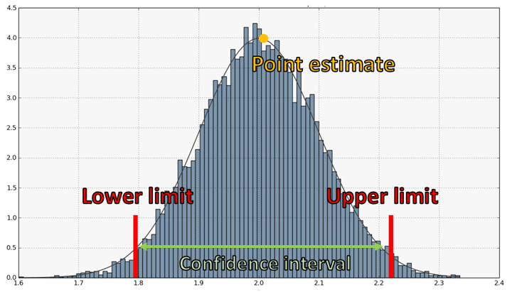
Why a single number is never enough
Suppose you want to know the average number of hours adults in a small city sleep each night. You cannot ask all 24,000 of them, so you take a random sample of 25 and compute a sample mean of 6.8 hours. That 6.8 is a point estimate: a single number, computed from a sample, offered as your best guess for the parameter — the true population mean μ, which you will never observe directly.
Here is the uncomfortable truth about point estimates: yours is almost certainly wrong. Not badly wrong, and not wrong on purpose — just wrong, because a different random sample of 25 students would have given 7.1, and another would have given 6.5. The estimate moves around from sample to sample. That movement is called sampling error, and it is not a mistake you made; it is an unavoidable consequence of looking at a part instead of the whole.
So reporting “6.8 hours” with a straight face overstates what you know. Reporting “somewhere between 6.1 and 7.5 hours, and here is how sure I am of that method” is honest. That second statement is a confidence interval: an interval estimate for a parameter, paired with a stated confidence level.
The one-line recipe
Every confidence interval at this level — for a mean, for a proportion, for a difference between two groups — is built from the same skeleton:
point estimate ± margin of error
and the margin of error is itself always the same two things multiplied together:
margin of error = (critical value) × (standard error of the estimate)
The standard error measures how much your estimate bounces around from sample to sample — it is the standard deviation of the estimate's sampling distribution. The critical value (written z* or t*) is a multiplier chosen so that the interval is wide enough to succeed as often as your confidence level demands. Want more confidence? Use a bigger multiplier. That is the entire machine. Everything that follows in this chapter is filling in those two blanks for a specific situation.
Why does this work at all? Because of the Central Limit Theorem from the previous chapters: for a large enough sample, the sampling distribution of the sample mean is approximately normal, centered on the true parameter. If the estimate lands within about 1.96 standard errors of the truth roughly 95% of the time, then reaching out 1.96 standard errors from the estimate will capture the truth roughly 95% of the time. The interval is the sampling distribution read backwards.
| Parameter (unknown) | Symbol | Point estimate | Standard error of the estimate |
|---|---|---|---|
| Population mean | μ | x̄ (sample mean) | σ/√n if σ known; s/√n if not |
| Population proportion | p | p̂ (sample proportion) | √[p̂(1 − p̂)/n] |
| Population standard deviation | σ | s (sample SD) | — (not covered here) |
| Difference of two means | μ1 − μ2 | x̄1 − x̄2 | √[s12/n1 + s22/n2] |
Reading an interval out loud
An interval has a center (your point estimate), a half-width (the margin of error), and two endpoints. If a poll reports “54% approve, margin of error 3 percentage points,” the interval is 51% to 57%, the center is 54%, and the half-width is 3. Notice that the width of the whole interval is twice the margin of error — a distinction that trips people up constantly. A margin of error of 3 points produces an interval 6 points wide.
One more habit worth building now: a confidence interval is a statement about a parameter, not about an individual. An interval of 6.1 to 7.5 hours is about the population's average sleep. It says nothing about whether any particular person sleeps in that range — most of them will not. The tool for individuals is a prediction interval, and it is much wider.
- A point estimate is a single-number guess for a parameter; it varies from sample to sample because of sampling error.
- A confidence interval is point estimate ± margin of error, reported with a stated confidence level.
- Margin of error = critical value × standard error; the standard error measures sample-to-sample bounce.
- The width of an interval is twice the margin of error, and the interval describes a parameter, never an individual.
Section 2A confidence interval for a mean
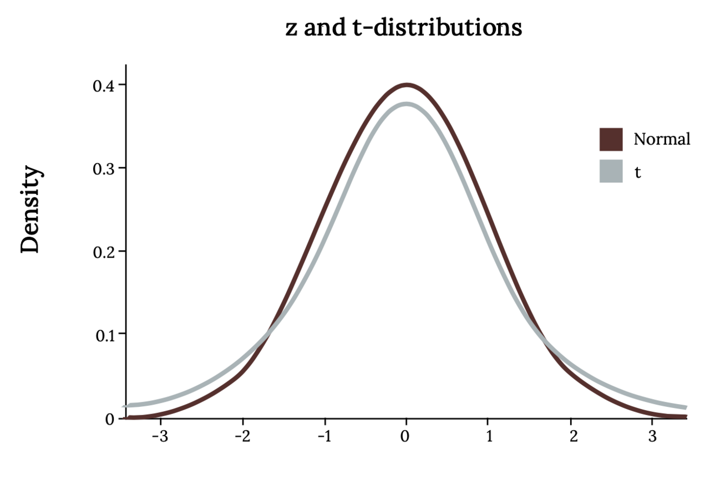
When σ is known: the z interval
Start with the easier case, the one that almost never happens in real life but makes the logic visible. Suppose the population standard deviation σ is genuinely known — a filling machine whose long-run variability the manufacturer has measured over millions of bottles, say. Then the standard error of the sample mean is exactly σ/√n, and the interval is
x̄ ± z* · (σ/√n)
where z* is the value that cuts off the middle portion of the standard normal curve matching your confidence level. For 95%, that value is 1.96 — the number worth committing to memory.
Worked example. A bottling line fills 500 mL bottles. The machine's long-run standard deviation is known to be σ = 4 mL. A quality inspector pulls a random sample of n = 36 bottles and finds x̄ = 502 mL. Build a 95% confidence interval for the true mean fill volume μ.
- Standard error: σ/√n = 4/√36 = 4/6 = 0.6667 mL
- Critical value at 95%: z* = 1.96
- Margin of error: 1.96 × 0.6667 = 1.31 mL
- Interval: 502 − 1.31 = 500.69 and 502 + 1.31 = 503.31
The 95% confidence interval is 500.69 mL to 503.31 mL. Because 500 mL falls inside this interval, the data give no strong evidence that the machine is off target — a mean of exactly 500 remains a plausible value.
When σ is unknown: the t interval
In practice you almost never know σ. You estimate it with the sample standard deviation s, which introduces a second source of uncertainty: not only is x̄ a noisy estimate of μ, but s is a noisy estimate of σ. If you simply swapped s for σ and kept using 1.96, your intervals would be a little too narrow and would capture the truth less than 95% of the time.
William Gosset solved this in 1908, publishing under the pen name “Student.” His fix was a new family of curves — Student's t distribution — that look like the normal curve but with heavier tails, which produces slightly larger critical values and slightly wider intervals. Exactly how much heavier depends on the degrees of freedom, df = n − 1. Small samples give few degrees of freedom, fat tails, and big multipliers; large samples give many degrees of freedom, and t converges on z.
x̄ ± t*n−1 · (s/√n)
Worked example. A random sample of n = 25 adults completes a reaction-time task. The sample mean score is x̄ = 78.4 with sample standard deviation s = 9.0. Build a 95% confidence interval for the population mean μ.
- Degrees of freedom: df = 25 − 1 = 24
- Standard error: s/√n = 9.0/√25 = 9.0/5 = 1.80
- Critical value: t* at 95% with df = 24 is 2.064
- Margin of error: 2.064 × 1.80 = 3.72
- Interval: 78.4 − 3.72 = 74.68 and 78.4 + 3.72 = 82.12
The 95% confidence interval is 74.68 to 82.12. Notice what the correction cost: had you carelessly used z* = 1.96, the margin would have been 3.53 and the interval 74.87 to 81.93 — noticeably too narrow, and too confident.
Conditions, and how t collapses into z
Any interval for a mean — the z version and the t version alike — rests on two assumptions, and you should state and check them before you trust the arithmetic in either worked example above. First, the data must come from a random sample (or a randomized experiment), and the observations must be independent — when sampling without replacement, a practical check is that the sample is less than 10% of the population. Second, the sampling distribution of x̄ must be roughly normal. That holds if the population itself is roughly normal, or, thanks to the Central Limit Theorem, if n is large enough (n ≥ 30 is the usual rule of thumb, and more is needed if the data are badly skewed or contain outliers).
The table below shows the 95% critical value shrinking toward 1.96 as the sample grows. This is why software uses t for everything: with n = 100 the difference between 1.984 and 1.960 is trivial, and with n = 10 it is not.
| Sample size n | df = n − 1 | t* at 95% | z* at 95% | How much wider is t? |
|---|---|---|---|---|
| 5 | 4 | 2.776 | 1.960 | +42% |
| 10 | 9 | 2.262 | 1.960 | +15% |
| 25 | 24 | 2.064 | 1.960 | +5% |
| 50 | 49 | 2.010 | 1.960 | +3% |
| 100 | 99 | 1.984 | 1.960 | +1% |
| very large | → ∞ | → 1.960 | 1.960 | 0% |
- σ known: x̄ ± z*(σ/√n). σ unknown: x̄ ± t*(s/√n) with df = n − 1.
- The t distribution has heavier tails than z, which widens the interval to pay for estimating σ.
- As n grows, t* converges to z*; at 95% the target value is 1.96.
- Conditions: random and independent observations, plus a roughly normal population or a large enough n.
Section 3A confidence interval for a proportion

Counting instead of measuring
Sometimes the variable is not a measurement but a yes/no answer: did the patient respond to treatment, did the voter approve, did the part pass inspection. Then the parameter of interest is a population proportion p, and the point estimate is the sample proportion p̂ = x/n, where x is the number of “successes.”
Counts follow a binomial distribution, which is lumpy and discrete. But when n is big enough, that binomial histogram is well approximated by a smooth normal curve — exactly what the figure above shows — and the normal-curve machinery from Section 2 applies again. The standard error of a sample proportion works out to √[p(1 − p)/n], and since p is the very thing we do not know, we substitute p̂:
p̂ ± z* · √[p̂(1 − p̂)/n]
Note that this one uses z, not t. There is no separate standard deviation to estimate here: for a yes/no variable, the proportion is the mean and it determines the variability all by itself, so there is no extra degrees-of-freedom correction to make.
The conditions — check them first
This formula is an approximation, and it is a bad one when the sample is small or the proportion is close to 0 or 1. Three conditions protect you.
| Condition | How to check | Why it matters |
|---|---|---|
| Random sample | The data came from random selection or random assignment | Without it the estimate is biased, and no formula can repair bias |
| Independence (10% rule) | n < 10% of the population when sampling without replacement | Keeps the standard error formula valid |
| Success-failure | np̂ ≥ 10 and n(1 − p̂) ≥ 10 | At least ~10 of each outcome, or the binomial is too skewed for a normal curve |
Worked example. In a random sample of n = 400 adults, x = 148 say they exercise regularly. Build a 95% confidence interval for the population proportion p.
- Point estimate: p̂ = 148/400 = 0.37
- Conditions: np̂ = 400(0.37) = 148 ≥ 10 ✓ and n(1 − p̂) = 400(0.63) = 252 ≥ 10 ✓
- Standard error: √[(0.37)(0.63)/400] = √(0.2331/400) = √0.00058275 = 0.02414
- Critical value: z* = 1.96
- Margin of error: 1.96 × 0.02414 = 0.0473, or 4.7 percentage points
- Interval: 0.37 − 0.047 = 0.323 and 0.37 + 0.047 = 0.417
The 95% confidence interval is 0.323 to 0.417, or roughly 32% to 42%. This is exactly the kind of interval a news outlet compresses into “37%, plus or minus about 5 points.”
Percentage points are not percent
When a result is itself a percentage, language gets slippery. A margin of error of 4.7 percentage points means the endpoints are 32.3% and 41.7%. It does not mean 4.7% of 37%, which would be a margin of only 1.7 points. Always say “percentage points” when you mean an additive move on a percentage scale — the distinction shows up in polling coverage, quality reporting, and clinical trial write-ups alike.
One more practical note. Political polls typically publish a single “margin of error” computed at the most conservative case, p̂ = 0.5, because that is where p̂(1 − p̂) is largest. That is why a poll of 1,000 people is nearly always described as ± 3 points regardless of what the actual percentages came out to.
- For a proportion: p̂ ± z*√[p̂(1 − p̂)/n], using z rather than t.
- Check random sampling, the 10% independence rule, and the success-failure condition (np̂ ≥ 10 and n(1 − p̂) ≥ 10).
- Report the margin in percentage points, not as a percent of the estimate.
- Variability is largest at p̂ = 0.5, which is why published poll margins assume that worst case.
Section 4Margin of error and sample size
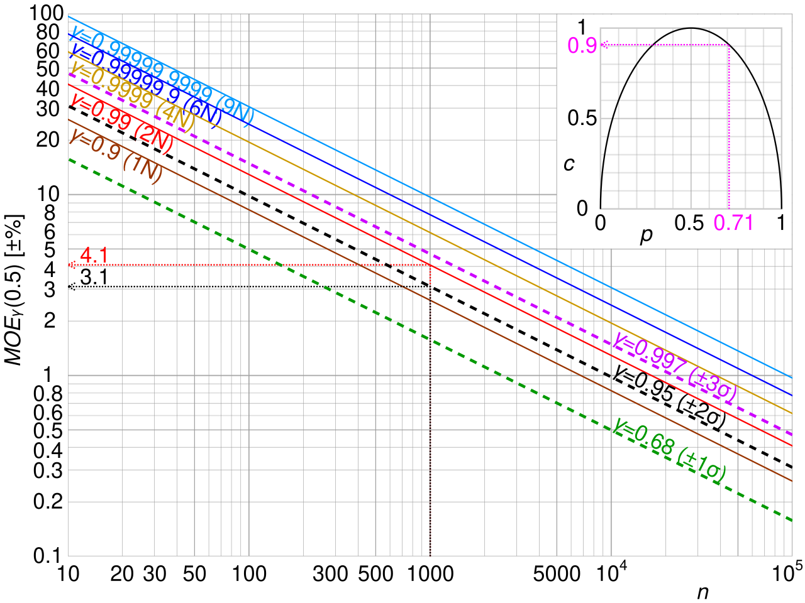
The three dials
Because the margin of error is a critical value times a standard error, only three things can change an interval's width, and each behaves in a predictable way.
Confidence level. Raising confidence raises the critical value, so the interval gets wider. This is not a defect; it is the price of a stronger guarantee. If you want to be right almost every time, you must say something vaguer. At the extreme, a 100% confidence interval for average sleep would be “between 0 and 24 hours” — certainly correct and completely useless.
Sample size. Increasing n shrinks the standard error, so the interval gets narrower. But the √n in the denominator sets the exchange rate, and it is a harsh one: to halve the margin of error you must quadruple the sample size. Doubling n only buys you a factor of 1/√2 ≈ 0.71.
Variability. More spread in the population (a larger σ or s) means a larger standard error and a wider interval. You usually cannot change this one — it is a property of the world, not of your study — though careful measurement and homogeneous subgroups can reduce it.
| Change | Critical value | Standard error | Margin of error | Interval |
|---|---|---|---|---|
| Confidence 90% → 99% | 1.645 → 2.576 (up) | unchanged | up | Wider |
| Confidence 99% → 90% | 2.576 → 1.645 (down) | unchanged | down | Narrower |
| Sample size n × 4 | unchanged (roughly) | ÷ 2 | ÷ 2 | Half as wide |
| Sample size n ÷ 4 | unchanged (roughly) | × 2 | × 2 | Twice as wide |
| Population more spread out | unchanged | up | up | Wider |
Seeing the dials turn
Return to the reaction-time sample: x̄ = 78.4, s = 9.0, n = 25, df = 24, standard error 1.80. Hold the data fixed and turn only the confidence dial.
| Confidence | t* (df = 24) | Margin of error | Interval | Width |
|---|---|---|---|---|
| 90% | 1.711 | 1.711 × 1.80 = 3.08 | 75.32 to 81.48 | 6.16 |
| 95% | 2.064 | 2.064 × 1.80 = 3.72 | 74.68 to 82.12 | 7.44 |
| 99% | 2.797 | 2.797 × 1.80 = 5.03 | 73.37 to 83.43 | 10.06 |
Now hold confidence at 95% and turn only the sample-size dial, treating the standard deviation as a known σ = 9.0 so the multiplier stays fixed at 1.96:
| Sample size n | Standard error 9/√n | Margin of error (1.96 × SE) | Interval about x̄ = 78.4 |
|---|---|---|---|
| 25 | 9/5 = 1.80 | 3.53 | 74.87 to 81.93 |
| 100 | 9/10 = 0.90 | 1.76 | 76.64 to 80.16 |
| 400 | 9/20 = 0.45 | 0.88 | 77.52 to 79.28 |
Each fourfold jump in n cuts the margin exactly in half. Going from 25 to 400 participants — sixteen times the data collection — buys a margin one quarter as large.
Planning a study: solving for n
Turn the formula around and you get a planning tool. Decide the margin of error E you can live with, pick your confidence level, and solve.
For a mean. From E = z*σ/√n, solving gives n = (z*σ/E)2. Suppose a pilot study suggests σ ≈ 12 and you want a 95% interval with margin no larger than 2 points.
- n = (1.96 × 12 / 2)2 = (11.76)2 = 138.3
- Always round up: recruit 139 participants.
For a proportion. From E = z*√[p(1−p)/n], solving gives n = z*2p(1−p)/E2. If you have no prior estimate of p, use p = 0.5, which maximizes p(1−p) at 0.25 and therefore gives the safest (largest) answer. For a 95% interval with a margin of 3 percentage points:
- n = (1.96)2(0.25)/(0.03)2 = 3.8416 × 0.25 / 0.0009
- = 0.9604 / 0.0009 = 1067.1
- Round up: survey 1,068 people.
That number should look familiar. It is why national polls so consistently sample around a thousand respondents: roughly a thousand people buys a 3-point margin, and pushing to 1 point would require about 9,600.
- Higher confidence → larger critical value → wider interval; there is no free lunch.
- Larger n → smaller standard error → narrower interval, but only at rate 1/√n: quadruple n to halve the margin.
- For a mean, n = (z*σ/E)2; for a proportion, n = z*2p(1−p)/E2, using p = 0.5 when nothing is known.
- Always round the required sample size up to the next whole person.
Section 5Interpreting a confidence interval correctly
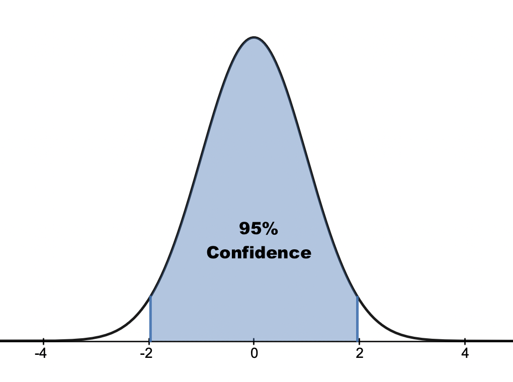
The sentence that is right
Here is a template you can use every time, and it is worth writing down word for word:
“We are 95% confident that the interval from 74.68 to 82.12 contains the true mean reaction-time score for the population.”
Three ingredients make it correct: the confidence level, the interval, and a clear statement of the parameter in context — whose mean, of what, measured how. Drop any one of them and the sentence loses its meaning.
And what does the 95% attach to? Not to this interval. It attaches to the procedure. Imagine repeating the whole study — draw a fresh random sample, compute x̄ and s, build the interval — over and over, thousands of times. Each repetition gives a different interval, centered somewhere slightly different, with a slightly different width. In the long run, about 95% of those intervals will contain the true μ, and about 5% will miss it entirely. That long-run success rate is the coverage probability, and it is the only thing 95% ever meant.
The catch is that you built exactly one interval, and you cannot tell whether yours is one of the 95% or one of the 5%. Your interval either contains μ or it does not. There is no partial credit and no randomness left to describe: μ is a fixed number, and your endpoints are now fixed numbers too.
The four sentences that are wrong
Each of the following is a real thing students, journalists, and occasionally published researchers write. Each is wrong, and it is worth knowing precisely why.
| Wrong statement | Why it fails | What it should say |
|---|---|---|
| “There is a 95% probability that μ lies in this interval.” | μ is a fixed constant and the endpoints are now fixed numbers; the probability is 0 or 1, we just do not know which. The 95% describes the long-run procedure. | “95% of intervals built this way capture μ.” |
| “95% of the data values fall between 74.68 and 82.12.” | Confuses the spread of individuals with the precision of an estimate. An interval for a mean is usually far narrower than the data. | “This interval estimates the mean, not the range of scores.” |
| “95% of future sample means will fall in this interval.” | Future sample means vary around μ, not around your particular x̄; the actual capture rate for that claim is well under 95%. | “The interval estimates μ, not the location of future samples.” |
| “The interval contains 80, so we have proved μ = 80.” | An interval lists plausible values, all of them at once. 74.7 is just as much ‘in’ the interval as 80 is. | “80 is a plausible value for μ; so is every other number in the interval.” |
A fifth error deserves its own mention because it travels with confidence intervals so often. A p-value is not the probability that the null hypothesis is true — it is the probability of observing data at least as extreme as yours assuming the null hypothesis is true. Confidence intervals and p-values are two views of the same calculation, and they inherit the same discipline: both are statements about how data behave under a hypothesis, never statements about how likely a hypothesis is.
The same discipline governs the language of decisions. When an interval contains a claimed value — equivalently, when the corresponding test does not reach significance — the correct phrase is fail to reject, never accept. Failing to reject means only that the data were consistent with that value, not that the value is true: the interval 74.68 to 82.12 is exactly as consistent with 80 as it is with 74.7 or 82.1, and it cannot single one of them out. Absence of evidence against a value is not evidence for it, and a wide interval usually means you had too little data to distinguish anything at all.
What an interval is genuinely good for
Used correctly, a confidence interval does three jobs a single p-value cannot. It shows the size of the effect, not just whether one exists. It shows the precision of your estimate through its width — a narrow interval around a small effect and a huge interval around a large one tell very different stories. And it supports a quick significance check: if a 95% interval for a difference does not contain 0, the corresponding two-sided test rejects at α = 0.05; if a 95% interval for a mean does not contain 80, a two-sided test of μ = 80 rejects at α = 0.05.
Finally, keep the interval's scope honest. A margin of error quantifies random sampling variation only. It does not cover a biased sampling frame, people who refused to answer, a leading question, a miscalibrated instrument, or data entered wrong. Those errors can dwarf the margin of error, and no amount of extra sample size will shrink them — more data collected badly just gives you a tighter interval around the wrong number.
- Correct form: “We are C% confident that the interval (a, b) contains the true parameter in context.”
- The confidence level describes the long-run procedure — about 95% of intervals built this way capture the parameter.
- A CI is not about data values, not about future sample means, and does not assign probability to a fixed μ.
- A value inside the interval is plausible, not proven; “fail to reject” never means “accept.”
- Margin of error covers random sampling variation only — never bias, non-response, or measurement error.
The chapter in one breath
- A point estimate is a single best guess; because of sampling error it is almost certainly a little wrong, so we report a range instead.
- Every confidence interval is point estimate ± (critical value × standard error), and the width of the interval is twice the margin of error.
- For a mean with σ known, use x̄ ± z*(σ/√n); with σ unknown use x̄ ± t*(s/√n) with df = n − 1.
- The t distribution has heavier tails to pay for estimating σ, and converges to z as n grows; at 95%, z* = 1.96.
- For a proportion, use p̂ ± z*√[p̂(1−p̂)/n] after checking random sampling, the 10% rule, and success-failure (at least 10 of each outcome).
- Higher confidence widens the interval; larger n narrows it only at rate 1/√n, so quadrupling n halves the margin.
- To plan a study, solve n = (z*σ/E)2 for a mean or n = z*2p(1−p)/E2 for a proportion, use p = 0.5 when in doubt, and always round up.
- “95% confident” describes the long-run procedure, not a probability for this one interval — and the margin of error covers random variation only, never bias.
ReferenceWords worth knowing
A quick reference for the vocabulary in this chapter — skim it now, then circle back whenever a term in a formula or an interpretation stops making sense.
- Central Limit Theorem
- The result that, for a large enough sample, the sampling distribution of x̄ is approximately normal regardless of the population's shape. It is what licenses the normal-curve critical values used in these intervals.
- Confidence interval
- An interval estimate for a population parameter, computed as point estimate ± margin of error and reported with a confidence level.
- Confidence level
- The long-run percentage of intervals built by a given procedure that would capture the true parameter; common choices are 90%, 95%, and 99%.
- Coverage probability
- The actual long-run proportion of intervals from a procedure that contain the parameter. A good procedure has coverage close to its stated confidence level.
- Critical value
- The multiplier (z* or t*) applied to the standard error, chosen from a distribution table to match the desired confidence level.
- Degrees of freedom (df)
- The parameter that selects which t curve to use; for a one-sample interval for a mean, df = n − 1.
- Interval estimate
- A range of plausible values for a parameter, as opposed to a single number.
- Margin of error
- The half-width of a confidence interval: critical value × standard error. It quantifies random sampling variation only.
- Parameter
- A fixed numerical fact about a whole population, such as μ or p. It is unknown and does not vary from sample to sample.
- Point estimate
- A single-number estimate of a parameter computed from sample data, such as x̄ for μ or p̂ for p.
- Population proportion (p)
- The true fraction of the population with a given characteristic — the parameter estimated by p̂.
- Prediction interval
- An interval intended to contain a future individual observation rather than a parameter; it is always wider than a confidence interval for the mean.
- Sample proportion (p̂)
- The fraction of successes in the sample, x/n; the point estimate for p.
- Sampling distribution
- The distribution of a statistic's values across all possible samples of a given size. Its standard deviation is the standard error.
- Sampling error
- The natural sample-to-sample variation of an estimate. It is not a mistake, and it is the only thing a margin of error accounts for.
- Standard error
- The standard deviation of a statistic's sampling distribution — σ/√n or s/√n for a mean, √[p̂(1−p̂)/n] for a proportion.
- Statistic
- A number computed from sample data, such as x̄, s, or p̂. Unlike a parameter, it varies from sample to sample.
- Student's t distribution
- A family of symmetric, bell-shaped curves with heavier tails than the normal, indexed by degrees of freedom; used when σ must be estimated by s.
- Success-failure condition
- The requirement np̂ ≥ 10 and n(1 − p̂) ≥ 10 that makes the normal approximation to the binomial adequate for a proportion interval.
- t critical value (t*)
- The multiplier taken from the t distribution with n − 1 degrees of freedom; at 95% it is 2.064 for df = 24 and shrinks toward 1.96 as df grows.
- Width
- The full length of a confidence interval, upper endpoint minus lower endpoint — exactly twice the margin of error.
- z critical value (z*)
- The multiplier taken from the standard normal curve: 1.645 for 90%, 1.960 for 95%, and 2.576 for 99% confidence.
Check yourself
The Logic of Hypothesis Testing
Every interesting result comes with a nagging question: could that have happened by chance? A hypothesis test is a formal, honest way to answer it. You write down the boring explanation, you ask how surprising your data would be if that boring explanation were true, and you let the answer guide — not dictate — your decision. The machinery is simple arithmetic, but the reasoning is where students get lost, and where careless researchers publish nonsense. This chapter is about the reasoning: what a null hypothesis really claims, what a p-value really measures, what it emphatically does not measure, the two ways a test can be wrong, and why a "significant" finding can still be worth nothing at all.
By the end of this chapter you can
- State a null hypothesis and an alternative hypothesis correctly, in terms of population parameters.
- Choose between a one-tailed and a two-tailed alternative, and explain why the choice comes before the data.
- Define the p-value as a conditional probability, and compute one from a test statistic.
- Name the three or four things a p-value is routinely and wrongly claimed to mean.
- Apply a significance level (α) to reach a decision, and use the language reject / fail to reject precisely.
- Distinguish a Type I from a Type II error, and compute the power of a simple test.
- Explain how sample size drives p-values, and why huge studies find trivial effects "significant."
- State and check the assumptions a test rests on, and explain why a p-value is conditional on those too.
- Report a result using an effect size and a confidence interval, and interpret that interval correctly.
- Explain why a significant result does not by itself establish causation.
Section 1Null and alternative hypotheses

The courtroom, and why we start with the boring explanation
A hypothesis test is built like a criminal trial. The defendant is presumed innocent; the prosecution must produce evidence strong enough to overturn that presumption. In statistics, the presumption of innocence is called the null hypothesis, written H0. It is always the dull, no-news, nothing-special explanation: the drug does nothing, the two groups are the same, the coin is fair, the population mean is exactly what everyone has always said it is.
Against it stands the alternative hypothesis, written Ha (some books write H1). This is the claim you actually care about — the drug helps, the groups differ, the coin is loaded, the mean has shifted. Notice the asymmetry: the burden of proof sits entirely on Ha. If the evidence is weak, we do not conclude that H0 is true; we simply say the prosecution failed. That asymmetry is the single most important idea in this chapter, and Section 3 returns to it.
Writing them correctly: four rules
Most errors in stating hypotheses are mechanical, and four rules fix nearly all of them.
Rule 1 — hypotheses are about parameters, never statistics. A hypothesis is a claim about the unknown population: μ (a population mean), p (a population proportion), σ (a population standard deviation), or the difference between two of those. It is never a claim about x̄ or the sample proportion p̂, because you can see those — there is nothing to hypothesize. Writing "H0: x̄ = 20" is like hypothesizing about a number already printed in front of you.
Rule 2 — the equals sign lives in H0. The null must pin the parameter to one specific value, because that value is what lets us build a probability model and compute anything at all. So H0: μ = 20, never H0: μ ≠ 20.
Rule 3 — H0 and Ha must not overlap. Together they should cover the possibilities without both being true at once: μ = 20 versus μ ≠ 20, or μ ≤ 20 versus μ > 20.
Rule 4 — the direction is chosen before you look at the data. A two-tailed (two-sided) alternative, μ ≠ 20, says "different in either direction." A one-tailed (one-sided) alternative, μ > 20 or μ < 20, says "different in this specific direction," and it is only legitimate when the direction was decided in advance for a substantive reason — and when a difference in the other direction would be of no interest whatsoever. Peeking at the data, noticing the sample mean came out high, and then declaring a one-tailed test is a way of quietly doubling your chance of a false positive. When in doubt, go two-tailed.
| Research question | H0 | Ha | Tails |
|---|---|---|---|
| Is the mean commute still 20 minutes? | μ = 20 | μ ≠ 20 | Two |
| Does the new curriculum raise scores above the old mean of 72? | μ ≤ 72 | μ > 72 | One (upper) |
| Is the defect rate below the promised 3%? | p ≥ 0.03 | p < 0.03 | One (lower) |
| Do two teaching methods differ in mean score? | μ1 − μ2 = 0 | μ1 − μ2 ≠ 0 | Two |
| Is the coin fair? | p = 0.5 | p ≠ 0.5 | Two |
Setting up a real one
A transit office states that the mean one-way commute for students at a large institution is 20 minutes. You suspect it has crept upward, but you would also want to know if it had dropped, so you go two-tailed. You survey a random sample of n = 36 students and find x̄ = 22.4 minutes with s = 6.0 minutes.
The hypotheses, in the population's language, are
H0: μ = 20 minutes versus Ha: μ ≠ 20 minutes.
Your sample came out 2.4 minutes high. That by itself proves nothing — samples wobble. The question the rest of this chapter answers is: if the mean really were 20, how often would a sample of 36 wobble this far? We carry this example through Sections 2, 3, and 4.
- H0 is the no-effect, no-difference explanation; Ha carries the claim and the burden of proof.
- Hypotheses are statements about parameters (μ, p, σ), never about sample statistics.
- The equality goes in H0, because a specific value is what makes the probability calculation possible.
- Choose one-tailed vs two-tailed before seeing the data; when unsure, use two-tailed.
Section 2The p-value

What it actually measures
Assume, for the sake of argument, that H0 is true. Under that assumption the sample statistic has a known sampling distribution — a predictable pattern of wobble. The p-value is the probability, computed inside that assumed world, of getting a result at least as extreme as the one you actually got.
Written as a conditional probability:
p = P( a test statistic at least this extreme | H0 is true and the model's assumptions hold )
Read the vertical bar as "given." Everything to the right of it is assumed, not concluded. A small p-value means your data would be a rare event in the null world, which is grounds for doubting the null world. A large p-value means your data are perfectly ordinary there — unsurprising, and therefore uninformative.
Computing one, step by step
Back to the commutes: H0: μ = 20, Ha: μ ≠ 20, with n = 36, x̄ = 22.4, s = 6.0.
Step 1 — standard error. The typical wobble of a sample mean is
SE = s / √n = 6.0 / √36 = 6.0 / 6 = 1.00 minute.
Step 2 — test statistic. Measure the gap between what you saw and what H0 predicted, in units of that wobble:
t = (x̄ − μ0) / SE = (22.4 − 20) / 1.00 = 2.40, with df = n − 1 = 35.
Your sample mean sits 2.40 standard errors above the null value.
Step 3 — tail area. On a t distribution with 35 degrees of freedom, the area beyond t = 2.40 in one tail is about 0.011. Because Ha is two-sided, "at least as extreme" includes results 2.40 SEs below 20 as well, so we double it:
p ≈ 2 × 0.011 = 0.022.
Step 4 — say it in English. If the true mean commute really were 20 minutes, then about 2.2% of random samples of 36 students would land at least 2.4 minutes away from 20 in one direction or the other. Our sample is in that unusual 2.2%. That is real, but not overwhelming, evidence against μ = 20.
What that calculation assumed
Every number above is conditional on a set of assumptions, and a one-sample t test has three that you are obliged to state and check before reporting anything:
- Random sampling. The 36 commuters were drawn at random from the population the conclusion is about. A convenience sample breaks the link between the sampling distribution and reality, and no amount of arithmetic repairs it.
- Independence. One person's commute tells you nothing about another's. Sampling 36 people who carpool together, or surveying the same person repeatedly, violates this and makes the standard error too small.
- Approximate normality of the sampling distribution. Either the population of commute times is roughly normal, or n is large enough for the Central Limit Theorem to do the work. At n = 36 the t procedure is reasonably robust, but a strongly skewed population or a visible outlier — a single three-hour commute — can distort both x̄ and s. Plot the data before you trust the p-value.
The same three conditions carry through Sections 3, 4, and 5. When σ is known and used in place of s, as in the power calculation of Section 4, the test statistic becomes a z rather than a t, but the sampling, independence, and shape requirements are unchanged.
Four things a p-value is not
These misreadings are so common that they appear in press releases, textbooks, and published papers. Learn them as a list of things you will never say.
| People say | Why it is wrong | What is actually true |
|---|---|---|
| "p = 0.022, so there is a 2.2% chance the null is true." | Reverses the conditioning. The p-value is P(data | H0), not P(H0 | data). | P(H0 | data) cannot be computed without prior probabilities; classical testing never supplies them. |
| "There is a 97.8% chance the alternative is true." | Same reversal, mirrored. 1 − p is not the probability of Ha. | 1 − p is just the non-tail area of the null distribution. It says nothing about Ha. |
| "p = 0.022 means the effect is big." | Confuses evidence with magnitude. A tiny effect gets a small p-value if n is huge. | Magnitude is reported by an effect size and a confidence interval (Section 5). |
| "p = 0.022 means it will replicate 97.8% of the time." | Replication probability depends on the true effect and the new study's power, not on p. | A study with p just under 0.05 often replicates barely half the time. |
| "p = 0.30 proves there is no effect." | A large p-value is a failure to detect, not a demonstration of absence. | An underpowered study returns large p-values even when the effect is real (Section 4). |
One more caution hides in the fine print of the definition. The p-value assumes H0 and every modeling assumption: random sampling, independence, the right distributional shape, no selective reporting. A small p-value is evidence that something in that whole package is wrong. If your sample was a convenience sample of your friends, the thing that is wrong may not be H0.
- The p-value is P(result this extreme or more | H0 true and assumptions hold).
- Compute it in three moves: standard error → test statistic → tail area, doubling the tail for a two-sided Ha.
- It is not the probability the null is true, not the probability of replication, and not a measure of effect size.
- A small p-value indicts the whole model, not just H0 — check your sampling and assumptions first.
Section 3Significance and decisions

Alpha: an error budget you set in advance
A p-value is a continuous measure of surprise. Sooner or later, though, somebody has to do something — approve the drug, change the curriculum, keep the old machine. Turning a continuous measure into a yes/no decision requires a threshold, and that threshold is the significance level, written α.
α is not a law of nature; it is a choice about how much false-alarm risk you are willing to tolerate. Setting α = 0.05 means: if H0 is true, I accept a 5% chance of wrongly rejecting it. Fields that can afford a few false alarms use 0.05. Fields where a false alarm is catastrophic or where thousands of tests are run at once — genetics, particle physics — use 0.01, 10−6, or smaller. The one non-negotiable rule is that α is fixed before you see the data. Choosing α after the p-value arrives is not statistics; it is bookkeeping in reverse.
The decision rule, both ways
The rule itself is one line: if p ≤ α, reject H0; if p > α, fail to reject H0. An equivalent route compares the test statistic to a critical value instead, which is the picture the figure above shows: the tails cut off by α form the rejection region, and a statistic landing there triggers rejection.
Our commute study, with α = 0.05 set in advance:
p-value route. p ≈ 0.022. Since 0.022 ≤ 0.05, reject H0.
Critical-value route. With df = 35 and a two-tailed α = 0.05, the critical value is t* = 2.030, so the rejection region is t < −2.030 or t > 2.030. Our t = 2.40 lands beyond 2.030, so we reject H0. Same verdict, necessarily — the two routes are the same statement seen from two sides.
Now suppose the sample mean had been 21.6 instead of 22.4. Then
t = (21.6 − 20) / 1.00 = 1.60, and with df = 35 the two-tailed p ≈ 0.119.
Here 0.119 > 0.05, and 1.60 does not reach 2.030, so we fail to reject H0. Note carefully what we have and have not learned. The sample mean was still 1.6 minutes above 20. We have not shown the commute is 20 minutes. We have shown that a wobble this size is unremarkable in a sample of 36 — so this study cannot tell the difference between "no change" and "a change we were too small to detect."
Say it right
| Outcome | Say this | Never say this |
|---|---|---|
| p ≤ α | "Reject H0." / "The result is statistically significant at α = 0.05." | "Ha is proven." / "The null is false." |
| p > α | "Fail to reject H0." / "There is insufficient evidence of a difference." | "Accept H0." / "We proved there is no difference." |
| Any outcome | Report the estimate, the interval, and the exact p-value. | "p < 0.05" with no effect size. |
| p = 0.051 | "Weak evidence; the interval runs from … to …" | "No effect." / "Trending toward significance." |
Why the fuss about "fail to reject" instead of "accept"? Because the test was never designed to gather evidence for H0. The whole apparatus — sampling distribution, tail area, rejection region — was built inside the assumption that H0 is true, so it can only ever tell you whether that assumption strains. It has no mechanism for confirming it. A jury that acquits has not proven innocence; it has found the evidence insufficient.
- α is the false-alarm rate you agree to tolerate, chosen before the data arrive.
- Decision rule: p ≤ α → reject H0; p > α → fail to reject. The critical-value route always agrees.
- "Fail to reject" ≠ "accept" — the test cannot supply evidence in favor of the null.
- Significance is a threshold crossing, not a measurement; report the estimate and interval alongside it.
Section 4Type I and Type II errors

Two ways to be wrong
Reality has two states and your test has two verdicts, so there are four combinations — two right, two wrong.
| H0 is actually true | H0 is actually false | |
|---|---|---|
| Reject H0 | Type I error — false alarm. Probability = α. | Correct decision. Probability = 1 − β = power. |
| Fail to reject H0 | Correct decision. Probability = 1 − α. | Type II error — missed detection. Probability = β. |
A Type I error is convicting the innocent: declaring an effect that is not there. You control it directly, because α is its probability — that is what setting α = 0.05 buys you. A Type II error is acquitting the guilty: missing an effect that is genuinely there. Its probability, β, you do not set directly; it falls out of how big the real effect is, how noisy your measurements are, how large your sample is, and what α you chose.
Power is the good half of that second column: power = 1 − β, the probability that your study detects an effect of a given size when that effect is real. Power is a property of a study design plus a specific alternative — there is no such thing as "the power of a test" without naming the effect size you want to catch.
Computing power, with numbers
Return to the commute study. To keep the arithmetic clean, suppose the population standard deviation is known to be σ = 6.0 minutes, so we can work with the standard normal. Test H0: μ = 20 against Ha: μ ≠ 20 at α = 0.05 with n = 36. Ask: if the true mean is really 21.5 minutes, what is the chance we detect it?
Step 1 — find the rejection region in real units. SE = σ/√n = 6.0/6 = 1.00. A two-tailed α = 0.05 uses z* = 1.96, so we reject whenever
x̄ > 20 + 1.96(1.00) = 21.96 or x̄ < 20 − 1.96(1.00) = 18.04.
Step 2 — move into the true world. If μ = 21.5, then x̄ is centered at 21.5 with the same SE = 1.00. Standardize both boundaries against 21.5:
upper: z = (21.96 − 21.5)/1.00 = 0.46 → P(Z > 0.46) = 1 − 0.6772 = 0.3228
lower: z = (18.04 − 21.5)/1.00 = −3.46 → P(Z < −3.46) = 0.0003
Step 3 — add. Power = 0.3228 + 0.0003 ≈ 0.32, so β ≈ 1 − 0.32 = 0.68.
Read that again, because it is sobering. If the commute truly has risen by a minute and a half, this 36-person study misses it roughly 68% of the time. Most of its "no significant difference" conclusions would be wrong.
Step 4 — fix it with sample size. Quadruple n to 144. Then SE = 6.0/√144 = 6.0/12 = 0.50, and we reject when x̄ > 20 + 1.96(0.50) = 20.98 (or below 19.02). Standardizing against the true 21.5:
z = (20.98 − 21.5)/0.50 = −1.04 → P(Z > −1.04) = 0.8508
The lower boundary contributes essentially nothing, so power ≈ 0.85. Quadrupling n halved the standard error and took power from 32% to 85%. This is exactly what a power analysis does before a study is run: pick the smallest effect worth detecting, pick a target power (0.80 is the usual floor), and solve for the n you need.
The four levers, and the trade-off
| Lever | Move it this way | Effect on power | Cost |
|---|---|---|---|
| Sample size n | Increase | Rises — SE shrinks like 1/√n | Time, money, participants |
| True effect size | Larger real difference | Rises | Not yours to choose |
| Variability σ | Decrease (better measurement, tighter design) | Rises | Effort, instrumentation |
| Significance level α | Increase (0.01 → 0.05) | Rises | More Type I errors |
The last row is the central tension of the whole framework. Holding everything else fixed, the only way to make Type I errors rarer is to shrink the rejection region, which makes Type II errors more common — and vice versa. You cannot reduce both by adjusting α. The one lever that improves both at once is a bigger, cleaner sample, which is why sample size is the design question that matters most.
Which error is worse depends entirely on context, and that is a judgment about consequences, not statistics. In screening for a treatable cancer, a Type II error (missing a real case) is far worse than a Type I error (a false alarm resolved by a follow-up test), so screening tests are deliberately tuned toward high power. In a criminal trial, the system deliberately accepts many Type II errors to avoid Type I errors.
- Type I error = rejecting a true H0 (false alarm); its probability is exactly α.
- Type II error = failing to reject a false H0 (missed detection); its probability is β.
- Power = 1 − β, always stated against a specific effect size; 0.80 is the conventional minimum.
- Lowering α raises β; only larger n or less variability improves both kinds of error at once.
Section 5Statistical versus practical significance

Sample size manufactures significance
Look once more at the test statistic and notice what is in the denominator:
t = (x̄ − μ0) / (s/√n)
Hold the numerator fixed — the same real difference — and let n grow. The denominator shrinks toward zero, so t grows without bound and the p-value slides toward zero. Any difference from H0, no matter how minuscule, becomes statistically significant at a large enough sample size. Statistical significance answers "can we tell this is not exactly zero?" It never answers "is it big enough to care about?"
A worked pair: the significant triviality and the invisible whale
Study A. A supplement company follows n = 40,000 participants and records each one's weight change over six months, testing H0: μ = 0 against a two-sided alternative. The mean change is 0.20 pounds, with s = 10 pounds. (Because this is a single sample of 40,000 changes, the one-sample formula SE = s/√n applies; comparing two separate groups would require the two-sample standard error instead.)
SE = s/√n = 10/√40000 = 10/200 = 0.05
t = 0.20 / 0.05 = 4.00, giving p < 0.0001 — wildly "significant."
95% confidence interval: 0.20 ± 1.96(0.05) = 0.20 ± 0.098 → (0.10, 0.30) pounds.
Effect size (Cohen's d) = difference / s = 0.20/10 = 0.02, which is negligible by any standard.
The interval is the punchline. We are confident the true effect is somewhere between a tenth and three tenths of a pound. It is real, it is not zero, and it is completely worthless to a person trying to lose weight. Significant, and trivial.
Study B. A small trial follows n = 25 participants over the same six months and tests the same H0: μ = 0. The mean weight change is 4.0 pounds, again with s = 10 pounds.
SE = 10/√25 = 10/5 = 2.00
t = 4.0/2.00 = 2.00, df = 24, two-tailed p ≈ 0.057 — "not significant."
95% CI: 4.0 ± 2.064(2.00) = 4.0 ± 4.13 → (−0.13, 8.13) pounds.
Effect size d = 4.0/10 = 0.40, a small-to-moderate effect worth chasing.
Study B failed the α = 0.05 threshold, but its interval is compatible with an eight-pound benefit. The honest conclusion is not "the supplement does not work" — it is "this study was too small to say." Study A is the more significant result and the less important one; Study B is the less significant result and the more promising one.
| Practically important | Practically trivial | |
|---|---|---|
| Statistically significant | The goal — a real, meaningful effect, well measured. | Huge n detecting a difference nobody would act on (Study A). |
| Not statistically significant | Promising but underpowered — wide interval, needs a bigger study (Study B). | Genuinely uninteresting, or genuinely no effect. The interval tells you which. |
What to report instead
A complete result has three parts, and only the third is the p-value: the estimate (how big), the interval (how precisely we know it), and the test (how surprising it would be under the null). Study A reported properly reads: "0.20 lb, 95% CI (0.10, 0.30), d = 0.02, p < 0.0001" — and no reader is fooled for a second.
A fourth caution belongs with the other three, because it is the one most likely to survive into a headline. A significant test result does not establish that anything caused anything. Causal standing comes from the design — randomized assignment, a control condition, and control of confounding variables — not from the size of a test statistic. Study A's participants chose to take a supplement; whatever separates them from people who did not may also separate them in diet, income, or exercise, and the p-value cannot tell those explanations apart. The same rule holds for an observed association between two measured variables: a small p-value on a correlation says the association is unlikely to be zero, and nothing more. Significance answers "is this pattern distinguishable from noise?" Only the design answers "why is the pattern there?"
One last precision point, because it is misstated constantly. A 95% confidence interval is a statement about the procedure, not about this one interval. It means: if you repeated the whole study endlessly and built an interval each time by this method, about 95% of those intervals would contain the true parameter. It does not mean there is a 95% probability that the true parameter lies inside the particular interval you just computed. That interval either contains μ or it does not; the parameter is a fixed number, not a random one. The 95% describes the long-run reliability of the machine that produced it.
- Because SE = s/√n, large samples make any nonzero difference statistically significant.
- Statistical significance answers "not zero?"; practical significance answers "big enough to matter?"
- Report an effect size and a confidence interval alongside the p-value, never the p-value alone.
- A 95% CI describes the long-run success rate of the procedure, not a 95% probability for this specific interval.
- Significance never establishes causation — that comes from randomization and control in the design, not from the p-value.
The chapter in one breath
- H0 is the no-effect explanation and carries the equality; Ha is your claim and carries the burden of proof. Both are statements about parameters, and the number of tails is chosen before you look.
- The p-value is P(a result this extreme or more | H0 true and assumptions hold) — computed as standard error, then test statistic, then tail area.
- A p-value is not the probability the null is true, not the probability of replication, and not a measure of how big the effect is.
- α is a false-alarm budget fixed in advance; p ≤ α means reject H0, p > α means fail to reject — never "accept."
- A Type I error (probability α) is a false alarm; a Type II error (probability β) is a miss; power = 1 − β is stated against a specific effect size.
- Shrinking α inflates β and vice versa; only larger n or less variability improves both, which is why power analysis precedes data collection.
- Because SE shrinks with √n, a large enough study makes any trivial difference "significant" — and a small study can miss a large one.
- Every p-value is conditional on the test's assumptions — random sampling, independence, and adequate normality — as well as on H0; state and check them before reporting.
- Report the estimate, the confidence interval, and the effect size; a 95% CI describes the long-run behavior of the procedure, not this interval's chance of being right.
- Statistical significance is never evidence of causation; only the design — randomization, control, and handling of confounders — can support a causal claim.
ReferenceWords worth knowing
A quick reference for the vocabulary in this chapter. The definitions are worded to be precise rather than casual — in hypothesis testing, the casual wording is usually the wrong one.
- Alpha (α, significance level)
- The maximum probability of a Type I error you agree to tolerate, fixed before the data are seen. Commonly 0.05, but the value should suit the consequences of a false alarm.
- Alternative hypothesis (Ha)
- The statement about a population parameter that contradicts H0 and expresses the claim under investigation; it may be two-sided (≠) or one-sided (> or <).
- Assumptions (of a test)
- The conditions a test's mathematics depends on — for a one-sample t test: random sampling, independent observations, and a sampling distribution close enough to normal. A p-value is conditional on these as well as on H0, so they must be stated and checked before the result is reported.
- Beta (β)
- The probability of a Type II error — failing to reject a false H0. Not set directly; it depends on effect size, variability, sample size, and α.
- Confidence interval
- A range of parameter values produced by a procedure that, in repeated use, captures the true parameter a stated proportion of the time (e.g., 95%). It quantifies precision, not the probability of one particular interval.
- Critical value
- The cutoff on the test statistic's null distribution that bounds the rejection region for a given α (for example, z* = 1.96 for a two-tailed test at α = 0.05).
- Effect size
- A measure of the magnitude of a difference or relationship, independent of sample size — for instance Cohen's d, the mean difference divided by the standard deviation.
- Fail to reject
- The verdict when p > α: the evidence is insufficient to overturn H0. It is not a conclusion that H0 is true.
- Null hypothesis (H0)
- The default statement of no effect, no difference, or no change, pinned to a specific parameter value so that a sampling distribution can be constructed.
- One-tailed (one-sided) test
- A test whose alternative specifies a direction; the entire rejection region sits in one tail. Legitimate only when the direction is chosen in advance on substantive grounds.
- Parameter
- A fixed numerical characteristic of a population, such as μ, σ, or p. Hypotheses are always about parameters.
- Power
- 1 − β: the probability of correctly rejecting H0 when a specified alternative is true. Rises with larger n, larger true effects, smaller variability, and larger α.
- Practical significance
- Whether an effect is large enough to matter in the real world, judged against a minimum important difference — a separate question from statistical significance.
- p-value
- The probability, assuming H0 and all model assumptions are true, of obtaining a test statistic at least as extreme as the one observed.
- Rejection region
- The set of test-statistic values, determined by α, that lead to rejecting H0; the shaded tail area(s) of the null distribution.
- Sampling distribution
- The distribution a statistic would follow across all possible samples of a given size; the mathematical object that makes a p-value computable.
- Standard error (SE)
- The standard deviation of a sampling distribution. For a mean, SE = s/√n (or σ/√n when σ is known).
- Statistic
- A number computed from a sample, such as x̄ or s; used to estimate a parameter and to test hypotheses about it.
- Statistically significant
- Describes a result whose p-value falls at or below the pre-set α, meaning the data would be unusual if H0 were true. It implies nothing about magnitude.
- Test statistic
- A standardized measure of the distance between the observed data and what H0 predicts, expressed in standard errors — for example t = (x̄ − μ0)/(s/√n).
- Two-tailed (two-sided) test
- A test whose alternative is simply "different," splitting the rejection region between both tails; the safe default when no direction was specified beforehand.
- Type I error
- Rejecting H0 when it is actually true — a false positive. Its probability is exactly α.
- Type II error
- Failing to reject H0 when it is actually false — a false negative, or missed detection. Its probability is β.
Check yourself
One-Sample Tests
You have a claim about the world and you have one sample of data. A hypothesis test is the disciplined way to ask whether the data are surprising enough to make you doubt the claim. This chapter builds a single five-step procedure that never changes, then pours three different one-sample situations into it: a mean when the population standard deviation is somehow known, a mean when it is not (the far more common case, and the reason Student's t distribution exists), and a proportion. Every formula here is the same idea in different clothing — how far is the estimate from the claim, measured in standard errors? Get comfortable with that one sentence and the rest is bookkeeping.
By the end of this chapter you can
- State a null and alternative hypothesis in symbols and in words, and choose one-tailed versus two-tailed correctly.
- Carry out the five steps of any hypothesis test in order, without memorizing a separate recipe for each test.
- Compute and interpret a z-test for a mean when σ is known.
- Compute and interpret a t-test for a mean when σ is unknown, and explain degrees of freedom.
- Compute and interpret the one-proportion z-test, including why the standard error uses p0 and not p̂.
- State a p-value correctly — and say precisely what it is not.
- Check the assumptions each test requires and say what happens when they fail.
- Distinguish statistical significance from practical importance, and relate a test to its matching confidence interval.
Section 1The five steps of a test

One procedure, every test
Students often try to memorize hypothesis testing as a pile of unrelated formulas. It is not. There is one procedure, and the only thing that changes between tests is which formula you plug into step 3. Learn the skeleton once and the whole chapter collapses into something manageable.
A hypothesis test begins with a claim about a population parameter — a fixed, unknown number describing the whole population, like the population mean μ or the population proportion p. You cannot see the parameter. You can only see a statistic computed from a sample: x̄ or p̂. The test asks a single question: if the claim were true, how unusual would a sample like mine be?
| Step | What you do | What it looks like |
|---|---|---|
| 1 | State the hypotheses about the parameter — before looking at the data | H0: μ = 500 Ha: μ ≠ 500 |
| 2 | Choose the significance level α and check the conditions the test requires | α = 0.05; random sample, normal enough |
| 3 | Compute the test statistic — distance from the claim, in standard errors | z or t = (estimate − claim) ÷ SE |
| 4 | Find the p-value (or compare to the critical value) | p = 0.0124; or |z| > 1.96? |
| 5 | Decide and interpret in context — in plain words, about the original claim | “Reject H0; there is evidence the mean differs from 500.” |
Two rules govern step 1. First, the null hypothesis H0 always contains the equality — it is the “nothing unusual is happening” statement, the specific number the arithmetic needs. Second, the alternative hypothesis Ha encodes what you are actually looking for, and it must be chosen from the research question, never from the direction the data happened to fall. Picking a one-sided alternative after seeing which way the sample leaned doubles your real error rate while pretending it did not.
Reading a p-value without getting it wrong
The p-value is the probability of getting a test statistic at least as extreme as the one you observed, computed under the assumption that the null hypothesis is true. That last clause is not decoration. It is the entire meaning of the number. A small p-value says: “data like these would be rare if H0 held,” which is grounds for doubting H0.
Suppose a test yields z = 2.50 with a two-tailed alternative. From the standard normal, the upper tail beyond 2.50 has area 0.0062. Because the alternative is two-sided, both tails count: p = 2 × 0.0062 = 0.0124. Compared with α = 0.05, we have 0.0124 < 0.05, so we reject H0. Compared with a stricter α = 0.01, we have 0.0124 > 0.01 and we would fail to reject. Same data, same evidence — only the threshold changed. That is worth sitting with, because it shows α is a convention you adopt, not a property of nature.
| Statement about p = 0.0124 | Correct? | Why |
|---|---|---|
| “If H0 were true, results this extreme happen about 1.2% of the time.” | Yes | This is the definition |
| “There is a 1.2% probability that H0 is true.” | No | The p-value assumes H0; it cannot also measure its probability |
| “There is a 98.8% probability the alternative is true.” | No | Same error, wearing a hat |
| “The effect is large and important.” | No | p-values shrink with sample size; they measure evidence, not size |
| “A large p-value proves H0 is true.” | No | Absence of evidence is not evidence of absence — we say fail to reject |
Notice the deliberately awkward phrase fail to reject. We never “accept” the null. A test that comes up empty may mean the null is true, or may simply mean the sample was too small to detect a real difference. Courts acquit for lack of evidence without declaring the defendant virtuous; statistics does the same.
Two ways to be wrong
Because you are deciding under uncertainty, you can err in two directions. A Type I error is rejecting a true null — a false alarm. Its long-run rate is exactly α, which is why you choose α before you look. A Type II error is failing to reject a false null — a miss — with rate β. The power of a test is 1 − β, the chance of catching a real effect when one exists. Power rises with larger samples, larger true effects, smaller variability, and larger α.
| H0 is actually true | H0 is actually false | |
|---|---|---|
| Reject H0 | Type I error (rate α) | Correct decision (power = 1 − β) |
| Fail to reject H0 | Correct decision | Type II error (rate β) |
- Every test follows the same five steps; only the step-3 formula changes.
- H0 holds the equality; Ha comes from the question, never from the data.
- A p-value is P(data this extreme given H0 is true) — not P(H0 is true).
- We fail to reject; we never accept. α is the Type I error rate, and power = 1 − β.
Section 2Z-test for a mean

Where the formula comes from
Take repeated random samples of size n from a population with mean μ and standard deviation σ. The sample means x̄ bounce around, but not wildly and not without pattern: they center on μ and they spread out with a standard deviation of σ∕√n. That quantity is the standard error of the mean, and the √n in the denominator is the mathematical statement of a very intuitive fact — bigger samples give steadier averages. Quadruple the sample and you halve the standard error.
If in addition the sampling distribution of x̄ is normal (either because the population is normal, or because n is large enough for the Central Limit Theorem to take over), then standardizing gives a familiar quantity:
z = ( x̄ − μ0 ) ∕ ( σ ∕ √n )
Read it out loud in English: how many standard errors is my sample mean away from the claimed mean? That is all a test statistic ever is. The z-test is the version you use when σ — the population standard deviation — is known ahead of time and does not have to be estimated from your data.
Be honest about how rare that is. In genuine research you almost never know σ while remaining ignorant of μ. The z-test earns its place in two ways: it is the honest tool when a manufacturing process, a calibrated instrument, or a standardized test has decades of history pinning σ down, and it is the clean stepping-stone that makes the t-test in the next section easy to understand.
A worked example
A bottling line is supposed to fill containers to a mean of 500 mL. Years of process records establish that the fill standard deviation is stable at σ = 4.0 mL. A quality technician pulls a random sample of n = 25 bottles and finds a sample mean of x̄ = 498.2 mL. Is the line off target? Test at α = 0.05.
Step 1 — hypotheses. The line could drift either way and both directions matter, so the test is two-tailed:
H0: μ = 500 Ha: μ ≠ 500
Step 2 — level and conditions. α = 0.05. The sample is random, σ is known from process history, and fill volumes from a machine are approximately normal. Conditions met.
Step 3 — test statistic. First the standard error, then the standardization:
SE = σ ∕ √n = 4.0 ∕ √25 = 4.0 ∕ 5 = 0.80 mL
z = (498.2 − 500) ∕ 0.80 = (−1.8) ∕ 0.80 = −2.25
The sample mean sits 2.25 standard errors below the target.
Step 4 — p-value. From the standard normal table, the area below z = −2.25 is 0.0122. The alternative is two-sided, so we double it:
p = 2 × 0.0122 = 0.0244
The critical-value route agrees: for a two-tailed test at α = 0.05 the critical values are ±1.96, and |−2.25| = 2.25 > 1.96, so the statistic lands in the rejection region.
Step 5 — decide and interpret. Since 0.0244 < 0.05, reject H0. There is statistically significant evidence at the 5% level that the mean fill volume differs from 500 mL; the sample suggests underfilling by about 1.8 mL. If instead the technician only cared about underfilling and had specified Ha: μ < 500 before collecting data, the p-value would be the single lower tail, 0.0122.
The confidence interval says the same thing
A two-sided test at level α and a 100(1 − α)% confidence interval are two views of one calculation. The 95% interval here is
498.2 ± 1.96 × 0.80 = 498.2 ± 1.57 → (496.63, 499.77)
The claimed value 500 lies outside that interval — which is exactly why the test rejected. The rule is general: a two-sided test rejects H0: μ = μ0 at level α precisely when the 100(1 − α)% interval excludes μ0. The interval is often the more useful report, because it also tells you the plausible size of the discrepancy, which a p-value never does.
| Alternative | p-value from z | Critical value at α = 0.05 | Reject when |
|---|---|---|---|
| Ha: μ ≠ μ0 | 2 × P(Z > |z|) | ±1.96 | |z| > 1.96 |
| Ha: μ > μ0 | P(Z > z) | +1.645 | z > 1.645 |
| Ha: μ < μ0 | P(Z < z) | −1.645 | z < −1.645 |
- z = (x̄ − μ0) ∕ (σ∕√n) — the estimate's distance from the claim, in standard errors.
- The standard error σ∕√n shrinks with √n: four times the data, half the wobble.
- Use the z-test only when σ is genuinely known, not estimated from the sample.
- A two-sided test at α rejects exactly when the matching 100(1 − α)% confidence interval excludes μ0.
Section 3T-test for a mean

The problem with substituting s for σ
In real work σ is unknown, so you estimate it with the sample standard deviation s. The formula looks almost identical:
t = ( x̄ − μ0 ) ∕ ( s ∕ √n )
But something subtle has changed. The z formula had one random quantity in it, x̄. The t formula has two, because s jumps around from sample to sample as well. That extra source of noise makes extreme values more common than the normal curve predicts. William Sealy Gosset worked this out around 1908 while running small-batch experiments at a brewery, publishing under the pen name “Student” — hence Student's t distribution.
The t distribution is symmetric and bell-shaped like the normal, centered at zero, but with heavier tails: more probability far from the center. Heavier tails mean larger critical values, which means the t-test demands more evidence before it will reject. That is not a defect — it is the honest price of not knowing σ.
Degrees of freedom
The t distribution is not one curve but a family, indexed by degrees of freedom. For a one-sample t-test, df = n − 1.
Why n − 1 rather than n? Because computing s requires first computing x̄ from the same data, and that costs you one piece of independent information. Concretely: if you know four deviations from the mean, the fifth is forced, because the deviations must sum to zero. Five numbers, four of them free — four degrees of freedom. Every degree of freedom you spend estimating something is one less available to measure variability.
As df grows, s becomes a reliable stand-in for σ, the extra noise fades, and the t curve converges to the standard normal. This is visible in any table of critical values.
| df | n | Two-tailed t* at α = 0.05 | Comment |
|---|---|---|---|
| 5 | 6 | 2.571 | Much stricter than 1.96 |
| 10 | 11 | 2.228 | Still noticeably stricter |
| 15 | 16 | 2.131 | Closing in |
| 20 | 21 | 2.086 | |
| 30 | 31 | 2.042 | About 4% above the normal value |
| 60 | 61 | 2.000 | Nearly indistinguishable |
| ∞ | — | 1.960 | The standard normal itself |
A worked example
A transit planner claims the mean one-way commute in a metropolitan area is 30 minutes. A random sample of n = 16 commuters gives x̄ = 33.4 minutes with s = 6.4 minutes. Test the claim at α = 0.05.
Step 1. H0: μ = 30 Ha: μ ≠ 30 (the claim could be wrong in either direction).
Step 2. α = 0.05. The sample is random; n = 16 is small, so we require the commute-time distribution to be roughly symmetric with no big outliers — a dotplot or boxplot should be inspected before proceeding.
Step 3.
SE = s ∕ √n = 6.4 ∕ √16 = 6.4 ∕ 4 = 1.60 minutes
t = (33.4 − 30) ∕ 1.60 = 3.4 ∕ 1.60 = 2.125 with df = 16 − 1 = 15
Step 4. The two-tailed critical value at df = 15 is t* = 2.131. Our statistic, 2.125, is a hair short of it, so the two-tailed p-value is a hair above 0.05 — software gives p ≈ 0.051.
Step 5. Since 0.051 > 0.05, we fail to reject H0. At the 5% level there is not quite enough evidence to conclude the mean commute differs from 30 minutes. The matching 95% interval tells the same story: 33.4 ± 2.131 × 1.60 = 33.4 ± 3.41 → (29.99, 36.81), which contains 30 — barely.
Now watch what a larger sample does. Suppose the same x̄ = 33.4 and s = 6.4 had come from n = 25:
SE = 6.4 ∕ √25 = 6.4 ∕ 5 = 1.28 t = 3.4 ∕ 1.28 = 2.656, df = 24, t* = 2.064, p ≈ 0.014
Identical estimated effect — 3.4 minutes — but now we reject comfortably. Nothing about the world changed; only the precision of our measurement did. This is why “not significant” must never be reported as “no difference,” and why a study's sample size belongs in every conclusion you read.
- t = (x̄ − μ0) ∕ (s∕√n) — use it whenever σ is unknown, which is nearly always.
- Estimating σ with s adds noise, so the t curve has heavier tails and larger critical values than the normal.
- df = n − 1, because one degree of freedom was spent computing x̄.
- As df → ∞, the t distribution becomes the standard normal.
Section 4Test for a proportion

Counting successes
Often the variable is categorical rather than numeric: yes/no, defective/acceptable, voted/did not. The parameter of interest is then the population proportion p, and the estimate is the sample proportion p̂ = x∕n, where x is the number of successes.
The count x follows a binomial distribution. When the sample is large enough, that lumpy binomial histogram is well approximated by a smooth normal curve — which is what lets us reuse the z machinery. Under H0: p = p0, the sampling distribution of p̂ is approximately normal with mean p0 and standard error √( p0(1 − p0) ∕ n ). Standardizing gives the one-proportion z-test:
z = ( p̂ − p0 ) ∕ √( p0(1 − p0) ∕ n )
Note carefully: there is no t-test for a proportion. For a mean, the center and the spread are separate parameters, so estimating the spread costs you degrees of freedom. For a proportion they are locked together — the variability p0(1 − p0) is completely determined by the value p0 the null already specifies. Nothing extra is being estimated, so no t correction is needed.
A worked example
A policy group claims that 60% of adults in a region support a proposed measure. An independent random sample of n = 400 adults finds 216 supporters. Does this contradict the claim? Test at α = 0.05.
Step 1. H0: p = 0.60 Ha: p ≠ 0.60
Step 2. α = 0.05. Check the success/failure condition using p0: np0 = 400(0.60) = 240 ≥ 10 and n(1 − p0) = 400(0.40) = 160 ≥ 10. The sample is random and 400 adults is far under 10% of the region's population, so observations are effectively independent. Conditions met.
Step 3. The sample proportion and the null standard error:
p̂ = 216 ∕ 400 = 0.54
SE0 = √( 0.60 × 0.40 ∕ 400 ) = √( 0.24 ∕ 400 ) = √0.0006 = 0.02449
z = (0.54 − 0.60) ∕ 0.02449 = (−0.06) ∕ 0.02449 = −2.45
Step 4. The area below z = −2.45 is 0.00714. Two-sided, so p = 2 × 0.00714 = 0.0143.
Step 5. Since 0.0143 < 0.05, reject H0. There is statistically significant evidence that the true support rate differs from 60%; the sample points to something closer to 54%.
The one place students reliably slip
The test and the confidence interval use different standard errors, and it is not an inconsistency. A test is conducted in the null's world, so it uses the null's variability, p0(1 − p0). A confidence interval assumes no particular value, so it must estimate variability from the data, using p̂(1 − p̂).
For our data the 95% interval is
SE = √( 0.54 × 0.46 ∕ 400 ) = √0.000621 = 0.02492
0.54 ± 1.96 × 0.02492 = 0.54 ± 0.0488 → (0.491, 0.589)
The interval excludes 0.60, agreeing with the rejection. Because the two standard errors differ slightly, test and interval can very occasionally disagree in borderline cases — a known quirk, not an error on your part.
| Situation | Standard error | Why |
|---|---|---|
| Hypothesis test | √( p0(1 − p0)∕n ) | Everything is computed assuming H0 is true |
| Confidence interval | √( p̂(1 − p̂)∕n ) | No null value is assumed, so estimate from the data |
| Condition to check | np0 ≥ 10 and n(1 − p0) ≥ 10 | The normal approximation to the binomial must hold |
| If the condition fails | Exact binomial test | Compute tail probabilities from the binomial directly |
- p̂ = x∕n; the test statistic is z = (p̂ − p0) ∕ √(p0(1 − p0)∕n).
- The test's standard error uses p0; the confidence interval's uses p̂.
- Check np0 ≥ 10 and n(1 − p0) ≥ 10; otherwise use the exact binomial test.
- There is no t-test for a proportion — the null value fixes the variability, so nothing extra is estimated.
Section 5Assumptions

Three conditions, in order of importance
A p-value is only as trustworthy as the assumptions used to compute it. Every one-sample test rests on three conditions, and they are emphatically not equally forgiving.
1. Random sampling. The data must come from a random sample of the population you want to describe, or from a randomized experiment. This is the assumption that cannot be rescued. If your sample is a convenience sample, a self-selected online poll, or the volunteers who happened to show up, then x̄ estimates the wrong thing and no amount of data fixes it — a bigger biased sample simply gives you a more precise wrong answer.
2. Independence. Each observation must carry information not already contained in the others. Sampling with replacement guarantees it; sampling without replacement is close enough provided n is no more than about 10% of the population. Clustered data break this badly: measuring five patients from each of ten clinics is not fifty independent observations, and treating it as such produces a standard error that is too small and a p-value that is too impressive.
3. Approximate normality of the sampling distribution. This is the one everyone worries about, and it is the most forgiving of the three. What must be roughly normal is the sampling distribution of x̄ — not the raw data. The Central Limit Theorem says that as n grows, the distribution of x̄ approaches normality regardless of the population's shape. Skewed populations simply need larger samples to get there.
| Sample size | What the data must look like | How to check |
|---|---|---|
| n < 15 | Close to symmetric, no outliers, no clear skew | Dotplot or boxplot — and be conservative |
| 15 ≤ n < 40 | Mild skew acceptable; outliers still a problem | Histogram plus a normal quantile plot |
| n ≥ 40 | Even fairly skewed data are usually fine | Still plot the data; look for outliers and errors |
| Any n, proportions | np0 ≥ 10 and n(1 − p0) ≥ 10 | Arithmetic, not a plot |
Robustness, and what to do when a condition fails
A procedure is robust if it still performs acceptably when its assumptions are mildly violated. The one-sample t-test is famously robust to non-normality once n is moderate, but it is not robust to outliers in small samples — a single mistyped value can drag both x̄ and s and flip a conclusion. Nor is any test robust to a non-random sample or to dependence between observations. Those failures do not merely widen the uncertainty; they invalidate it.
| Test | Requires | If violated |
|---|---|---|
| z-test for μ | Random, independent, σ known, x̄ normal | If σ is estimated, use the t-test instead |
| t-test for μ | Random, independent, population not strongly skewed for small n | Increase n, or use a nonparametric test such as the sign or signed-rank test |
| One-proportion z-test | Random, independent, np0 ≥ 10 and n(1 − p0) ≥ 10 | Use the exact binomial test |
| All three | Hypotheses fixed before seeing the data | The stated α is fiction; the real error rate is higher |
The assumption nobody writes down
Beyond the mathematical conditions sits a procedural one: the hypotheses, the significance level, and the direction of the alternative must be settled before the data are examined. Testing many outcomes and reporting only the significant one, or switching to a one-tailed alternative after seeing which way the sample fell, inflates the Type I error rate far above the α you claimed. With twenty independent tests at α = 0.05, you expect one “significant” result by chance alone even if nothing whatsoever is going on.
Finally, remember what a test cannot tell you. Statistical significance means “probably not just noise.” It does not mean large, important, or worth acting on. With n = 100,000, a difference of 0.02 mL in fill volume will be wildly significant and utterly irrelevant. With n = 8, a difference that would change clinical practice may fail to reach significance. Report the estimate and its confidence interval alongside the p-value, and judge importance on the scale of the actual measurement — minutes, milliliters, percentage points — not on the scale of the p-value.
- Random sampling is the unforgiving assumption — no sample size repairs bias.
- Independence holds if you sample randomly and n is under 10% of the population; clustering breaks it.
- Normality applies to the sampling distribution of x̄, and the CLT delivers it as n grows.
- Hypotheses must be fixed before the data are seen, and significance is not the same as importance.
The chapter in one breath
- Every hypothesis test is the same five steps: hypotheses, level and conditions, test statistic, p-value, conclusion in context.
- A test statistic always answers one question: how many standard errors is the estimate from the claim?
- Use the z-test for a mean, z = (x̄ − μ0)∕(σ∕√n), only when σ is genuinely known.
- Use the t-test, t = (x̄ − μ0)∕(s∕√n) with df = n − 1, when σ is estimated — heavier tails, larger critical values.
- Use the one-proportion z-test, z = (p̂ − p0)∕√(p0(1 − p0)∕n); the test uses p0 in the SE, the interval uses p̂.
- A p-value is the probability of data this extreme given the null is true — never the probability the null is true.
- We fail to reject rather than accept; “not significant” may only mean the sample was too small.
- Every test assumes randomness, independence, and adequate normality — and randomness is the one nothing can repair.
ReferenceWords worth knowing
A quick reference for the vocabulary of this chapter — skim it now, and return to it whenever a term in a results section stops making sense.
- Alpha (α), significance level
- The threshold chosen in advance for how much evidence is required to reject H0; also the long-run rate of Type I errors. Commonly 0.05, but a convention rather than a law.
- Alternative hypothesis (Ha)
- The statement the researcher is looking for evidence of, expressed with ≠, >, or <. Chosen from the research question, never from the observed data.
- Central limit theorem
- The result that the sampling distribution of x̄ approaches a normal distribution as n grows, whatever the shape of the population.
- Critical value
- The cutoff (z* or t*) that marks the boundary of the rejection region for a chosen α and alternative.
- Degrees of freedom (df)
- The number of independent pieces of information available for estimating variability; n − 1 for a one-sample t-test, because x̄ consumed one.
- Effect size
- A measure of how big a difference is, on the scale of the data or standardized — the question a p-value does not answer.
- Null hypothesis (H0)
- The “no effect, no difference” statement containing the equality; the assumption under which the p-value is computed.
- One-proportion z-test
- The test of H0: p = p0 using z = (p̂ − p0) ∕ √(p0(1 − p0)∕n).
- One-tailed (one-sided) test
- A test whose alternative points in a single direction, placing the entire rejection region in one tail. Must be specified before data collection.
- p-value
- The probability, assuming H0 is true, of obtaining a test statistic at least as extreme as the one observed.
- Power
- 1 − β: the probability of correctly rejecting a false null. Increases with larger n, larger true effects, less variability, and larger α.
- Rejection region
- The set of test-statistic values, in the tail or tails, that lead to rejecting H0 at the chosen α.
- Robustness
- A procedure's ability to perform acceptably when its assumptions are mildly violated. The t-test is robust to modest non-normality but not to outliers in small samples.
- Sample proportion (p̂)
- The count of successes divided by the sample size, x∕n; the point estimate of the population proportion p.
- Standard error
- The standard deviation of a sampling distribution: σ∕√n for a mean with σ known, s∕√n when estimated.
- Statistically significant
- Describes a result whose p-value falls below α — meaning “unlikely to be noise alone,” not “large” or “important.”
- Student's t distribution
- A symmetric, bell-shaped family of distributions indexed by degrees of freedom, with heavier tails than the normal; it converges to the standard normal as df grows.
- Test statistic
- A standardized measure of how far the sample estimate lies from the null value, in standard errors; here z or t.
- Two-tailed (two-sided) test
- A test whose alternative is ≠, splitting the rejection region between both tails and doubling the one-tail probability to get the p-value.
- Type I error
- Rejecting a null hypothesis that is actually true — a false alarm. Its long-run rate is α.
- Type II error
- Failing to reject a null hypothesis that is actually false — a miss. Its rate is β.
- z-test
- A test whose statistic is compared to the standard normal distribution; for a mean it requires that σ be known.
Check yourself
Two-Sample Tests
Almost every interesting question in statistics is a comparison. Does this treatment beat that one? Do these two groups of customers behave differently? Did the change we made actually change anything? A one-sample test asks whether a single group differs from a fixed number; a two-sample test asks whether two groups differ from each other — and that is the question the world usually cares about. This chapter builds the four workhorse procedures (two independent means, paired means, two proportions, and the confidence intervals that go with them), shows you exactly how to decide which one a given study calls for, and works the arithmetic all the way through so you can see there is no magic in it.
By the end of this chapter you can
- Recognize when two samples are independent and when they are paired, and explain why the distinction changes the analysis.
- State the hypotheses, check the conditions, and compute the test statistic for a two-sample t-test of independent means.
- Reduce a matched-pairs study to a single sample of differences and run a paired t-test.
- Carry out a two-proportion z-test, including the pooled proportion and the success–failure check.
- Use a decision guide to choose the correct test from the study design, and name a sensible alternative when conditions fail.
- Build and correctly interpret confidence intervals for a difference of two means or two proportions.
- Explain the duality between a two-sided test and a confidence interval — and the one place it breaks down.
- State precisely what a p-value and a 95% confidence interval do and do not mean.
Section 1Two independent means

Two groups, one question
You have measured a numeric outcome — a test score, a reaction time, a blood pressure, a delivery time — on two separate groups of subjects, and the group averages came out different. They always do. Two samples drawn from the very same population will differ by chance alone. The entire job of a two-sample test is to answer one question: is the gap we observed bigger than chance would comfortably produce?
The samples here are independent, which has a precise meaning: knowing any value in group 1 tells you nothing about any value in group 2, and no subject appears in both groups. Two randomly assigned treatment arms are independent. Men and women in one survey are independent. The same forty people measured in January and again in June are not — that is Section 2's problem.
Write the population means as μ1 and μ2. The hypotheses are about the difference:
H0: μ1 − μ2 = 0 Ha: μ1 − μ2 ≠ 0
Notice what the null says: the two populations have the same mean. It does not say the two samples had the same mean — they plainly did not, or you would not be testing anything.
The test statistic, and where it comes from
Every test statistic in this book has the same shape: (what we saw) minus (what the null predicted), divided by how much that quantity naturally wobbles. Our estimate of μ1 − μ2 is x̄1 − x̄2. Its wobble is measured by the standard error of the difference. Because the two samples are independent, their variances add (never their standard deviations):
SE = √( s12/n1 + s22/n2 )
and the test statistic is
t = ( x̄1 − x̄2 − 0 ) / SE
Since we estimated both standard deviations from data, the reference curve is a t-distribution rather than the normal. The degrees of freedom are the awkward part. Welch's approximation — what statistical software gives you by default and what you should use by default — is
df = ( s12/n1 + s22/n2 )2 ÷ [ (s12/n1)2/(n1−1) + (s22/n2)2/(n2−1) ]
This is rarely a whole number, and that is fine. Working by hand without software, you may round the df down to the nearest integer; that is deliberately conservative, giving a slightly wider interval and a slightly larger p-value, so you never overstate your evidence.
| Condition | What it means | How to check it |
|---|---|---|
| Independence within | Observations inside each group do not influence one another | Random sample, or random assignment; sample under 10% of the population |
| Independence between | No subject appears in both groups; no natural pairing | Read the study design — this is a design fact, not a data fact |
| Normality (or size) | Each population is roughly normal, or each sample is large | Dot plot / box plot per group; n ≥ 30 per group makes mild skew harmless |
| Outliers | No single point is driving the difference | Look at the box plots; investigate, do not silently delete |
A worked example, all the way through
A trainer compares two coaching formats. Format A: n1 = 12, x̄1 = 78.4, s1 = 8.2. Format B: n2 = 15, x̄2 = 71.9, s2 = 9.6. Participants were randomly assigned, so the groups are independent. Test at α = 0.05, two-sided.
Step 1 — the observed difference. 78.4 − 71.9 = 6.5 points.
Step 2 — the standard error. First the two pieces:
s12/n1 = 8.22/12 = 67.24/12 = 5.6033
s22/n2 = 9.62/15 = 92.16/15 = 6.1440
Sum = 11.7473, so SE = √11.7473 = 3.4274.
Step 3 — the test statistic. t = 6.5 / 3.4274 = 1.896. The observed gap is about 1.9 standard errors from zero.
Step 4 — degrees of freedom.
Numerator: 11.74732 = 138.00
Denominator: 5.60332/11 + 6.14402/14 = 31.397/11 + 37.749/14 = 2.8543 + 2.6963 = 5.5506
df = 138.00 / 5.5506 = 24.9.
Step 5 — the p-value and the decision. With about 25 degrees of freedom, the two-sided cutoff at α = 0.05 is t* ≈ 2.06. Our 1.896 does not reach it; the two-sided p-value is roughly 0.07. Since 0.07 > 0.05, we fail to reject H0.
Step 6 — say it in English. "A 6.5-point advantage for Format A was observed, but with these sample sizes and this much spread a gap at least that large, in either direction, would arise about 7 times in 100 even if the two formats were truly identical (t = 1.90, df ≈ 24.9, p ≈ 0.07). The data do not provide convincing evidence of a difference." Note what we did not say: we did not say the formats are equal. Failing to reject is a failure to convict, not a verdict of innocence — the study may simply be too small.
- Independent samples means no subject is in both groups and no natural pairing exists.
- Variances add: SE = √(s12/n1 + s22/n2). Standard deviations never add.
- t = (x̄1 − x̄2) / SE, referred to a t-curve with Welch degrees of freedom.
- "Fail to reject" means insufficient evidence — never proof that the means are equal.
Section 2Paired samples

What makes a pair a pair
Sometimes the two columns of numbers are not two separate crowds of people but the same people twice, or two people deliberately matched to each other. Each observation in column 1 has a natural, non-arbitrary partner in column 2. That is a matched-pairs (or paired) design, and it shows up constantly:
| Design | What is paired | Typical example |
|---|---|---|
| Before / after | The same subject at two times | Reaction time before and after a training module |
| Two treatments, one subject | The same subject under both conditions | Left eye vs. right eye; two tires on the same car |
| Matched subjects | Two different subjects paired on key traits | Twins; customers matched on age, region, and spend |
| Two raters, one item | The same item scored twice | Two graders scoring the same 30 essays |
| Not paired | Nothing links row i of one group to row i of the other | 40 people in treatment, 45 different people in control |
Here is the beautiful part: a paired analysis is not a new theory. You compute each pair's difference, d = (value 1) − (value 2), throw away the original columns, and run an ordinary one-sample t-test on the single column of differences against a null value of 0.
H0: μd = 0 Ha: μd ≠ 0 t = d̄ / ( sd / √n ) df = n − 1
where n is the number of pairs, not the number of measurements. Eight people measured twice give you n = 8 and df = 7, not n = 16.
Because the procedure is a one-sample t-test, its conditions are the one-sample conditions — but applied to the column of differences, not to the original two columns. This is the point students most often skip.
| Condition | What it means | How to check it |
|---|---|---|
| Independence of pairs | One pair's difference tells you nothing about another pair's | Random sample of pairs, or random assignment of order within pairs; sample under 10% of the population |
| Normality of the differences | The population of differences is roughly normal, or there are enough pairs | Dot plot / histogram of the d column; n ≥ 30 pairs makes mild skew harmless. The two original columns may be skewed — only d matters |
| Outliers among differences | No single pair is driving d̄ | Scan the d column; one huge difference in a small study can create or erase significance |
In the worked example below there are only eight pairs, so normality of the differences carries real weight. The eight differences run from −3 to 14 with no gaps or outliers — consistent with a roughly symmetric population — so the t-procedure is reasonable. With a clearly skewed or outlier-ridden difference column and this few pairs, the Wilcoxon signed-rank test of Section 4 would be the safer choice.
Why pairing is worth doing
People differ enormously from one another, and that person-to-person variation is pure noise when you are trying to detect a treatment effect. Pairing subtracts that noise away: a naturally slow responder is slow in both columns, so the difference is unaffected by how slow they are. What is left in the difference column is the effect plus measurement noise — a much quieter signal to listen to. That is why a paired design can detect an effect with eight subjects that an independent design would miss with forty. Section 4 shows this on real numbers.
A worked example, all the way through
Eight participants completed a task; their reaction time in milliseconds was recorded before and after a short training module. Same eight people both times, so the data are paired. Test at α = 0.05, two-sided, with d = before − after (so a positive d̄ means they got faster).
| Participant | Before (ms) | After (ms) | d = before − after |
|---|---|---|---|
| 1 | 412 | 400 | 12 |
| 2 | 385 | 380 | 5 |
| 3 | 401 | 404 | −3 |
| 4 | 430 | 421 | 9 |
| 5 | 396 | 382 | 14 |
| 6 | 421 | 419 | 2 |
| 7 | 408 | 401 | 7 |
| 8 | 445 | 435 | 10 |
| Mean | 412.25 | 405.25 | 7.00 |
Step 1 — mean difference. The differences sum to 12 + 5 − 3 + 9 + 14 + 2 + 7 + 10 = 56, so d̄ = 56/8 = 7.00 ms. (Reassuringly, this equals 412.25 − 405.25 — the mean of the differences is always the difference of the means.)
Step 2 — standard deviation of the differences. Deviations from 7: 5, −2, −10, 2, 7, −5, 0, 3. Squares: 25, 4, 100, 4, 49, 25, 0, 9, summing to 216.
sd2 = 216 / (8 − 1) = 30.857, so sd = 5.555 ms.
Step 3 — standard error. SE = 5.555 / √8 = 5.555 / 2.8284 = 1.964 ms.
Step 4 — test statistic and df. t = 7.00 / 1.964 = 3.564, with df = 8 − 1 = 7.
Step 5 — p-value and decision. On 7 degrees of freedom the two-sided cutoff at α = 0.05 is 2.365, and the cutoff at α = 0.01 is 3.499. Our 3.564 clears both, so the two-sided p-value is a little under 0.01 — about 0.009. We reject H0.
Step 6 — say it in English. "Reaction times improved by an average of 7.0 ms after training. A mean change at least this large, in either direction, would occur in fewer than 1% of studies if training truly had no effect (paired t = 3.56, df = 7, p ≈ 0.009), so there is convincing evidence that reaction time changed." Because this was a before/after study with no control group, we should stop short of crediting the training itself — practice effects and simple familiarity with the task are unaddressed rival explanations. The test is valid; the causal claim is limited by the design.
- Paired data means every observation has one specific partner — same subject twice, or deliberately matched subjects.
- Collapse the pairs to differences and run a one-sample t-test on them: t = d̄ / (sd/√n), df = n − 1.
- n is the number of pairs. Eight people measured twice give df = 7.
- Check the conditions on the difference column: independent pairs, roughly normal differences (or enough pairs), no dominating outlier.
- Pairing removes subject-to-subject variability, which is why it is far more powerful for the same sample size.
Section 3Two proportions

When the outcome is yes-or-no
Now the outcome is not a number but a category with two levels: clicked or did not click, recovered or did not recover, passed or failed. Each group is summarized by a sample proportion, p̂ = (number of successes) / (group size). "Success" simply labels the outcome you are counting; it carries no cheerful connotation.
H0: p1 − p2 = 0 Ha: p1 − p2 ≠ 0
Here the reference curve is the standard normal, so the statistic is a z, not a t. The reason is that a proportion's standard deviation is determined entirely by the proportion itself — √(p(1−p)) — so once you assume a value for p there is no separate variance to estimate from data, and no degrees of freedom to lose.
The pooled proportion — and why it appears only in the test
The null hypothesis says the two population proportions are equal to some common value. If that is true, the best estimate of that common value uses every observation you have, ignoring group labels:
p̂pool = (x1 + x2) / (n1 + n2)
and the standard error used for the test is built from that single pooled value:
SEpool = √( p̂pool(1 − p̂pool) × (1/n1 + 1/n2) ) z = (p̂1 − p̂2) / SEpool
A confidence interval, by contrast, is not built under the null — it is an estimate of whatever the difference actually is — so it uses the unpooled standard error with each group's own proportion. That distinction is the single most common slip in this section, and Section 5 returns to it.
The conditions are independence (as before) plus the success–failure condition: the normal approximation only works if you have enough of both outcomes. For the test, check it with the pooled proportion; all four of n1p̂pool, n1(1−p̂pool), n2p̂pool, n2(1−p̂pool) should be at least 10.
A worked example, all the way through
An email is sent in two versions. Version 1: 45 of 150 recipients responded. Version 2: 30 of 160 responded. Recipients were randomly assigned to a version. Test at α = 0.05, two-sided.
Step 1 — the sample proportions.
p̂1 = 45/150 = 0.300 p̂2 = 30/160 = 0.1875
Observed difference = 0.300 − 0.1875 = 0.1125, that is, 11.25 percentage points.
Step 2 — the pooled proportion. p̂pool = (45 + 30)/(150 + 160) = 75/310 = 0.24194.
Step 3 — check success–failure. 150(0.24194) = 36.3 and 150(0.75806) = 113.7; 160(0.24194) = 38.7 and 160(0.75806) = 121.3. All four exceed 10. ✓
Step 4 — pooled standard error.
p̂pool(1 − p̂pool) = 0.24194 × 0.75806 = 0.18340
1/150 + 1/160 = 0.006667 + 0.006250 = 0.012917
Product = 0.18340 × 0.012917 = 0.0023688, so SEpool = √0.0023688 = 0.04867.
Step 5 — the test statistic. z = 0.1125 / 0.04867 = 2.31.
Step 6 — p-value and decision. For the standard normal, the area beyond z = 2.31 in one tail is 0.0104. Doubling it for a two-sided test gives p = 0.021. Since 0.021 < 0.05, we reject H0.
Step 7 — say it in English. "Version 1 drew responses from 30.0% of recipients versus 18.8% for Version 2, an 11.3-percentage-point difference. If the two versions were equally effective, a gap this large or larger, in either direction, would appear in about 2% of experiments (z = 2.31, p = 0.021), so there is convincing evidence that response rates differ." Because assignment was random, a causal reading is defensible here in a way it was not in Section 2.
| Quantity | Formula | Used for | In our example |
|---|---|---|---|
| Difference | p̂1 − p̂2 | Both test and interval | 0.1125 |
| Pooled p̂ | (x1+x2)/(n1+n2) | Test only | 0.24194 |
| SE, pooled | √(p̂pool(1−p̂pool)(1/n1+1/n2)) | The z-statistic | 0.04867 |
| SE, unpooled | √(p̂1(1−p̂1)/n1 + p̂2(1−p̂2)/n2) | Confidence interval only | 0.04850 |
- Two proportions use a z-statistic — there are no degrees of freedom to estimate.
- The pooled proportion is used for the test because the null asserts the proportions are equal.
- The confidence interval uses the unpooled standard error, because it is not assuming the null.
- Check success–failure: at least 10 successes and 10 failures expected in each group.
Section 4Choosing the right test

Two questions get you there
Students often try to memorize a dozen tests. You do not need to. For the two-sample world, two questions settle it almost every time.
Question 1: what kind of outcome did you measure? If each subject produced a number you could sensibly average — minutes, dollars, millimetres of mercury — you are comparing means. If each subject produced a yes/no label you are counting, you are comparing proportions. (A 1–5 satisfaction rating is a genuine grey area; treating it as numeric is common and usually defensible, but say what you did.)
Question 2: how are the two groups related? If every value in one group has a specific partner in the other, the data are paired. Otherwise they are independent. This is answered by reading the study design, never by staring at the numbers.
| Outcome | Group relationship | Test | Statistic | Reference curve |
|---|---|---|---|---|
| Numeric | Independent | Two-sample (Welch) t-test | (x̄1−x̄2)/√(s12/n1+s22/n2) | t, Welch df |
| Numeric | Paired | Paired t-test | d̄/(sd/√n) | t, df = n−1 |
| Yes/no | Independent | Two-proportion z-test | (p̂1−p̂2)/SEpool | Standard normal |
| Yes/no | Paired | McNemar's test | Built only from the discordant pairs | Chi-square, df = 1 |
| Numeric, badly skewed / tiny n | Independent | Wilcoxon rank-sum (Mann–Whitney) | Rank-based | Its own distribution |
| Numeric, badly skewed / tiny n | Paired | Wilcoxon signed-rank | Rank-based | Its own distribution |
| Yes/no, small counts | Independent | Fisher's exact test | Exact enumeration | — (exact) |
What the choice actually costs you
This is not bookkeeping; the wrong choice changes the answer. Take the exact eight participants from Section 2 and pretend, wrongly, that the "before" and "after" columns came from two unrelated groups of eight people. The two column means are unchanged: 412.25 and 405.25, a difference of 7.00 ms. But now the person-to-person spread is back in the denominator. Working from those columns, sbefore = 19.33 and safter = 19.08, so
SE = √(19.332/8 + 19.082/8) = √(46.71 + 45.49) = √92.20 = 9.602
t = 7.00 / 9.602 = 0.73, df ≈ 14, p ≈ 0.48
The same seven-millisecond effect goes from p ≈ 0.009 (paired, correct) to p ≈ 0.48 (independent, wrong) — from convincing evidence to nothing at all. The paired standard error was 1.96 ms; the independent one was 9.60 ms, nearly five times larger, because it is dominated by the fact that participant 8 is simply slower than participant 2. Pairing sweeps that irrelevance out of the calculation. Analyze paired data as independent and you will routinely fail to find effects that are really there.
The reverse mistake is worse. If the data are genuinely independent, there is no way to line them up into pairs, and forcing a pairing (by sort order, or by row number in a spreadsheet) manufactures a relationship that does not exist and produces a p-value with no meaning at all.
Three decisions to make before you look
Fix these in advance, because deciding them after seeing the data invalidates the p-value:
- One-sided or two-sided? Two-sided is the honest default. A one-sided test is legitimate only when a difference in the opposite direction would be as uninteresting as no difference at all — and it must be chosen before the data are seen. Switching to one-sided because your two-sided p came out 0.08 is a well-known way of manufacturing a false positive.
- What is α? Conventionally 0.05, but that is a convention, not a law of nature. It is your tolerance for a Type I error — rejecting a true null.
- How many tests will you run? Every additional test is another chance at a false positive. Twenty independent tests at α = 0.05 on data with no real effects yield, on average, one "significant" finding. Decide your comparisons in advance, and correct for multiplicity if there are many.
- Two questions choose the test: numeric or yes/no outcome, and independent or paired groups.
- Paired numeric → paired t; independent numeric → Welch t; independent yes/no → two-proportion z; paired yes/no → McNemar.
- Analyzing paired data as independent inflates the standard error and hides real effects.
- Fix your direction, your α, and your number of comparisons before seeing results.
Section 5Two-sample confidence intervals

From a verdict to a measurement
A test returns a verdict: reject, or fail to reject. That is a thin answer. It does not say how big the difference is, and "significant" and "important" are entirely different words. A confidence interval for the difference answers the better question — how big, give or take how much? — and every two-sample interval in this chapter has one shape:
(point estimate) ± (critical value) × (standard error)
| Comparison | Point estimate | Standard error | Critical value |
|---|---|---|---|
| Two independent means | x̄1 − x̄2 | √(s12/n1 + s22/n2) | t*, Welch df |
| Paired means | d̄ | sd/√n | t*, df = n − 1 |
| Two proportions | p̂1 − p̂2 | √(p̂1(1−p̂1)/n1 + p̂2(1−p̂2)/n2) — unpooled | z* (1.96 for 95%) |
The product of the last two columns is the margin of error. Nothing else changes from procedure to procedure.
Worked: the interval for Section 1's data
Return to the coaching study: x̄1 − x̄2 = 6.5, SE = 3.4274, df ≈ 24.9.
Step 1 — critical value. For 95% confidence with about 25 degrees of freedom, t* ≈ 2.06. (Rounding df down to 24 gives 2.064 — the difference is invisible at two decimals.)
Step 2 — margin of error. 2.06 × 3.4274 = 7.06 points.
Step 3 — the interval. 6.5 − 7.06 = −0.56 and 6.5 + 7.06 = 13.56, giving (−0.56, 13.56) points.
Step 4 — read it. The interval contains 0, so "no difference" is among the plausible values — exactly matching the earlier decision to fail to reject at α = 0.05. But it says far more than the test did: it says Format A could plausibly be a half-point worse or as much as thirteen and a half points better. That is an enormous range. The honest conclusion is not "the formats are the same"; it is "this study was too small to tell us anything useful, and it should be repeated with more participants."
The other two examples work identically. For the paired reaction times: 7.00 ± 2.365 × 1.964 = 7.00 ± 4.65, giving (2.35, 11.65) ms — entirely above zero, matching p ≈ 0.009. For the two email versions, using the unpooled SE = √(0.300×0.700/150 + 0.1875×0.8125/160) = √(0.001400 + 0.000952) = 0.04850, the interval is 0.1125 ± 1.96 × 0.04850 = 0.1125 ± 0.0951, giving (0.017, 0.208) — between 1.7 and 20.8 percentage points, all positive.
Duality — and the one place it leaks
For the two t-procedures, the interval and the two-sided test are two views of one calculation. A 95% interval that excludes 0 corresponds exactly to a two-sided test rejecting at α = 0.05; an interval containing 0 corresponds exactly to failing to reject. Both use the same point estimate, the same standard error, and the same critical value.
For two proportions this correspondence is only approximate, because the test uses the pooled standard error and the interval uses the unpooled one. When a result sits very near the boundary the two can disagree — a p-value of 0.048 alongside an interval whose lower limit is a hair below zero. Neither is a mistake; they are answering slightly different questions. Report both and describe the finding as borderline, which is what it is.
What a confidence interval actually means
Here is the sentence to memorize, because the tempting version is wrong. The parameter μ1 − μ2 is a fixed, unknown number. Your interval is what randomly varied — a different sample would have produced a different one. So the 95% describes the procedure: if you repeated this entire study endlessly, about 95% of the intervals it produced would cover the true difference. It does not say there is a 95% chance the true difference lies in the one interval you happen to be holding. That interval either covers the parameter or it does not; the coin has already landed.
The p-value needs the same care. p = 0.021 means: if the null were true, data at least this extreme would occur about 2.1% of the time. It is not the probability that the null is true, not the probability the result was a fluke, and not a measure of effect size. A trivial difference becomes "significant" with a large enough sample; a large difference stays "non-significant" with a small one. This is precisely why you report the interval alongside the p-value — the p-value tells you whether you can see the effect, and the interval tells you whether it is worth caring about.
- Every two-sample interval is (estimate) ± (critical value)(SE); only the SE and the critical value change.
- Use t* for means (Welch df, or n−1 when paired) and z* for proportions, with the unpooled SE.
- An interval containing 0 matches a two-sided test that fails to reject — exactly for t-procedures, approximately for proportions.
- The 95% belongs to the long-run procedure, not to the single interval in front of you.
- A p-value is not the probability that the null hypothesis is true.
The chapter in one breath
- A two-sample test asks whether an observed gap between two groups is larger than chance alone would comfortably produce.
- For independent means, variances add: SE = √(s12/n1 + s22/n2), and t = (x̄1 − x̄2)/SE on Welch degrees of freedom.
- For paired data, collapse each pair to a difference and run a one-sample t-test on the differences with df = n − 1, where n counts pairs.
- Pairing removes subject-to-subject variability — the same 7 ms effect gave p ≈ 0.009 paired and p ≈ 0.48 analyzed (wrongly) as independent.
- For two proportions, use a z-statistic with the pooled proportion in the test and the unpooled SE in the interval; check success–failure.
- The design picks the test: numeric vs. yes/no outcome, independent vs. paired groups — decided before any computing.
- Every two-sample confidence interval is (estimate) ± (critical value)(SE), and it reports the size of the effect the test only votes on.
- The 95% describes the long-run procedure, and a p-value is the probability of the data given the null — never the probability the null is true.
ReferenceWords worth knowing
A quick reference for the terms in this chapter — skim it now, or circle back whenever a word trips you up.
- Alternative hypothesis (Ha)
- The claim that there is a difference; in this chapter usually μ1 − μ2 ≠ 0 or p1 − p2 ≠ 0.
- Confidence interval
- A range of plausible values for a parameter, built as (estimate) ± (critical value)(standard error). Its confidence level describes the long-run success rate of the procedure.
- Degrees of freedom
- The parameter that sets the shape of a t-curve; n − 1 for a paired test, Welch's approximation for two independent means.
- Independent samples
- Two groups in which no subject appears twice and no observation is naturally matched to another.
- Margin of error
- The half-width of a confidence interval: the critical value times the standard error.
- Matched pairs
- A design in which each observation in one condition has one specific partner in the other — the same subject twice, or deliberately matched subjects.
- Nonparametric test
- A procedure that does not assume a normal population, typically working from ranks; e.g., Wilcoxon rank-sum and Wilcoxon signed-rank.
- Null hypothesis (H0)
- The claim of no difference between the two populations, against which the data are weighed.
- Paired t-test
- A one-sample t-test applied to the within-pair differences, testing μd = 0.
- Point estimate
- The single best guess at a parameter from the sample: here x̄1 − x̄2, d̄, or p̂1 − p̂2.
- Pooled proportion
- (x1 + x2)/(n1 + n2), the common proportion estimated under the null; used in the two-proportion test only.
- Pooled two-sample t-test
- The older variant that assumes equal population variances and combines them into one estimate; Welch's test is the safer default.
- p-value
- The probability of observing data at least as extreme as yours if the null hypothesis were true. It is not the probability that the null is true.
- Sampling distribution
- The distribution of a statistic across all possible samples; for a difference of means it is approximately a t-curve centered on the true difference.
- Significance level (α)
- The threshold, fixed in advance, at which a p-value counts as convincing; equivalently, the tolerated rate of Type I error.
- Standard error
- The estimated standard deviation of a statistic — how much the difference between the two samples would wobble from study to study.
- Success–failure condition
- The requirement of at least 10 expected successes and 10 expected failures in each group before trusting the normal approximation for proportions.
- t-distribution
- A bell curve with heavier tails than the normal, used when the standard deviation is estimated from data; it approaches the normal as df grows.
- Test statistic
- (Observed − hypothesized) divided by the standard error — the observed difference expressed in standard errors.
- Two-sample t-test
- The test of μ1 − μ2 = 0 from two independent samples of a numeric outcome.
- Type I error
- Rejecting a null hypothesis that is actually true — a false positive; its long-run rate is α.
- Welch's t-test
- The two-sample t-test that does not assume equal variances, using an approximate degrees-of-freedom formula; the recommended default.
Check yourself
Chi-Square & ANOVA
Every test you have met so far has compared one mean, or two. Real questions are rarely that tidy. You want to know whether a whole set of categories falls out the way somebody claimed, whether two categorical variables travel together, or whether three, four, or five groups have the same average. This chapter gives you three tools for exactly those jobs — the chi-square goodness-of-fit test, the chi-square test of independence, and one-way analysis of variance — and then it tells you the truth that most courses rush past: what these tests require before you may trust them, and what to do the moment one of them comes back significant. The arithmetic is mostly subtraction, squaring, and division. If you can do that, you can do this.
By the end of this chapter you can
- Compute expected counts and the chi-square statistic, χ2 = Σ(O − E)2/E, by hand.
- Run a goodness-of-fit test to decide whether data match a claimed distribution, using df = k − 1.
- Run a test of independence on a two-way table, using df = (r − 1)(c − 1), and describe the association you find.
- Partition variability into between-group and within-group sums of squares and build a complete ANOVA table.
- Explain why the F statistic is a ratio of two variance estimates, and why many t tests are a bad substitute for one F test.
- State and check the assumptions behind chi-square and ANOVA, and name the right alternative when one fails.
- Carry out and interpret a post-hoc comparison (Tukey's HSD or a Bonferroni correction) after a significant F.
- Interpret p-values, confidence intervals, and effect sizes precisely, without the usual overstatements.
Section 1Chi-square goodness of fit
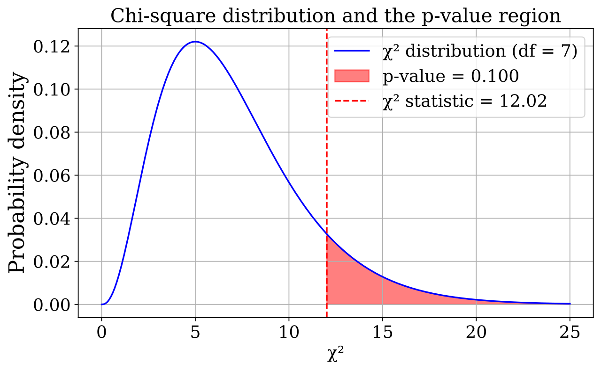
The question this test answers
You have one categorical variable with k categories, and somebody has made a claim about how the population splits across those categories. A manufacturer says its bags of candy are 30% red, 30% brown, and 40% yellow. A textbook says a fair die lands on each face one-sixth of the time. A subscription service says its customers split 25/40/35 across three tiers. You collect a sample and count. The counts never match the claim exactly — sampling sees to that. The goodness-of-fit test asks a single question: is the mismatch bigger than sampling noise can comfortably explain?
The hypotheses are stated in words as much as symbols:
- H0: the population proportions are exactly as claimed (p1 = 0.25, p2 = 0.40, p3 = 0.35, say).
- Ha: at least one proportion differs from its claimed value.
Notice that the alternative is vague on purpose. It says something is off; it does not say which category or in which direction. That vagueness is the price of testing all the categories at once, and it comes back to bite us in Section 5 in the ANOVA setting.
Observed, expected, and the statistic
The observed counts O are what you actually tallied. The expected counts E are what the null hypothesis predicts on average for a sample of your size: Ei = n × pi. Expected counts are frequently not whole numbers — 200 × 0.35 = 70 is tidy, but 137 × 0.35 = 47.95 is not, and you must not round it. Rounding expected counts is one of the most common ways a chi-square gets quietly wrecked by hand.
The statistic adds up one contribution per category:
χ2 = Σ (O − E)2 / E
Read that formula slowly, because it is the whole chapter in miniature. The numerator, (O − E)2, measures how far a category strayed from prediction, squared so that overshoots and undershoots both count as evidence. Dividing by E puts that miss on a fair scale: being 10 counts off when you expected 20 is a scandal; being 10 counts off when you expected 2,000 is nothing. Because every term is a square divided by a positive number, χ2 is never negative, and a value near zero means the data hug the claim. Big values, and only big values, are evidence against H0 — which is why the chi-square test is always right-tailed.
The degrees of freedom are df = k − 1, one less than the number of categories. The intuition: once you know the total and all but one category count, the last one is forced, so only k − 1 counts are free to vary. (If you had to estimate m parameters from the data to build the expected counts — fitting a Poisson model, for instance — you subtract those too: df = k − 1 − m.)
A worked example, start to finish
A meal-plan service claims its subscribers split across three tiers as Bronze 25%, Silver 40%, Gold 35%. A random sample of n = 200 subscribers gives Bronze 40, Silver 95, Gold 65. Test at α = 0.05.
Step 0 — check the conditions first. The four requirements are laid out in Section 4, and they are met here: the data are raw counts, not percentages; the sample is random; each subscriber is counted once and lands in exactly one tier, so the observations are independent; and every expected count computed in Step 1 is at least 5 (the smallest is 50). Do this before you look at any p-value, not after.
Step 1 — expected counts. EBronze = 200(0.25) = 50; ESilver = 200(0.40) = 80; EGold = 200(0.35) = 70. They sum to 200, which is a useful arithmetic check — expected counts always total n.
| Category | Observed O | Claimed p | Expected E = np | O − E | (O − E)2/E |
|---|---|---|---|---|---|
| Bronze | 40 | 0.25 | 50 | −10 | 100/50 = 2.0000 |
| Silver | 95 | 0.40 | 80 | +15 | 225/80 = 2.8125 |
| Gold | 65 | 0.35 | 70 | −5 | 25/70 = 0.3571 |
| Total | 200 | 1.00 | 200 | 0 | χ2 = 5.170 |
Step 2 — the statistic. 2.0000 + 2.8125 + 0.3571 = χ2 = 5.17.
Step 3 — degrees of freedom and critical value. k = 3 categories, so df = 3 − 1 = 2. From the table below, the critical value at α = 0.05 with df = 2 is 5.991.
| Degrees of freedom | α = 0.10 | α = 0.05 | α = 0.01 |
|---|---|---|---|
| 1 | 2.706 | 3.841 | 6.635 |
| 2 | 4.605 | 5.991 | 9.210 |
| 3 | 6.251 | 7.815 | 11.345 |
| 4 | 7.779 | 9.488 | 13.277 |
| 5 | 9.236 | 11.070 | 15.086 |
| 6 | 10.645 | 12.592 | 16.812 |
Step 4 — decide. 5.17 is less than 5.991, so we fail to reject H0. The p-value is about 0.075, which is larger than 0.05 and confirms the same decision.
Step 5 — say what that means, carefully. "At the 5% level, these data do not provide sufficient evidence that the true tier proportions differ from the claimed 25/40/35 split." That sentence is doing something specific. It does not say the claim is true. We fail to reject H0; we never accept it. Those are different verdicts — "not guilty" is not "innocent" — and a sample of 200 simply may not have had the power to detect a mismatch of the size that is really there. Absence of evidence is not evidence of absence. And the p-value of 0.075 is not a 7.5% chance that the provider is right. It is this: if the claimed split were exactly correct, samples of 200 would produce a mismatch this extreme or worse about 7.5% of the time. The probability lives in the data-generating process, not in the hypothesis.
- Goodness of fit compares one categorical variable's observed counts against a claimed distribution.
- E = n × p; never round expected counts, and check that they sum to n.
- χ2 = Σ(O − E)2/E is never negative, and the test is always right-tailed; df = k − 1.
- A p-value is the probability of data this extreme given H0 — not the probability that H0 is true.
- Check the four conditions before the p-value, and remember that fail to reject never means accept.
Section 2Chi-square test of independence
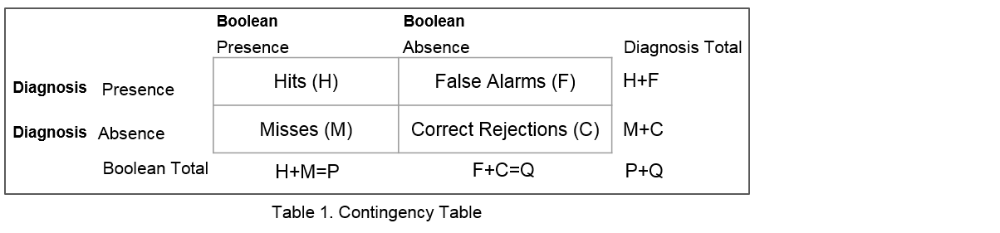
Two variables, one table
Now you have two categorical variables measured on the same people, and you cross them into a contingency table (also called a two-way table or crosstab) with r rows and c columns. Does exercise habit go with sleep quality? Does region go with brand preference? Does treatment group go with outcome category? The test of independence asks whether knowing a person's row tells you anything about their column.
- H0: the two variables are independent in the population — there is no association.
- Ha: the two variables are associated — they are not independent.
The statistic is the same formula as Section 1, cell by cell, and the test is still right-tailed. Only two things change: how you get the expected counts, and how you count degrees of freedom.
Expected counts from the margins
Under independence, the probability of landing in a particular row and a particular column is the product of the two separate probabilities. Translate that into counts and you get the working formula every cell obeys:
E = (row total × column total) / grand total
Why it works: the row total divided by n estimates the probability of that row; multiply by the column total and you get how many of that column's members should fall in that row if the row split were the same everywhere. That last phrase is the practical meaning of independence — every row has the same column profile.
Degrees of freedom are df = (r − 1)(c − 1). Same logic as before: with the margins fixed, once you fill in an (r − 1) by (c − 1) block of the table, subtraction forces every remaining cell.
A worked example, start to finish
A researcher surveys n = 300 adults, recording whether they exercise regularly and how they rate their sleep. Test for association at α = 0.05.
| Observed counts | Good sleep | Fair sleep | Poor sleep | Row total |
|---|---|---|---|---|
| Exercises regularly | 75 | 50 | 25 | 150 |
| Does not exercise | 45 | 55 | 50 | 150 |
| Column total | 120 | 105 | 75 | 300 |
Step 1 — expected counts. Top-left: (150 × 120)/300 = 60.0. Top-middle: (150 × 105)/300 = 52.5. Top-right: (150 × 75)/300 = 37.5. Because the two row totals happen to be equal here, the bottom row repeats those values. Every expected count is at least 5, so the test is safe to run.
| Cell | Observed O | Expected E | O − E | (O − E)2/E |
|---|---|---|---|---|
| Exercise & Good | 75 | 60.0 | +15.0 | 225/60 = 3.7500 |
| Exercise & Fair | 50 | 52.5 | −2.5 | 6.25/52.5 = 0.1190 |
| Exercise & Poor | 25 | 37.5 | −12.5 | 156.25/37.5 = 4.1667 |
| No exercise & Good | 45 | 60.0 | −15.0 | 225/60 = 3.7500 |
| No exercise & Fair | 55 | 52.5 | +2.5 | 6.25/52.5 = 0.1190 |
| No exercise & Poor | 50 | 37.5 | +12.5 | 156.25/37.5 = 4.1667 |
| Total | 300 | 300.0 | 0 | χ2 = 16.071 |
Step 2 — the statistic. Adding the last column: χ2 = 16.07.
Step 3 — degrees of freedom. r = 2 rows, c = 3 columns, so df = (2 − 1)(3 − 1) = 2. Critical value at α = 0.05 is again 5.991.
Step 4 — decide and interpret. 16.07 far exceeds 5.991, and the p-value is roughly 0.0003. We reject H0: there is strong evidence of an association between regular exercise and self-rated sleep quality in this population.
Step 5 — describe the association. The test says "associated" and stops there, so you have to look at the cells yourself. The two largest contributions are Exercise-and-Good (observed 75, expected 60) and Exercise-and-Poor (observed 25, expected 37.5): exercisers landed in "Good" more often and "Poor" less often than independence predicts. A tidier way to say the same thing is the standardized residual, (O − E)/√E; for Exercise-and-Good that is 15/√60 = +1.94, and for Exercise-and-Poor it is −12.5/√37.5 = −2.04. Residuals beyond roughly ±2 mark the cells that drove the result.
Step 6 — measure how big it is. With 300 people, even a modest association gets a tiny p-value, so report an effect size. Cramér's V = √[χ2 / (n × min(r−1, c−1))] = √[16.071 / (300 × 1)] = √0.05357 = 0.23. On a 0-to-1 scale, that is a real but moderate association — statistically unmistakable, practically modest.
- The test of independence crosses two categorical variables in an r × c table.
- E = (row total × column total)/grand total; df = (r − 1)(c − 1).
- Rejecting H0 means "associated," not "which way" — read the cells and standardized residuals to describe the pattern.
- Report an effect size such as Cramér's V; with large n, significance alone says very little about importance.
Section 3One-way ANOVA
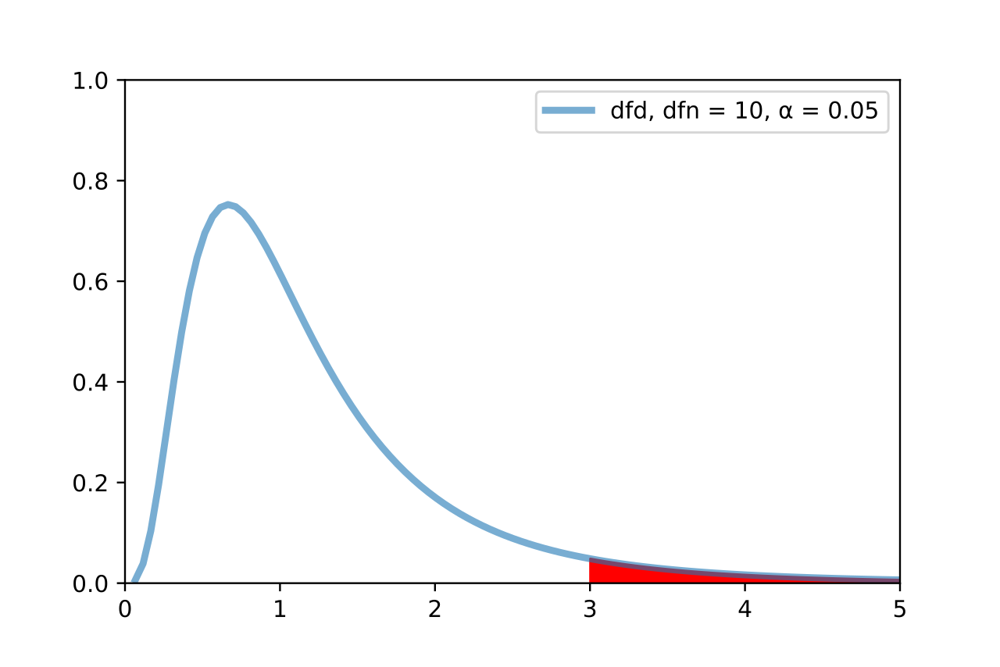
Why not just run a lot of t tests?
Suppose you have three training methods and you want to know whether their mean test scores differ. The obvious move is three t tests: A vs B, A vs C, B vs C. The obvious move is wrong, and it is worth seeing exactly why.
Each test at α = 0.05 has a 5% chance of a false alarm. If the three tests were independent, the chance that at least one raises a false alarm would be 1 − (0.95)3 = 1 − 0.857 = 0.143. With five groups there are ten pairwise tests, and the figure climbs to 1 − (0.95)10 = 0.401. Be honest about that calculation: pairwise tests on the same groups are not independent, because every pair reuses a sample the other pairs also used. So treat 14% and 40% as illustrations of the size of the problem rather than exact rates. The direction is what matters, and it is not in doubt — you set out to run a 5% risk and quietly took on a far larger one. This inflated risk is the family-wise error rate, and it is the reason ANOVA exists: one test, one α, one answer.
- H0: μ1 = μ2 = μ3 = … = μk (all population means are equal).
- Ha: at least one mean differs from at least one other. (Not "all means differ" — a very common misstatement.)
The idea: two ways to measure spread
The name is honest — you analyze variance in order to learn about means. Here is the trick. If all the group means were truly equal, then two completely different calculations would both estimate the same population variance σ2:
- Within-group variability (MSW): pool the scatter inside each group. Nothing about group differences touches this number — it is pure background noise, and it estimates σ2 whether H0 is true or not.
- Between-group variability (MSB): measure how far the group means sit from the grand mean. If H0 is true, the means differ only by sampling noise and this also estimates σ2. If H0 is false, real mean differences inflate it.
So the ratio
F = MSB / MSW = (signal + noise) / noise
should sit near 1 when the means are equal and grow large when they are not. That is why ANOVA, like chi-square, is a right-tailed test — only big F values are evidence against H0. And because both mean squares are sums of squares divided by positive degrees of freedom, neither can be negative, so F is never negative either.
The building blocks, with N = total observations, k = number of groups, nj and x̄j the size and mean of group j, and x̄ the grand mean:
- SSbetween = Σ nj(x̄j − x̄)2, with df = k − 1
- SSwithin = ΣΣ(x − x̄j)2, with df = N − k
- SStotal = SSbetween + SSwithin, with df = N − 1
- MS = SS / df in each row, and F = MSB/MSW with (k − 1, N − k) degrees of freedom
A worked example, start to finish
Three training methods, five participants each (N = 15, k = 3), test scores. Conditions first, as always: the groups are independent, each is roughly symmetric with no outliers, the response is quantitative, and the equal-variance condition is checked explicitly with these very numbers in Section 4. ANOVA is the right tool here.
| Group | Scores | Sum | nj | Mean x̄j | Σ(x − x̄j)2 |
|---|---|---|---|---|---|
| A | 68, 71, 72, 73, 76 | 360 | 5 | 72 | 16+1+0+1+16 = 34 |
| B | 72, 75, 77, 79, 82 | 385 | 5 | 77 | 25+4+0+4+25 = 58 |
| C | 78, 80, 82, 83, 87 | 410 | 5 | 82 | 16+4+0+1+25 = 46 |
| Overall | — | 1155 | 15 | x̄ = 77 | SSwithin = 138 |
Step 1 — grand mean. (360 + 385 + 410)/15 = 1155/15 = 77.
Step 2 — between-group sum of squares. SSbetween = 5(72 − 77)2 + 5(77 − 77)2 + 5(82 − 77)2 = 5(25) + 5(0) + 5(25) = 125 + 0 + 125 = 250.
Step 3 — within-group sum of squares. Add the last column of the table: 34 + 58 + 46 = 138.
Step 4 — check the partition. SStotal should equal 250 + 138 = 388. Computing it directly from all fifteen deviations about 77 gives 159 + 58 + 171 = 388. The identity holds, which is a strong sign the arithmetic is right.
Step 5 — mean squares and F. MSB = 250/2 = 125.00. MSW = 138/12 = 11.50. F = 125.00/11.50 = 10.87.
| Source | SS | df | MS = SS/df | F | p-value |
|---|---|---|---|---|---|
| Between groups | 250 | k − 1 = 2 | 125.00 | 10.87 | ≈ 0.0020 |
| Within groups (error) | 138 | N − k = 12 | 11.50 | — | — |
| Total | 388 | N − 1 = 14 | — | — | — |
Step 6 — decide. The critical value for F(2, 12) at α = 0.05 is 3.89. Our 10.87 sails past it, p ≈ 0.0020, so we reject H0.
| Numerator df (k − 1) | Denominator df (N − k) | Critical F, α = 0.05 |
|---|---|---|
| 2 | 12 | 3.89 |
| 2 | 20 | 3.49 |
| 3 | 20 | 3.10 |
| 3 | 30 | 2.92 |
| 4 | 30 | 2.69 |
Step 7 — interpret precisely. "There is strong evidence that at least one of the three method means differs from the others." That is all the F test earns you. It does not say A differs from B, and it does not say every pair differs. Section 5 is where you find out which pairs are really separated — and the answer will surprise you.
Step 8 — report an effect size. Eta squared, η2 = SSbetween/SStotal = 250/388 = 0.64. About 64% of the variation in test scores is explained by which method a participant received — a large effect, and a far more useful number to a decision-maker than "p < 0.05."
- Running many pairwise t tests inflates the family-wise error rate — 14% with three groups, 40% with five.
- ANOVA compares MSB (between-group variability) to MSW (within-group noise): F = MSB/MSW.
- SStotal = SSbetween + SSwithin; df are k − 1, N − k, and N − 1.
- A significant F means at least one mean differs — never "all means differ." Report η2 alongside it.
Section 4Assumptions
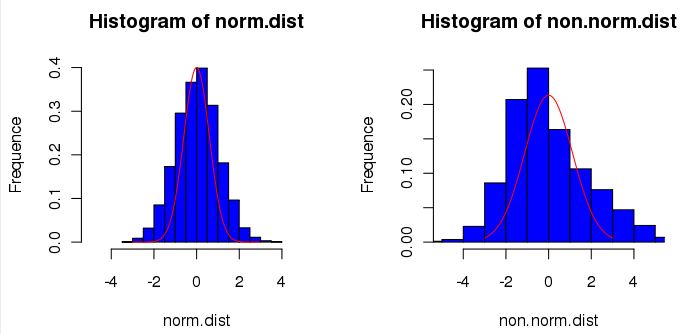
What chi-square requires
A p-value is a promise, and the promise is conditional. Every chi-square p-value assumes four things, and software will happily print a number even when all four are violated.
1. The data are counts. Chi-square consumes raw frequencies — how many people, how many items. Feeding it percentages, proportions, or group means is the single most frequent misuse. If your table holds "42%" rather than "42 people," convert back to counts first, and if you cannot, you do not have the data you need.
2. Observations are independent, and each falls in exactly one cell. One row of data per person or item. If the same person is counted twice — before and after an intervention, say — the observations are paired and chi-square is the wrong test; use McNemar's test for a paired 2 × 2 table.
3. Expected counts are large enough. The chi-square curve is a continuous approximation to a discrete count problem, and the approximation frays when expected counts are tiny. The common working rule: all expected counts ≥ 5. Cochran's slightly more forgiving version allows up to 20% of cells to have E between 1 and 5, provided none falls below 1. Note that this is a condition on expected, not observed, counts — an observed zero is perfectly legal.
4. The sample is random. Every inferential claim depends on the sample representing the population. No formula repairs a convenience sample.
When rule 3 fails, you have real options: collapse sparse categories into a sensible larger one (two adjacent, rarely used response levels become a single "other" category), collect more data, or switch to Fisher's exact test, which computes the probability directly and needs no large-sample approximation at all.
What ANOVA requires
1. Independence, both within and between groups. This is the assumption ANOVA is least willing to forgive, and no amount of data fixes a violation. If the same subjects appear in every group, you need repeated-measures ANOVA instead.
2. Approximate normality of the response within each group (equivalently, of the residuals). ANOVA is genuinely robust here: with roughly equal group sizes and a sample of decent size, moderate skew barely dents the F test, and the Central Limit Theorem is on your side. The condition matters most when groups are small (under about 15) or the data are strongly skewed or heavily outlier-ridden. Check it with a histogram or normal quantile plot per group, not with a formal normality test on tiny samples.
3. Homogeneity of variance — the population spreads are equal across groups. MSW pools all the groups' scatter into one number, and that pooling only makes sense if there is one common σ2 to pool. Two quick checks: the largest sample standard deviation should be less than about twice the smallest, or equivalently the largest variance less than about four times the smallest. Levene's test is the formal version.
4. The response is quantitative and measured on an interval or ratio scale. You cannot average a category.
Let us actually run check 3 on the Section 3 data. The within-group sums of squares were 34, 58, and 46, each with df = 4:
| Group | SS | s2 = SS/(n−1) | s |
|---|---|---|---|
| A | 34 | 34/4 = 8.50 | 2.92 |
| B | 58 | 58/4 = 14.50 | 3.81 |
| C | 46 | 46/4 = 11.50 | 3.39 |
Largest s divided by smallest s = 3.81/2.92 = 1.31, comfortably under 2. Largest variance over smallest = 14.50/8.50 = 1.71, comfortably under 4. The equal-variance condition is satisfied, so the pooled MSW of 11.50 was a legitimate thing to compute.
When a condition fails
A failed assumption is not the end of the analysis. It is a signpost to a different test.
| Condition that failed | Symptom | What to do instead |
|---|---|---|
| Expected counts too small | Any E < 5, sparse table | Combine categories; or use Fisher's exact test |
| Paired categorical data | Same subjects measured twice | McNemar's test |
| Unequal ANOVA variances | smax/smin > 2, especially with unequal n | Welch's ANOVA (does not pool variances) |
| Strong non-normality, small groups | Heavy skew or clear outliers | Kruskal–Wallis test (rank-based) |
| Same subjects in every group | Repeated measurements | Repeated-measures ANOVA |
| Non-random sample | Convenience or self-selected data | Describe only; no valid inference to a population |
- Chi-square needs counts, independent observations, expected counts ≥ 5, and a random sample.
- ANOVA needs independence, approximate normality within groups, equal variances, and a quantitative response.
- Rules of thumb: all E ≥ 5; smax/smin < 2 (or variance ratio < 4).
- Failed conditions point to a specific replacement test — Fisher's exact, McNemar, Welch, or Kruskal–Wallis.
Section 5After a significant ANOVA

The F test leaves you with a question
We rejected H0 in Section 3 with F = 10.87. What we know is that the three method means are not all equal. What we do not know is which ones differ. That gap is exactly what post-hoc ("after this") comparisons fill: they go back through the pairs, one at a time, while keeping the total false-alarm risk across the whole family of comparisons at α.
And this is where you cannot simply run ordinary t tests, for the very reason ANOVA existed in the first place. Three unadjusted pairwise tests carry a family-wise error rate in the neighborhood of 14%. Post-hoc procedures are pairwise tests with the inflation engineered out.
Two workhorses: Bonferroni and Tukey
The Bonferroni correction is the simplest honest fix in all of statistics: if you plan m comparisons, test each one at α/m. With three groups, m = 3 and each comparison is judged at 0.05/3 = 0.0167. Equivalently, multiply each raw p-value by 3 and compare to 0.05. It works for any set of comparisons, it takes ten seconds to explain, and it is somewhat conservative — it protects against false alarms so firmly that it can miss real differences, especially when m is large.
Tukey's HSD (Honestly Significant Difference) is purpose-built for the specific job of comparing all pairs after an ANOVA, and for that job it is more powerful than Bonferroni. Instead of a t distribution it uses the studentized range distribution q, which already accounts for the fact that you are looking at the largest gaps among k means. For equal group sizes the rule is beautifully simple: any two means further apart than the HSD value are significantly different.
HSD = qα, k, N−k × √(MSW / n)
Working it out on our data
From the ANOVA table: MSW = 11.50, N − k = 12, k = 3, n = 5 per group. The studentized range value q for α = 0.05, k = 3, df = 12 is 3.77.
Step 1 — the standard error piece. √(MSW/n) = √(11.50/5) = √2.30 = 1.517.
Step 2 — the HSD threshold. HSD = 3.77 × 1.517 = 5.72. Any two sample means more than 5.72 points apart are significantly different; any pair closer than that is not.
Step 3 — compare every pair. The means were A = 72, B = 77, C = 82.
| Comparison | Difference in means | |Difference| | vs. HSD = 5.72 | Conclusion |
|---|---|---|---|---|
| A vs B | 72 − 77 = −5 | 5.00 | 5.00 < 5.72 | Not significant |
| A vs C | 72 − 82 = −10 | 10.00 | 10.00 > 5.72 | Significant |
| B vs C | 77 − 82 = −5 | 5.00 | 5.00 < 5.72 | Not significant |
Read that result carefully, because it is the whole point of the section. The overall F was highly significant, yet only one of the three pairs separates. Method C beats method A; neither can be distinguished from the middle method B. An analyst who reported "the ANOVA was significant, so all three methods differ" would have gotten the science wrong while getting the arithmetic right.
Step 4 — give intervals, not just verdicts. Tukey also produces confidence intervals: difference ± HSD. For A vs C that is −10 ± 5.72, or (−15.72, −4.28). Because the interval excludes zero, the difference is significant — and the interval says far more than the p-value does, namely that the plausible advantage of C over A runs from about 4 to about 16 points. Say what such an interval means with care: the procedure that produced it captures the true mean difference in 95% of all possible samples. It is not a 95% chance that this particular interval, already computed and sitting on the page, contains the parameter. The parameter is fixed; the interval is what varies from sample to sample.
Step 5 — cross-check with Bonferroni. The standard error of a difference is √[MSW(1/n + 1/n)] = √[11.50(0.4)] = √4.60 = 2.145. For A vs C, t = 10/2.145 = 4.66; for A vs B, t = 5/2.145 = 2.33. The Bonferroni critical value is the t for α = 0.0167 two-tailed with df = 12, about 2.78. So A vs C (4.66) clears it and A vs B (2.33) does not — the same conclusion Tukey reached, which is reassuring.
Choosing a method, and when not to bother
| Method | Best used for | Character |
|---|---|---|
| Tukey's HSD | All pairwise comparisons after ANOVA | The default choice; most powerful for this exact job |
| Bonferroni | A small, pre-specified set of comparisons | Simple, universally valid, conservative |
| Dunnett's test | Every group vs. a single control group | More powerful than Tukey when only control contrasts matter |
| Scheffé's method | Any contrast, including ones you thought of afterward | Most flexible, most conservative |
| Games–Howell | Pairwise comparisons with unequal variances | The post-hoc partner to Welch's ANOVA |
Two habits keep this honest. First, if the overall F is not significant, do not go fishing through the pairs hoping one turns up — that is precisely the error-inflation the F test protected you from. (Planned contrasts specified before seeing the data are the legitimate exception.) Second, always show the picture. Side-by-side boxplots of the three groups convey the overlap between A and B, and the clean separation between A and C, more immediately than any table of p-values.
- A significant F says "at least one mean differs"; post-hoc tests identify which pairs.
- Tukey's HSD = q × √(MSW/n) is the standard for all pairwise comparisons; Bonferroni (α/m) is the simple general-purpose fix.
- Significant overall does not mean every pair differs — here only A vs C separated.
- A 95% interval is a statement about the long-run procedure, not a 95% chance for the interval in front of you.
The chapter in one breath
- Every chi-square test uses χ2 = Σ(O − E)2/E, is never negative, and is always right-tailed.
- Goodness of fit tests one categorical variable against a claimed distribution: E = np, df = k − 1.
- Test of independence tests two categorical variables for association: E = (row × column)/total, df = (r − 1)(c − 1) — and association is not causation.
- One-way ANOVA compares three or more means with F = MSB/MSW, avoiding the family-wise error that many t tests would create.
- The partition SStotal = SSbetween + SSwithin is both the engine of ANOVA and a built-in arithmetic check.
- Chi-square needs counts, independence, and expected counts ≥ 5; ANOVA needs independence, rough normality, and equal variances — each failure has a named alternative.
- A significant F means at least one mean differs; Tukey's HSD or a Bonferroni correction tells you which pairs, without inflating α.
- Always pair a p-value with an effect size (Cramér's V, η2) and an interval, and state both with the precision they demand.
ReferenceWords worth knowing
A quick reference for the terms in this chapter — skim it now, or circle back whenever a word trips you up.
- Alpha (α)
- The significance level: the risk of a false alarm you agree to accept before collecting data, most often 0.05.
- Analysis of variance (ANOVA)
- A procedure that compares three or more population means by comparing two estimates of variance, between-group and within-group.
- Bonferroni correction
- Testing each of m planned comparisons at α/m so the family-wise error rate stays at α. Simple and conservative.
- Chi-square statistic (χ2)
- Σ(O − E)2/E, a non-negative measure of total mismatch between observed and expected counts.
- Contingency table
- A two-way table of counts crossing two categorical variables, with row, column, and grand totals in the margins.
- Cramér's V
- An effect size for a contingency table, √[χ2/(n × min(r−1, c−1))], running from 0 (no association) to 1.
- Degrees of freedom
- The number of values free to vary once the constraints are imposed; k − 1 for goodness of fit, (r−1)(c−1) for independence, and (k−1, N−k) for ANOVA.
- Eta squared (η2)
- SSbetween/SStotal: the proportion of variation in the response explained by group membership.
- Expected count (E)
- The count a cell would show on average if the null hypothesis were true. Never round it.
- F statistic
- The ratio MSB/MSW. Near 1 when group means are equal, large when they are not; never negative, and always tested in the upper tail.
- Family-wise error rate
- The probability of at least one false alarm across a whole family of tests. It inflates rapidly as the number of comparisons grows.
- Goodness-of-fit test
- A chi-square test of whether one categorical variable's observed counts match a claimed distribution.
- Homogeneity of variance
- The ANOVA condition that all groups share the same population variance; checked with smax/smin < 2 or Levene's test.
- Kruskal–Wallis test
- A rank-based alternative to one-way ANOVA used when the normality condition fails badly.
- Mean square (MS)
- A sum of squares divided by its degrees of freedom — that is, a variance estimate. MSB and MSW are the two that build F.
- Observed count (O)
- The actual tally in a category or cell of your sample.
- p-value
- The probability of getting data at least as extreme as yours if the null hypothesis were true. It is not the probability that the null hypothesis is true.
- Post-hoc test
- A follow-up comparison run after a significant ANOVA to identify which specific groups differ, with the family-wise error rate controlled.
- Standardized residual
- (O − E)/√E for one cell; values beyond roughly ±2 flag the cells driving a significant chi-square.
- Sum of squares (SS)
- A total of squared deviations. In ANOVA, SStotal splits exactly into SSbetween + SSwithin.
- Test of independence
- A chi-square test of whether two categorical variables measured on the same subjects are associated.
- Tukey's HSD
- Honestly Significant Difference: q × √(MSW/n), the standard post-hoc method for comparing all pairs of means after ANOVA.
Check yourself
Correlation & Regression
Almost every interesting question in the world is a question about two things at once: does studying more raise a score, does a heavier dose lower a symptom, does price move with square footage. Correlation and regression are the two tools that answer those questions honestly. Correlation puts a single number on how tightly two quantitative variables track each other; regression draws the one straight line that fits the cloud of points better than any other line could, and lets you use it to predict. Neither tool requires you to be fast at arithmetic — every formula in this chapter is built from things you already know, means and standard deviations. What they do require is care in interpretation, because this is the corner of statistics where confident people say wrong things most often.
By the end of this chapter you can
- Build and read a scatterplot, and describe a relationship by its form, direction, and strength.
- Place the explanatory and response variables on the correct axes.
- Compute the correlation coefficient r by hand from deviations, and interpret its size and sign correctly.
- State the cautions on r — linearity only, outlier sensitivity, restricted range, and the fact that correlation is not causation.
- Find the least-squares regression line, and explain exactly what quantity "least squares" makes smallest.
- Interpret the slope and intercept in the units of the problem, without smuggling in a causal claim.
- Compute residuals and r2, and read a residual plot for curvature, spread, and outliers.
- Use the line to predict, and recognize when a prediction is illegitimate extrapolation.
- State the assumptions behind inference on the slope, and phrase a p-value and a confidence interval correctly.
Section 1Scatterplots
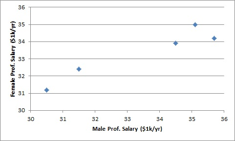
One dot, one individual, two measurements
Everything up to this point in the book has described one variable at a time: the mean of a set of scores, the spread of a set of blood pressures. A scatterplot is the first graph that shows two quantitative variables measured on the same individuals. Each individual contributes a single dot, positioned by its two values. If you measure six students on hours studied and exam score, you get six dots — not twelve.
Which variable goes where is not arbitrary. The explanatory variable (also called the predictor, or x) goes on the horizontal axis; the response variable (the outcome, or y) goes on the vertical axis. The convention encodes a direction of interest: we are asking whether x helps us say something about y, not the reverse. Hours studied explains exam score far more naturally than exam score explains hours studied, so hours goes on the x-axis. When neither variable is obviously the explainer — a person's arm span and their height, say — the choice is yours, but you must make it before you draw, because the regression line in Section 3 depends on it.
Form, direction, strength — and then outliers
Describing a scatterplot is a disciplined habit, and the discipline is a fixed order of four questions.
Form asks what shape the cloud takes. Is it a straight band? A curve that bends? Two separate clusters? Or a formless blob with no shape at all? Form comes first because it decides whether the rest of this chapter even applies: correlation and least-squares regression are tools for linear form. Point them at a U-shaped cloud and they will hand you a number, and the number will be a lie.
Direction asks which way the band tilts. Positive means high x values tend to come with high y values — the cloud rises left to right. Negative means high x comes with low y, and the cloud falls. Note the word tend: direction is a statement about the general drift of the whole cloud, not a promise about any single pair of points.
Strength asks how tightly the points hug that form. A narrow, pencil-thin band is strong; a fat, fuzzy band is weak. Strength is about scatter around the pattern, not about how steep the pattern is. This is the single most common misreading of a scatterplot, and it is worth pausing on: a nearly flat band of points that lie almost exactly on a shallow line is a strong relationship with a small slope. A steep spray of widely scattered points is a weak relationship with a large slope. Steepness and tightness are different questions.
Outliers are the last question. An outlier in a scatterplot is a point that sits far from the overall pattern — and note that it need not be extreme in x alone or y alone. A student with an ordinary 5 hours of study and an ordinary 95 on the exam may be perfectly unremarkable on either variable by itself, yet fall well off the joint pattern. Only the two-variable picture reveals that.
| Question | What you are looking at | Vocabulary to use |
|---|---|---|
| Form | The shape of the cloud | Linear, curved (nonlinear), clustered, no pattern |
| Direction | Which way a linear pattern tilts | Positive, negative, or neither |
| Strength | How tightly points hug the pattern | Strong, moderate, weak |
| Outliers | Points far from the overall pattern | Outlier; influential point (Section 4) |
The data we will carry through this chapter
To keep the arithmetic honest, one small data set will run through the next four sections. Six students recorded their total study hours before an exam, and we recorded their exam score out of 100.
| Student | A | B | C | D | E | F |
|---|---|---|---|---|---|---|
| Hours studied (x) | 2 | 4 | 5 | 7 | 8 | 10 |
| Exam score (y) | 72 | 69 | 70 | 80 | 83 | 94 |
Sketch it mentally, or on paper. The form is roughly linear. The direction is positive: the low-hours students sit low, the ten-hour student sits highest. The strength looks good but not perfect — student A studied only 2 hours and out-scored student B, who studied 4. That single crossing is exactly the kind of imperfection that keeps r below 1, and we will see it show up numerically in Section 2 and again as a residual in Section 4.
- A scatterplot shows two quantitative variables on the same individuals; one dot per individual.
- Explanatory variable on the horizontal axis, response on the vertical.
- Describe every scatterplot in the same order: form, direction, strength, outliers.
- Strength is not steepness. A shallow but tight band is a strong relationship; a steep but fuzzy one is weak.
Section 2The correlation coefficient
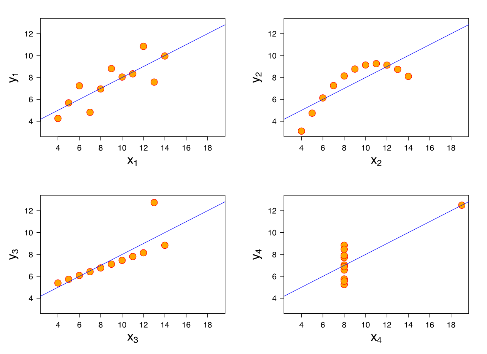
What r actually measures
The correlation coefficient, written r (and formally the Pearson correlation), is a single number between −1 and +1 that measures the direction and strength of a straight-line relationship between two quantitative variables. Its sign gives the direction; its distance from zero gives the strength. An r of exactly +1 means every point lies precisely on an upward line, −1 means every point lies precisely on a downward line, and 0 means no linear tendency at all.
The formula looks intimidating until you see what it is doing:
r = Σ(x − x̄)(y − ȳ) ÷ √[ Σ(x − x̄)2 × Σ(y − ȳ)2 ]
Read the top first. For each individual we ask: was it above or below average on x, and above or below average on y? If both answers agree — above on both, or below on both — the product of the two deviations is positive. If they disagree, the product is negative. Adding those products across all individuals asks the whole data set to vote. A large positive total means agreement dominates. The denominator then rescales that total so it can never exceed 1 in size, which is what makes r comparable across studies and completely free of units.
An equivalent form makes the unit-free part obvious. If zx and zy are the standardized scores of the two variables, then
r = [ 1 ÷ (n − 1) ] × Σ zx zy
Correlation is nothing more than the average product of z-scores. That is also why r does not change if you convert inches to centimeters or dollars to euros: standardizing washes the units out.
Computing r, step by step
Take the six students. First the means: Σx = 2 + 4 + 5 + 7 + 8 + 10 = 36, so x̄ = 36 ÷ 6 = 6 hours. And Σy = 72 + 69 + 70 + 80 + 83 + 94 = 468, so ȳ = 468 ÷ 6 = 78 points. Now build the deviation table — this one table will serve us for the rest of the chapter.
| x | y | x − x̄ | y − ȳ | (x−x̄)(y−ȳ) | (x−x̄)2 | (y−ȳ)2 |
|---|---|---|---|---|---|---|
| 2 | 72 | −4 | −6 | 24 | 16 | 36 |
| 4 | 69 | −2 | −9 | 18 | 4 | 81 |
| 5 | 70 | −1 | −8 | 8 | 1 | 64 |
| 7 | 80 | 1 | 2 | 2 | 1 | 4 |
| 8 | 83 | 2 | 5 | 10 | 4 | 25 |
| 10 | 94 | 4 | 16 | 64 | 16 | 256 |
| Sums: 36 | 468 | 0 | 0 | 126 | 42 | 466 |
Two built-in checks before going on: the raw columns must reproduce the means (36 ÷ 6 = 6 and 468 ÷ 6 = 78), and both deviation columns must sum to exactly 0. They do. Now substitute:
r = 126 ÷ √(42 × 466) = 126 ÷ √19,572 = 126 ÷ 139.90 = 0.9006
So r ≈ +0.90. Round to two decimals for reporting. The sign is positive, matching the upward tilt we saw. The magnitude, 0.90, is close to 1, confirming a strong linear relationship — strong, but not perfect, because of student A out-scoring student B.
If you prefer the z-score route, you would need the standard deviations: sx = √(42 ÷ 5) = √8.4 = 2.898 hours and sy = √(466 ÷ 5) = √93.2 = 9.654 points. Then r = 126 ÷ [5 × 2.898 × 9.654] = 126 ÷ 139.89 = 0.9006, the same answer. Keep sx and sy handy; Section 3 uses them.
Four cautions that matter more than the formula
1. r measures linear association only. Consider hours of sleep versus alertness: too little is bad, too much is groggy, and the relationship is an arch. Such data can produce an r very near zero while the two variables are in fact tightly related — just not in a straight line. r near 0 means "no linear pattern," never "no relationship."
2. r is not resistant. Because it is built from means and squared deviations, a single distant point can drag r dramatically up or down. This is the lesson of Anscombe's quartet in the figure above: four data sets that share essentially the same means, the same r, and the same regression line, yet look nothing alike — one is genuinely linear, one is a clean curve, one is a perfect line ruined by a single outlier, and one is a vertical stack plus one lone point that manufactures the entire correlation.
3. A restricted range shrinks r. If you compute the correlation between admission test scores and college grades using only the students who were admitted, you have thrown away the entire low end of the x range. Cutting the range of x mechanically reduces r, which is why selective samples routinely make good predictors look useless.
4. Correlation is not causation. This is the one everyone can recite and almost no one applies. A strong r between two variables is consistent with at least four different worlds: x causes y; y causes x; a third lurking variable causes both; or the pattern is coincidence in a small sample. Ice cream sales correlate with drowning deaths — because hot weather drives both. The correlation is real; the causal story is fiction. Only a randomized experiment, which breaks the link between the treatment and every lurking variable at once, licenses a causal claim from data like these.
Two smaller notes worth keeping. r requires both variables to be quantitative — there is no correlation between eye color and height. And r is symmetric: the correlation of x with y equals the correlation of y with x. That symmetry is a warning in itself, because it means r alone can never tell you which variable is doing the explaining.
| Value of r | What it says | What it does not say |
|---|---|---|
| r = +1 | Every point on one upward straight line | Nothing about how steep that line is |
| r = +0.90 | Strong positive linear association | That x causes y |
| r = −0.90 | Strong negative association — exactly as strong as +0.90 | That the relationship is "worse" than a positive one |
| r = 0.05 | Almost no linear tendency | That the variables are unrelated — the form may be curved |
| r = −1.4 | Nothing — this is impossible | — check your arithmetic; r lives in [−1, +1] |
- r measures the direction and strength of a linear relationship and always lies between −1 and +1.
- r = 126 ÷ √(42 × 466) = 0.90 for our study-hours data — strong and positive.
- r has no units, is unchanged by rescaling, and is symmetric in x and y.
- r is not resistant to outliers, is blind to curvature, shrinks under a restricted range, and never establishes causation.
Section 3The regression line
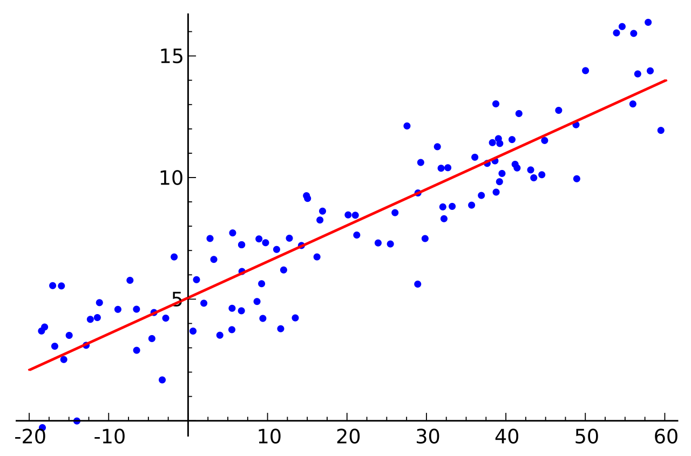
What "least squares" means
Once a scatterplot looks linear, you can lay a straight line through it and use that line as a model. But infinitely many lines pass through a cloud of points, so we need a rule that picks exactly one. The rule is least squares.
For any candidate line, and for each data point, measure the vertical distance from the point to the line — how far off the line's prediction was. That distance is the residual: residual = y − ŷ, where ŷ ("y-hat") is the value the line predicts. Square every residual so that misses above and below both count as errors and cannot cancel, then add them up. The least-squares regression line is the unique line that makes that sum, Σ(y − ŷ)2, as small as it can possibly be.
Two details in that definition are load-bearing. First, the distances are vertical, not perpendicular — because we are in the business of predicting y from x, and vertical distance is exactly the error in predicting y. Second, we square rather than take absolute values, which has the side effect of making a large miss count disproportionately. That is why one outlier can tilt a regression line so effectively.
An immediate consequence of squaring vertical distances: the regression line of y on x is not the same as the line of x on y. Correlation is symmetric; regression is not. Swap the roles of the variables and you get a different line, so decide which variable you are predicting before you fit anything.
Slope and intercept
Write the line in the familiar form ŷ = a + bx, where b is the slope and a the y-intercept. The least-squares solution is remarkably tidy:
b = Σ(x−x̄)(y−ȳ) ÷ Σ(x−x̄)2 — equivalently b = r × (sy ÷ sx)
a = ȳ − b x̄
The second slope formula is worth staring at. The slope is the correlation, converted from standardized units back into real ones by the ratio of the two standard deviations. It also tells you that the slope and r always share a sign: a positive correlation guarantees an upward line. And the intercept formula is a rearrangement of ȳ = a + bx̄, which says something useful in its own right: the least-squares line always passes through the point of averages (x̄, ȳ). If your line misses that point, you have made an arithmetic error.
Fitting the line to our data
Everything we need is already in the Section 2 table. The slope:
b = 126 ÷ 42 = 3
Check it the other way: b = r × sy ÷ sx = 0.9006 × (9.654 ÷ 2.898) = 0.9006 × 3.331 = 3.00. Agreed. Now the intercept:
a = ȳ − bx̄ = 78 − (3)(6) = 78 − 18 = 60
The least-squares line is ŷ = 60 + 3x. Verify the point of averages: at x = 6, ŷ = 60 + 18 = 78 = ȳ. Correct.
Interpreting the slope. The slope is a rate, and its units are the units of y per unit of x: 3 exam points per hour of study. State it as a prediction, not a promise: "for each additional hour studied, the model predicts an increase of about 3 points in exam score, on average." Not "an extra hour raises your score by 3 points" — that is a causal claim, and this is observational data, so a lurking variable such as prior preparation could be producing both.
Interpreting the intercept. The intercept is the predicted y when x = 0: a student who studies 0 hours is predicted to score 60. Sometimes that is meaningful, sometimes it is nonsense, and the deciding question is always whether x = 0 is inside the range of the data we actually observed. Our hours ran from 2 to 10, so x = 0 sits outside the data — close by, but outside. Treat that 60 as an anchor that positions the line, not as a real forecast about a student who never opens the book.
Proving the line is best
"Least squares" is a claim we can test with arithmetic. Our line gives the following predictions and errors: at x = 2, ŷ = 66 and the actual score was 72, an error of +6; at x = 4, ŷ = 72 versus 69, error −3; at x = 5, ŷ = 75 versus 70, error −5; at x = 7, ŷ = 81 versus 80, error −1; at x = 8, ŷ = 84 versus 83, error −1; at x = 10, ŷ = 90 versus 94, error +4. Squaring and adding: 36 + 9 + 25 + 1 + 1 + 16 = 88.
Now try a steeper line. Keep it through the point of averages — for any slope you fix, the intercept that minimizes the squared errors is a = ȳ − b x̄, so the best line at that slope always passes through (x̄, ȳ) — with slope 3.5, so a = 78 − 3.5(6) = 57 and ŷ = 57 + 3.5x. Its errors are +8, −2, −4.5, −1.5, −2, +2, and the squared total is 64 + 4 + 20.25 + 2.25 + 4 + 4 = 98.5. Worse. A shallower slope of 2.5 gives a = 63, errors +4, −4, −5.5, −0.5, 0, +6, and a squared total of 16 + 16 + 30.25 + 0.25 + 0 + 36 = 98.5. Also worse, and by exactly the same amount — the penalty for missing the best slope is symmetric.
| Candidate line | Slope | Intercept | Σ(y − ŷ)2 | Verdict |
|---|---|---|---|---|
| ŷ = 63 + 2.5x | 2.5 | 63 | 98.5 | Too shallow |
| ŷ = 60 + 3x | 3 | 60 | 88 | Least squares — the best line |
| ŷ = 57 + 3.5x | 3.5 | 57 | 98.5 | Too steep |
No other slope beats 88. That number has a name we will use throughout Section 4: the sum of squared errors, SSE.
- The least-squares line minimizes Σ(y − ŷ)2, the sum of squared vertical distances.
- b = Σ(x−x̄)(y−ȳ) ÷ Σ(x−x̄)2 = r sy ÷ sx; and a = ȳ − b x̄.
- Our line is ŷ = 60 + 3x: predicted score rises about 3 points per extra study hour.
- The line always passes through (x̄, ȳ), and the slope always shares the sign of r.
- Regression is not symmetric — predicting x from y gives a different line.
Section 4r-squared and residuals
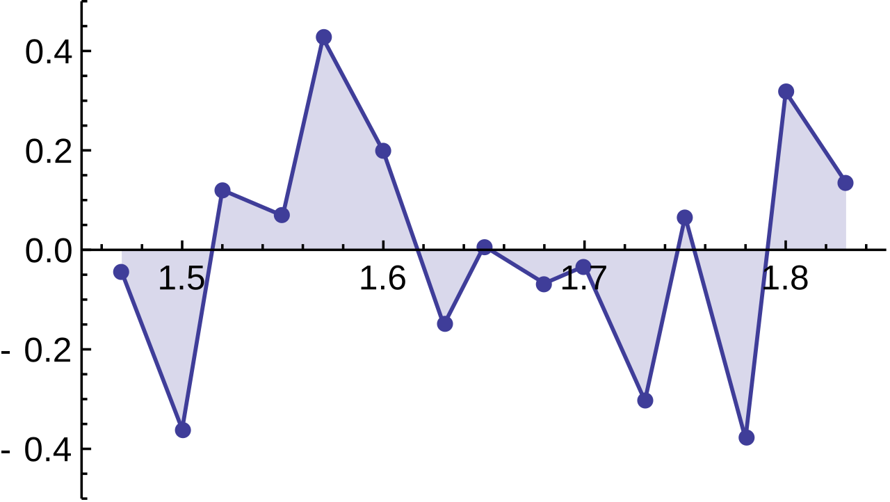
Residuals: what the line missed
A residual is the leftover: residual = observed − predicted = y − ŷ. A positive residual means the actual value sat above the line — the individual did better than the model expected. A negative residual means it sat below. The residuals are the raw material for everything in this section, so compute them carefully.
| x (hours) | y (actual) | ŷ = 60 + 3x | Residual y − ŷ | Residual2 |
|---|---|---|---|---|
| 2 | 72 | 66 | +6 | 36 |
| 4 | 69 | 72 | −3 | 9 |
| 5 | 70 | 75 | −5 | 25 |
| 7 | 80 | 81 | −1 | 1 |
| 8 | 83 | 84 | −1 | 1 |
| 10 | 94 | 90 | +4 | 16 |
| Sums | — | — | 0 | 88 |
The residuals sum to exactly zero. That is not luck — it is a mathematical guarantee of least squares, and therefore a free error check every time you do this by hand. Student A, who studied 2 hours and scored 72, has the largest residual: +6 points better than the model predicted. Student C, at 5 hours and 70 points, came in 5 points short.
r2: how much variation the line explains
Before we had a line, our only guess for any student's score would have been the overall mean, 78. The total variation in y around that mean is the total sum of squares, SST = Σ(y − ȳ)2 = 466, which we already computed in Section 2. After fitting the line, the variation still left over is SSE = Σ(y − ŷ)2 = 88. The line therefore accounted for 466 − 88 = 378 of the original variation.
The coefficient of determination is that accounted-for share:
r2 = 1 − (SSE ÷ SST) = 1 − (88 ÷ 466) = 1 − 0.1888 = 0.8112
And it lives up to its name: it really is the square of the correlation. From Section 2, r = 0.9006, and 0.90062 = 0.8111 — the same value up to rounding. So we report r2 = 0.81, or 81%.
The correct sentence is: about 81% of the variation in exam scores is explained by the linear relationship with hours studied. The remaining 19% is variation the line does not capture — sleep, prior knowledge, test anxiety, luck. Three phrasings that sound similar and are all wrong: it does not mean 81% of the points lie on the line; it does not mean predictions are 81% accurate; and it does not mean studying causes 81% of exam performance. r2 is a statement about variation, nothing else.
Because it is a square, r2 always falls between 0 and 1 and is always positive — which means it discards the direction of the relationship. Report r alongside it, or your reader cannot tell whether the association was positive or negative.
Reading a residual plot
A residual plot graphs the residuals on the vertical axis against x (or against ŷ) on the horizontal. Its whole purpose is to magnify what the original scatterplot hides. In the original plot, a gentle curve can be swamped by the steep overall rise; subtracting the line removes that rise and leaves the misfit standing alone.
What you want to see is nothing: a formless horizontal band of points scattered above and below the zero line, with no shape and roughly constant width. That is the residual plot's way of saying the straight-line model is adequate. Any structure is a message.
| What the residual plot shows | What it means | What to do |
|---|---|---|
| Formless horizontal band around zero | A line is an adequate model | Proceed — report slope, r, r2 |
| A clear U or arch (curvature) | The true form is curved, not linear | Do not use the line; transform a variable or fit a curve |
| A fan widening left to right | Spread of y grows with x (non-constant variance) | Predictions are far less reliable at the wide end |
| One point far from the rest vertically | An outlier in the y direction | Investigate it; report results with and without it |
| One point far out in x with a small residual | A high-leverage, possibly influential point | Refit without it — if the line moves a lot, say so |
Our six residuals, in x order, run +6, −3, −5, −1, −1, +4. They start high, dip negative in the middle, and come back up — a faint U. With only six points that is far too little evidence to abandon the linear model, but it is exactly the pattern you would flag and watch if you collected forty students instead of six.
The distinction in the last two table rows deserves emphasis. Leverage is about being extreme in x; a point far to the right or left of the other x values sits at the end of a long lever and can swing the line. Influence is about actually changing the answer: a point is influential if removing it noticeably moves the slope, the intercept, or r. High-leverage points are the ones most likely to become influential, but the only way to know is to refit without the point and compare.
- Residual = observed − predicted = y − ŷ; residuals from a least-squares line always sum to 0.
- SST = 466 (variation about ȳ), SSE = 88 (variation left after the line), so r2 = 1 − 88÷466 = 0.81.
- Say it as: "81% of the variation in y is explained by the linear relationship with x" — not 81% of points, not 81% accurate, not 81% caused.
- r2 is always positive, so it hides direction — report r too.
- A good residual plot shows no pattern; curvature, fanning, or a lone stray point each mean something different.
Section 5Prediction
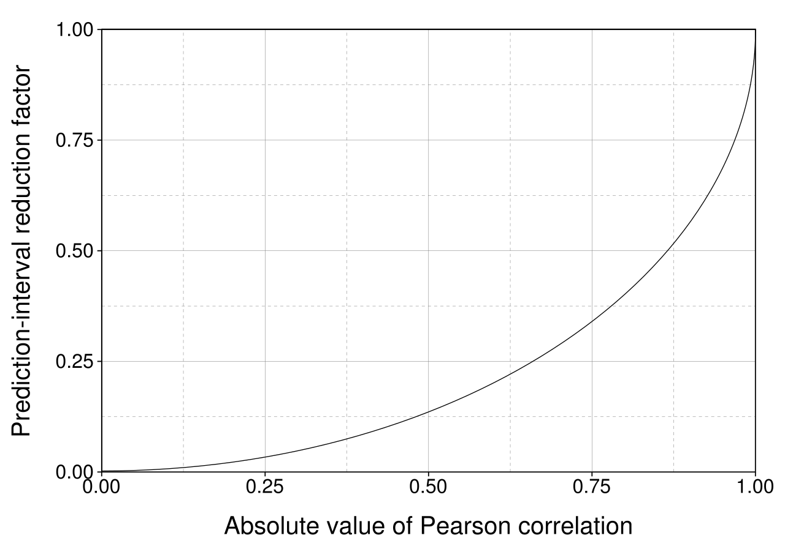
Using the line
Prediction is mechanical: put a value of x into the equation and read off ŷ. With ŷ = 60 + 3x, a student who studies 6 hours is predicted to score 60 + 3(6) = 78; a student who studies 9 hours is predicted to score 60 + 3(9) = 87.
What is not mechanical is knowing what that number means. The regression line predicts the average y for individuals with that x, not the value any one individual will get. Our own data prove the point: student E studied 8 hours, the line predicted 84, and the actual score was 83. Off by one. Student A studied 2 hours, the line predicted 66, and the actual was 72 — off by six. A prediction from a regression line is a center of gravity, not a guarantee.
You can quantify the typical miss. The standard error of the estimate measures the typical size of a residual:
se = √[ SSE ÷ (n − 2) ] = √(88 ÷ 4) = √22 = 4.69 points
We divide by n − 2 rather than n − 1 because fitting a line consumed two pieces of information — a slope and an intercept. Interpretation: individual scores fall about 4.7 points away from the regression line, on average. So the prediction of 87 for a nine-hour student is better read as "somewhere in the mid-to-high 80s, give or take five points or so," and a rough working range of ŷ ± 2se — roughly 78 to 96 — is a serviceable ballpark. It is only a ballpark: a proper prediction interval is wider than that near the edges of the data, which is exactly the flaring you see in the figure above.
Interpolation is safe; extrapolation is not
Interpolation means predicting at an x value inside the range you observed. Our hours ran from 2 to 10, so predicting for 6 hours is interpolation, and it rests on evidence: we watched what happened to students on both sides of 6.
Extrapolation means predicting outside that range, and it rests on an assumption you cannot check — that the straight-line pattern continues where you have no data. Very often it does not. Watch what our perfectly reasonable line does when pushed:
| Hours (x) | Prediction ŷ = 60 + 3x | Inside the data (2–10)? | Verdict |
|---|---|---|---|
| 3 | 69 | Yes | Interpolation — trustworthy |
| 6 | 78 | Yes | Interpolation — trustworthy |
| 9 | 87 | Yes | Interpolation — trustworthy |
| 0 | 60 | No (just outside) | The intercept — anchors the line, not a real forecast |
| 15 | 105 | No | Impossible — the exam is out of 100 |
| 25 | 135 | No | Absurd — the model has left reality behind |
The line never warns you. It will happily return 135 for a 25-hour student, because a line is an infinite object and arithmetic has no common sense. The real relationship must flatten — scores are capped at 100, and past some point extra hours yield nothing or actively hurt through fatigue. Our data simply never visited that region, so our line knows nothing about it. Always state the range of x your model was built on, and refuse predictions outside it.
Four more habits before you predict
Do not predict backwards with the same line. Our line predicts score from hours. To predict hours from score you must refit with the roles reversed — that line has slope 126 ÷ 466 = 0.27, not 1 ÷ 3. Algebraically inverting a regression line gives the wrong answer.
Remember regression to the mean. Because the slope is r × sy ÷ sx and r is less than 1 in size, predictions are always pulled toward ȳ relative to how extreme x was. A student one full standard deviation above average in hours is predicted only r = 0.90 standard deviations above average in score. This is not a defect; it is a consequence of imperfect correlation, and it explains why exceptional performances tend to be followed by more ordinary ones without any cause at all.
Check the conditions before you trust any inference. The descriptive tools — r, the slope, r2 — only need a roughly linear scatterplot. But the moment you attach a p-value or a confidence interval to the slope, you are relying on a model, and that model has four stated assumptions. Linearity: the true relationship between x and y is a straight line — check the scatterplot and confirm with a patternless residual plot. Independence: the observations are independent of one another, which comes from how the data were collected, not from anything you can see in a plot. Constant variance: the spread of y about the line is the same across the range of x — the fanning row in the Section 4 table is exactly this condition failing. Approximate Normality: the residuals are roughly Normal about the line, checked with a histogram or Normal plot of the residuals. Our six students are far too few to check any of this convincingly, which is itself the honest report.
Be precise about uncertainty language. Regression output usually includes a test of whether the slope differs from zero, along with a p-value and a confidence interval. Three statements must be kept straight. First, a p-value is the probability of getting data at least this extreme if the true slope were zero — it is not the probability that the true slope is zero, and not the probability that your finding is wrong. Second, a large p-value means you fail to reject the hypothesis of zero slope; it does not let you accept that the slope is zero. Absence of evidence for a relationship is not evidence that there is none — a small sample can hide a real slope easily. Third, a 95% confidence interval for the slope describes the long-run behavior of the procedure: if you repeated the whole study many times, about 95% of the intervals constructed this way would contain the true slope. It does not mean there is a 95% chance the true slope lies inside the one interval in front of you — that interval either contains it or it does not.
- Substituting x into the line predicts the average y at that x, not any individual's value.
- se = √[SSE ÷ (n−2)] = √22 = 4.69 — the typical distance of a point from the line.
- Interpolation (inside the observed x range) is supported by data; extrapolation is not, and produced an impossible 105 at 15 hours.
- To predict x from y, refit — do not invert the equation.
- Inference about the slope assumes linearity, independence, constant variance, and roughly Normal residuals — state and check them.
- A p-value is not the probability the null is true; failing to reject a zero slope is not accepting it; and a 95% CI describes the long-run procedure, not this one interval.
The chapter in one breath
- A scatterplot shows two quantitative variables on the same individuals; describe it as form, direction, strength, outliers, with the explanatory variable on the x-axis.
- r measures the direction and strength of a linear relationship, lies in [−1, +1], has no units, and is symmetric; for our data r = 126 ÷ √(42×466) = 0.90.
- r is blind to curvature, vulnerable to outliers, shrunk by a restricted range, and silent about causation — a lurking variable can produce any correlation you like.
- The least-squares line minimizes Σ(y−ŷ)2; b = r sy÷sx = 3 and a = ȳ − b x̄ = 60, giving ŷ = 60 + 3x, which passes through (6, 78).
- The slope is a predicted rate of change (3 points per hour); the intercept is only meaningful if x = 0 sits within the data.
- Residuals (y − ŷ) sum to zero and give SSE = 88; with SST = 466, r2 = 0.81 — 81% of the variation in scores is explained by the linear relationship with hours.
- A residual plot should look like nothing at all; curvature, fanning, and stray points each diagnose a different failure that r2 alone would hide.
- Interpolate freely, never extrapolate — our line predicts an impossible 105 at 15 hours — and report every prediction with its typical error se = 4.69 and its range of validity.
- Inference on the slope assumes linearity, independence, constant variance, and roughly Normal residuals; a p-value is not the probability the null is true, failing to reject is not accepting, and a 95% CI is a claim about the procedure.
ReferenceWords worth knowing
A quick reference for the terms in this chapter — skim it now, or circle back whenever a word trips you up.
- Coefficient of determination (r2)
- The proportion of the variation in y explained by the linear relationship with x; equals 1 − SSE÷SST, and equals the square of r.
- Correlation coefficient (r)
- A unit-free number between −1 and +1 measuring the direction and strength of a straight-line relationship between two quantitative variables.
- Explanatory variable
- The variable used to explain or predict the other; plotted on the horizontal axis and denoted x. Also called the predictor or independent variable.
- Extrapolation
- Predicting at an x value outside the range of the observed data; unsupported by evidence and a common source of absurd results.
- Fitted value (ŷ)
- The value the regression line predicts for a given x; also called the predicted value.
- Influential point
- An observation whose removal noticeably changes the slope, intercept, or r. Usually a high-leverage point — one extreme in the x direction, sitting at the end of a long lever — but only refitting without it can confirm influence.
- Intercept (a)
- The predicted value of y when x = 0; computed as ȳ − b x̄ and meaningful only if x = 0 falls within the data.
- Interpolation
- Predicting at an x value inside the observed range; the legitimate use of a regression line.
- Least-squares regression line
- The unique line ŷ = a + bx that makes the sum of squared vertical distances from the points to the line as small as possible.
- Lurking variable
- A third variable, not measured, that affects both x and y and can create a correlation with no causal link between them.
- Outlier
- A point lying far from the overall pattern of the scatterplot; it need not be extreme on either variable alone.
- Regression to the mean
- The tendency for predicted y values to be less extreme than their x values, because the slope is r times sy÷sx and |r| is less than 1.
- Residual
- Observed minus predicted, y − ŷ; positive above the line, negative below, and always summing to zero for a least-squares fit.
- Residual plot
- A graph of residuals against x (or against ŷ); a good one shows no pattern at all.
- Response variable
- The outcome being explained or predicted; plotted on the vertical axis and denoted y. Also called the dependent variable.
- Restricted range
- A sample that covers only part of the possible x values, which mechanically shrinks r and hides a real relationship.
- Scatterplot
- A graph of two quantitative variables measured on the same individuals, one dot per individual.
- Slope (b)
- The predicted change in y for a one-unit increase in x; equals r × sy ÷ sx and always shares the sign of r.
- Spurious correlation
- A strong association between variables that have no causal connection, typically produced by a lurking variable or by chance.
- Standard error of the estimate (se)
- The typical size of a residual, √[SSE ÷ (n − 2)]; a root-mean-square measure of how far observed points fall from the line, divided by n − 2 because the fit consumed a slope and an intercept.
- Sum of squared errors (SSE)
- Σ(y − ŷ)2, the variation in y left unexplained after fitting the line.
- Total sum of squares (SST)
- Σ(y − ȳ)2, the total variation in y about its mean before any line is fitted.